Copyright © 2026 by Aida Sol. All rights reserved. No part of this book may be reproduced or transmitted in any form without prior written permission from the author, except for brief quotations used in reviews.
This book is intended for educational and informational purposes only. It does not constitute or replace professional medical advice, diagnosis, or treatment. Always consult a qualified healthcare provider before making any changes to your health, diet, supplements, or hair care routine.
While every effort has been made to ensure accuracy, the author and publisher make no representations or warranties. Readers are solely responsible for their own decisions and outcomes.
Published by Aida Sol · 2026
For anyone who has ever looked in the mirror and wondered why their hair wasn't reflecting how well they were trying to take care of themselves.
This book is for you — your curiosity, your patience, and your willingness to look a little deeper.
— Aida
The Living Crown
Where science, nourishment, and ritual meet — a practical guide to understanding the hair you have and caring for it well.
Healthy hair is not a finish line. It is the steady result of paying attention — to your body, your habits, and what your strands have been trying to tell you.
Each strand of hair carries its own unique story, a silent testament to our health, vitality, and balance. For years, my rich, flowing mane was more than just an aesthetic feature. It was a symbol of my confidence and self-worth. My hair shimmered with life and was a source of quiet pride. Then, almost imperceptibly at first, things began to change.
My hair, once thick, voluminous and full of lustre, gradually lost its thickness and natural glow, bringing a quiet sense of dread into my daily life. I remember the rising anxiety each time a fresh collection of strands appeared in the shower drain, and how every glance in the mirror revealed thinning areas I could no longer ignore. At first, I blamed these changes on diet or the natural process of ageing. What I failed to realise then was how profoundly unmanaged stress, subtle nutritional deficiencies, and lifestyle imbalances were affecting my hair's health.
If you have ever gazed down at strands resting in your palm and felt that quiet panic rise, or noticed thinning spots in photos you can't unsee, you are not alone. That unsettling shift from self-assurance to a gnawing worry became the catalyst for a deeper exploration into hair care and holistic wellness.
Looking back, I wish I had recognised the warning signs sooner. Understanding how intricately overall health is linked to hair health would have spared me immense frustration and uncertainty. Instead of pursuing fleeting fixes and costly treatments that merely soothed symptoms, I could have focused on identifying and resolving the root causes much earlier.
Everything changed when I stopped pursuing temporary solutions and began seeking genuine answers. I discovered that truly healthy hair emanates from proper internal nourishment, not merely from superficial treatments. By nurturing my body from within, cultivating a calmer mind, and treating my hair with gentle care, patience, and compassion, I not only restored its shine but also reclaimed a deep sense of confidence. Now, my hair tells a story of healing, resilience, and renewed strength.
In these pages, you will uncover why hair changes occur and how to support it through every stage of life. You will be guided through understanding key blood tests and hormonal influences, nourishing your hair with the right nutrients, building simple routines that fit your lifestyle, exploring treatments with clarity, and creating a personalised care plan you can genuinely sustain. Along the way, you will gain practical tools to foster lasting hair health and steady progress.
What surprised me most was discovering how many others were experiencing similar challenges in silence. Friends, family, and even strangers confided their struggles with thinning, breakage, shedding, scalp issues, and premature greying. Their stories echoed a common truth that many of us lack access to clear, reliable, and evidence-based guidance on hair care. Instead, we navigate a tangle of trends, guesswork, myths, and misinformation, often feeling overwhelmed and alone.
This realisation is why I felt compelled to write this book, a resource to help you understand your hair, support it holistically, and care for it with confidence. Whether you are dealing with hair loss, repairing damage, or simply trying to preserve your hair's natural beauty and vibrancy, you will find practical, research backed strategies and empowering insights to help you move forward.
Healthy, lustrous hair comes from consistency and informed choices, not from promises of instant transformation. With the right mindset and the appropriate tools, you can achieve lasting, meaningful results.
This book offers a clear roadmap, practical steps, supportive tools and insights to help you navigate shedding, thinning and dullness while reconnecting with your overall wellbeing. Your healthiest, happiest hair is waiting.
Things to Keep in Mind
This book is intended for readers seeking general information and perspectives on hair health. The insights shared draw on research, personal experience, and a holistic approach. All content is for educational and informational purposes only and is not a substitute for professional medical advice, diagnosis, or treatment.
Some sections include suggested steps, action plans, and practical examples. These are provided to support understanding and awareness only. They should not be interpreted as medical instructions, advice, prescriptions, or guarantees of results. Individual outcomes will vary.
You are responsible for deciding whether and how to apply any information in this book. No specific results are promised or implied. Always use your own judgement and consult a qualified healthcare professional or hair specialist before making any changes that may affect your health, hair, or wellbeing.
If you have medical conditions, allergies, or concerns about your hair or scalp, seek professional guidance before introducing new practices, products, supplements, or treatments. Always perform a patch test before applying new oils, herbs, or topical ingredients to help assess suitability for your skin and scalp.
This book offers knowledge, clarity, and practical tools as you explore what works best for you. Let it guide your understanding and support your confidence as you approach your hair journey with care, curiosity, and self-trust.
Discover Your Hair’s
Potential
Your Hair, your Crown
Hair has been described as our "crowning glory" for good reason. It frames our face, influences how others perceive us, and often serves as a canvas for personal expression. Changes in hair, particularly thinning or loss, can have a profound psychological impact. Research has consistently shown that hair concerns can significantly affect self-esteem, confidence, and overall quality of life.
Across cultures, hair has carried deep symbolic meaning through history. Ancient stories linked hair to divine strength and vitality. Many Native American traditions viewed long hair as a spiritual connection to nature. Cultural and religious customs around covering, cutting, or shaving hair have long represented identity, devotion, or transition. Even today, hair continues to serve as a marker of identity, rebellion, conformity, and cultural belonging.
Beyond symbolism, hair functions as a visible indicator of internal health. Changes in texture, growth patterns, or density often reflect nutritional deficiencies, hormonal imbalance, or physical stress within the body. In this way, hair acts as a barometer of wellbeing, making hair care an essential part of holistic health rather than a purely cosmetic concern.
The connection between hair and identity becomes especially clear when hair changes involuntarily, whether through medical treatments, hormonal shifts, or conditions such as alopecia. For many people, adjusting to these changes requires emotional adaptation as well as physical care. Recognising this relationship allows hair concerns to be addressed with greater understanding, compassion, and depth.
Hair Health Matters
Your hair can reveal more about your health than most parts of your body. It often shows signs of imbalances before other symptoms appear.
Healthy hair reflects more than beauty, it responds to nourishment, hormones, sleep quality, stress levels, and daily habits. When hair appears strong and vibrant, it often mirrors internal balance. When it becomes thin, dull, or prone to shedding, it may signal that the body needs attention and support.
In a world driven by shortcuts and instant results, it's easy to feel overwhelmed by conflicting advice and endless product promises. Lasting hair health doesn't come from quick fixes or surface treatments. It starts by understanding how hair connects to the body and by consistently supporting those foundations.
Hair responds sensitively to physical and emotional strain. Chronic stress, nutrient depletion, and hormonal changes often show up in the hair before they are recognised elsewhere. Learning to notice these signals early allows you to address root causes rather than masking symptoms.
Caring for your hair is therefore an act of self-care and self-regulation. Through adequate nourishment, calm routines, gentle practices such as scalp massage, and a balanced lifestyle, you create the conditions your body needs to repair, grow, and restore.
In the chapters ahead, we will explore where science and self-awareness meet. You will learn about the biology of hair growth, the nutrients that support vitality, and holistic practices that help restore balance and resilience. Together, these insights will empower you to care for your hair and your whole self with confidence.
Challenges of Modern Hair Care
Modern hair care is more complex than ever, with countless products, treatments, and conflicting advice available; it can feel overwhelming to find what works. Unlike our ancestors, who relied on simple, nature-based remedies passed down through generations, we now navigate a world filled with new challenges that impact our hair’s health.
Stress is woven into modern life, and when it lingers without relief, its impact often shows up in the body. Ongoing stress can disrupt hormonal balance and contribute to shedding, thinning, or changes in hair growth cycles. Many people notice hair changes weeks or months after illness, emotional strain, or major life transitions. At the same time, diets high in processed foods may lack essential nutrients such as iron, zinc, protein, and B vitamins, all of which are vital for strong, healthy hair.
Environmental stressors also play a role. Pollution, hard water, and UV exposure weaken hair’s protective barrier, while heat-styling, chemical treatments, and harsh products strip moisture and resilience from the hair shaft.
Social media further intensifies pressure by promoting unrealistic images of “perfect” hair. Filtered visuals and curated results can distort expectations, leading many to believe their natural hair is somehow failing. These digital comparisons often overlook genetics, professional styling, lighting, and editing.
Working from home, accelerated by the pandemic, has further disrupted daily routines. Without structured days and regular schedules, hair care has become as flexible, and often as neglected, as our sweatpants clad work attire. What was once a mindful morning ritual can easily turn into an occasional afterthought.
Despite these challenges, it is important to remember that hair is remarkably resilient. When supported with consistent care and gentle attention, it has an impressive ability to recover, restore balance, and thrive.
Holistic Approach to Hair Wellness
Healthy hair begins with a holistic perspective that views hair as an extension of overall wellbeing. Rather than masking symptoms, this approach focuses on understanding and addressing underlying causes.
A holistic foundation starts with nourishment, including a diet rich in vitamins and minerals that support hair health from within. Alongside this, stress awareness and gentle practices such as mindfulness, movement, and regular exercise help maintain balance throughout the body and support the natural hair growth cycle.
Consistency is the true key to progress. This book blends traditional wisdom with modern science to guide you through realistic, sustainable strategies for hair wellness. You will explore tools ranging from advanced therapies and supplements to time-honoured remedies, all designed to support your individual journey
Together, we will uncover what works best for you, allowing you to build healthier, happier hair and recognise it as a reflection of your inner strength, resilience, and care.
Get to Know your Hair Inside and Out
Before we dive in, a quick heads-up: this chapter explores the science of your hair, including its structure, how it grows, what it is made of, and why factors such as hair type, density, and porosity matter. While some of this may feel technical at first, it forms the foundation for every routine, treatment, and choice you will make later.
Understanding the biology of your hair is not just for the scientifically curious. It is for anyone who wants to understand what their hair is experiencing and how to support it effectively. This knowledge gives you the confidence to read your hair’s signals, make informed care choices, and move away from guesswork.
Hair is one of the most fascinating structures of the human body, appearing simple on the surface yet remarkably complex in its biology. Beyond its aesthetic role, hair serves important protective functions and plays a powerful part in identity, confidence, social interaction, and self-perception. To care for it well, we must first understand what is happening beneath the surface, from the structure of the strand to the environment of the follicle.
Healthy hair is not defined by appearance alone. It often reflects what is happening within the body and how well it is being supported. By exploring the fundamental structure and composition of hair, you build a strong knowledge base that allows every future step to be more effective.
Let’s begin by examining the structural features that shape hair health.
Hair Structure More Than Meets the Eye
Effective hair care starts with understanding how hair works. Without that insight, it is easy to cause unintentional damage through misguided treatments, impatience with natural growth cycles, or unrealistic expectations.
When you understand growth and shedding, you can reduce unnecessary worry, work with your hair’s natural rhythm, and focus on long-term health rather than control.
Each strand has unique characteristics shaped by biology and genetics. Hair begins in the follicle, a tiny pouch beneath the scalp and emerges as the shaft, the visible part that reveals texture, strength, and overall condition. Features such as porosity, thickness, density, texture, and melanin all influence how hair absorbs moisture, holds colour, responds to products, and behaves day-to-day. Genetics also plays a role in the natural variations we see across individuals and ethnicities.
With these fundamentals, you can choose routines and products that fit your hair’s natural design. Now, let’s explore the hair shaft, layer by layer, to see how structure shapes health and appearance.
Hair Follicle Diagram
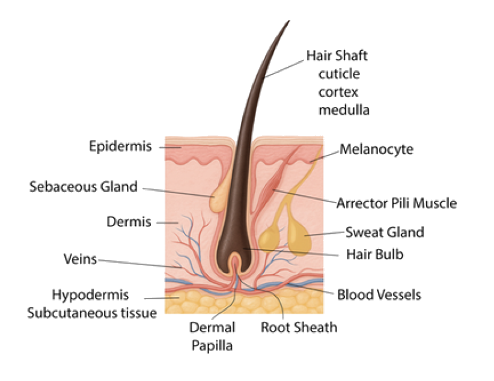
Hair Shaft the Strength and Shine
Human hair is primarily composed of keratin, a tough protein also found in our nails and the outer layer of our skin, which gives hair its strength and resilience. Each individual hair consists of three concentric layers, each with a distinct role in how hair looks, feels, and behaves.
Cuticle
The cuticle is the outer protective layer. It is made of overlapping cells, often compared to fish scales or roof tiles. When the cuticle lies flat and smooth, hair reflects light well, creating shine and making hair feel softer and more manageable. A healthy cuticle also reduces moisture loss, supporting hydration and flexibility.
When the cuticle becomes raised or damaged, hair tends to look dull, feel rough, and tangle more easily. This is why many hair care products and techniques focus on smoothing and protecting the cuticle.
Cortex
The cortex forms most of the hair shaft and contains melanin, determining colour based on pigment type and concentration. Eumelanin gives black to brown shades, and pheomelanin creates red to yellow tones. As melanin production declines with age, hair becomes grey or white.
Beyond colour, the cortex plays a major role in hair strength, elasticity, and texture. It is made up of long keratin filaments held together by chemical bonds. Disulfide bonds provide strength and help determine overall shape, while hydrogen bonds are weaker and more temporary.
The cortex relies on the cuticle for protection. A damaged cuticle leaves the cortex vulnerable to dryness, breakage, and other structural issues.
Medulla
The medulla is the innermost layer of the hair shaft. It is usually present only in thicker or coarser hair types and is often absent in fine hair. It has a honeycomb-like structure made of soft keratin and air spaces. Its exact function is not fully understood, but it may contribute to insulation, heat retention, or the appearance and feel of certain hair types.
Hair is not made of protein alone. It contains around 10-15% water, along with natural oils, pigments, and trace minerals. This unique composition makes hair strong yet flexible, able to absorb moisture, withstand daily wear, and remain responsive to treatments or environmental stressors.
Hair Follicles the Growth Engine
Beneath the surface of your scalp lies the true engine of hair growth, the hair follicle. These tiny, tube-like structures produce and anchor each strand, functioning like a root system that sustains the life of your hair. When follicles become inflamed, damaged, or less active, growth can slow, strands may weaken, and shedding may increase.
Each hair follicle is more than a physical structure. It functions like a living mini-organ, responding to internal signals such as hormones, nervous system activity, stress chemistry, and nutrient availability. Receptors within the follicle help regulate how long hair remains in the growth phase, meaning a calm, well-supported internal environment encourages stronger, more resilient strands.
During prolonged stress, elevated cortisol and related signals can disrupt the hair growth cycle. In genetically susceptible individuals, this may contribute to miniaturisation, where strands gradually grow finer over time. Stress can also push more hairs into the shedding phase prematurely, which explains why noticeable changes often appear months after illness, major life events, or extended periods of strain.
Inside each follicle, specialised cells such as fibroblasts and stem cells support growth and regeneration. Gentle, consistent scalp stimulation, such as massage or mindful touch, may help improve circulation to the dermal papilla, the structure at the base of the follicle that helps regulate nourishment and growth signalling. While stimulation is not a cure for all forms of hair loss, it can be a supportive practice within a broader, holistic hair care approach.
Now, let us look at the key segments that make up each follicle.
Infundibulum
The uppermost portion of the follicle, beginning at the surface of the epidermis and extending down to the opening of the sebaceous duct. This area is most exposed to product buildup, pollution, and environmental irritation.
Isthmus
The section between the sebaceous duct opening and the bulge. The bulge region, where the arrector pili muscle attaches, contains vital stem cells within the outer root sheath that support follicle renewal.
Inferior Segment
The portion extending from the bulge to the base of the follicle. It includes the bulb, where new hair is formed. The bulb contains the follicular matrix, a group of rapidly dividing cells that produce the hair fibre, and it surrounds the dermal papilla, which plays a central role in regulating the hair growth cycle.
Hair Bulb – Origin of New Hair
The hair bulb sits at the base of each follicle, where living cells actively divide to produce new hair. This is also where melanocytes (pigment-producing cells) create melanin, the pigment responsible for hair colour. When the bulb and its surrounding environment are well supported, hair is more likely to grow stronger, thicker, and more resilient.
Dermal Papilla – Command Centre
Beneath the bulb sits the dermal papilla, a small, pear-shaped structure rich in blood supply that delivers oxygen and nutrients to support hair growth. It also helps regulate signalling within the follicle that influences the hair growth cycle, anagen (growth), catagen (transition), and telogen (rest), guiding follicles through periods of growth and rest.
Root Sheath – Protective Tunnel
The root sheath surrounds the growing hair within the follicle. It guides and protects the strand, helps support its shape, and contains a reservoir of stem cells, especially in the bulge region, that contribute to repair and renewal.
The inner root sheath sits closest to the hair strand. It helps guide the hair along a stable path and keeps the developing strand anchored as it moves upward. The outer root sheath surrounds the inner layer. It provides structural support, helps protect the follicle, and houses important stem cells that support follicle renewal across growth cycles.
Sebaceous Gland – Nature's Conditioner
Each hair follicle is connected to a sebaceous gland, which produces sebum, a natural oil that helps keep hair moisturised, flexible, and protected. When sebum production is balanced, hair tends to feel softer and more resilient. Too much sebum can contribute to oily buildup and clogged follicles, while too little can leave hair dry, tight, and more prone to breakage.
Sweat Glands – Cooling Nourishing Duo
Your scalp contains two types of sweat glands that help regulate body temperature and support a healthy scalp environment.
Eccrine glands produce thin, watery sweat that helps cool the body. On the scalp, this moisture can influence comfort, hydration, and overall scalp function, especially during heat, exercise, or periods of stress.
Apocrine glands produce a thicker secretion that can contribute to body scent when it mixes with skin bacteria. These glands are far less active on the scalp than in areas such as the underarms, but they remain part of the skin’s broader system of balance.
Together, sweat glands help regulate scalp heat and moisture. When sweat mixes with natural oils and product residue, it can also contribute to buildup, which is why gentle cleansing and regular scalp hygiene are important, particularly for those who sweat frequently.
Melanocytes – Hair Colour Producers
Located in the hair bulb, melanocytes are specialised pigment-producing cells. They transfer melanin into the developing hair strand, giving it its natural colour. As melanocyte activity declines over time, less pigment is deposited, which is the biological reason hair turns grey or white.
Hair colour is determined by the amount and type of melanin produced in the hair follicle, a process controlled by several genes. The MC1R gene, for instance, plays a crucial role in determining whether a person produces more eumelanin (a black/brown pigment) or pheomelanin (a red/yellow pigment).
Variations in this gene are responsible for red hair, a recessive trait that requires two copies of the variant gene to be present for expression. The complexity of genetic influence on hair colour explains why children don't always have the same hair colour as either parent and why a wide spectrum of colours exists within the human population.
Arrector Pili Muscle – Goosebump Reflex
Tiny but mighty, the arrector pili muscle is attached to each hair follicle. When triggered by cold, fear, or strong emotion, it contracts, causing the hair to stand on end and creating the familiar sensation of goosebumps.
In humans, this reflex is largely a remnant of our evolutionary past. It once helped ancestors retain body heat and appear larger in response to a threat. What makes the arrector pili muscle especially interesting is where it attaches, near the follicular bulge, a key region associated with follicle renewal.
Even small structures like this contribute to the overall follicle environment, highlighting how intricate and interconnected hair biology truly is.
Natural Hair Variations
Blonde hair: often cited at around 150,000 strands. The strands are typically finer, so hair may appear less dense than the strand count suggests.
Brown/Brunette hair: often cited at around 110,000 to 120,000 strands. Many people fall into this range, with a balanced mix of strand count and thickness.
Black hair: often cited at around 100,000 strands. Strand diameter is often thicker, which can create a fuller look.
Red hair: often cited at around 90,000 strands. Strands are often thicker or coarser, which can still give a strong, striking appearance.
These numbers are not a measure of better hair. They simply highlight how naturally different hair can be, shaped by genetics and ancestry.
Different Hair Types and Textures
Human hair exhibits remarkable diversity in its appearance and characteristics, varying not only between individuals but also across different parts of the body. Understanding hair types and textures is crucial for proper hair care, as each type has distinct needs and responds differently to treatments and styling methods.
Hair Texture
Hair texture and curl pattern are strongly influenced by the shape of the hair follicle. Round follicles tend to produce straighter hair, while oval or asymmetrical follicles are more likely to create wavy or curly patterns. In general, the more elliptical the follicle shape, the tighter the curl pattern may appear. This follicle shape is largely genetic, which is why hair texture often runs in families.
Hair texture is also influenced by multiple genes that affect strand structure and follicle development. Researchers have identified genetic factors associated with curl pattern, including genes such as TCHH (Trichohyalin), which relates to the structure of the hair fibre, and EDAR (Ectodysplasin A Receptor), which is involved in the development of hair follicles. These influences help explain why certain textures are more common in particular populations. For example, tightly coiled hair is more frequently seen among people of African descent, where follicle shape and strand structure often support a curlier growth pattern.
Hair Types
One of the most widely used hair typing frameworks, popularised by Andre Walker, categorises hair into 4 main types, each with subcategories that reflect curl pattern, strand shape, and texture.
Type 1 – Straight Hair
Straight hair grows from round follicles, producing smooth strands that reflect light easily and often appear naturally shiny. Sebum also travels down the hair shaft more quickly, which can make the scalp and roots look oilier.
Subtypes
1A: Very fine, soft and flat
1B: Medium texture with slight body
1C: Coarse, thicker and slightly resistant to styling
Straight hair often has a more compact cuticle layer, which can make it feel strong and less porous. It may resist some chemical processes and typically responds best to lightweight products that do not weigh it down.
Type 2 – Wavy Hair
Wavy hair often grows from slightly oval follicles, creating soft waves that sit between straight and curly. This texture can be prone to frizz and may become more defined in response to humidity. Waves typically begin a few inches from the roots, creating a naturally tousled look.
Subtypes
2A: Loose, fine waves with minimal volume
2B: Defined S-shaped waves with medium texture
2C: Deep, more structured waves with occasional spirals
Wavy hair tends to thrive on balance. Too much moisture can weigh waves down, while too little can leave them frizzy and undefined.
Type 3 – Curly Hair
Curly hair often grows from oval or asymmetrical follicles, forming structured curls that spring into S-shapes or ringlets. These curls are bouncy and full of movement, but they can dry out more easily because natural oils struggle to travel along the spiral pattern.
Subtypes
3A: Loose, large curls with shine and softness
3B: Tighter, corkscrew curls with medium to coarse texture
3C: Very tight curls, densely packed and full of volume
Curly hair often has fewer protective cuticle layers than straight hair, so it tends to benefit from deep hydration, minimal heat, and gentle detangling.
Type 4 – Coily or Kinky Hair
Coily hair often grows from highly oval or flattened follicles, producing tight coils or zigzag patterns. This texture can be more fragile because its bends and twists make it harder for natural oils to travel down the hair shaft, leading to dryness and breakage without consistent moisture. At the same time, coily hair is highly versatile and can be remarkably resilient when well cared for.
Subtypes
4A: Tight, springy coils with an S pattern
4B: Tighter coils with a zigzag shape
4C: Densely packed coils with little visible curl, high shrinkage, and rich volume
Coily hair often has fewer protective cuticle layers and sharper bends along the strand, so it benefits from intense hydration, minimal heat, and gentle handling to support strength and length retention.
Hair Types and Follicle Shape
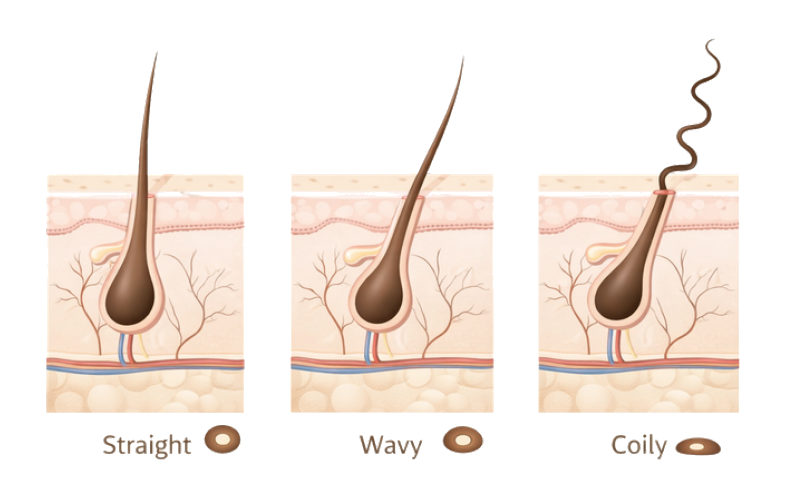
Hair Density
Hair density refers to how many hair strands grow on your scalp, in other words, how many follicles are present within a given area. It is different from strand thickness, which describes the diameter of each individual hair.
High-density hair has more strands packed closely together, often creating a fuller look with less visible scalp. Low-density hair has fewer strands, which can make the scalp more noticeable, especially under bright light or when hair is pulled back. Density varies from person to person and is largely influenced by genetics.
Understanding your hair density helps you tailor your routine more effectively, from choosing product textures to selecting styling methods and cuts that complement your natural volume and manageability.
Hair Thickness
Hair thickness refers to the diameter of each individual strand and should not be confused with hair density, which describes how many strands grow on the scalp. Strand thickness influences how hair looks, feels, and responds to products and styling.
Genetics plays a major role in determining thickness. For example, variations in genes such as EDAR, which are more common in some East Asian populations, have been associated with thicker hair fibres and straighter textures. Other genes influence follicle density, which affects overall fullness. Hair thickness is typically categorised as fine, medium, or coarse.
Fine Hair – Delicate and Lightweight
Fine strands feel soft and light, often appearing flat or limp. They style easily but can be weighed down by heavy products.
Medium Hair – Balanced and Versatile
Medium strands offer a balance of strength and flexibility, making this the most manageable type.
Coarse Hair – Strong but Dry-Prone
Coarse strands feel thicker or more wiry. They often hold shape and volume well, but they may feel dry if moisture is not replenished.
Hair Porosity
Hair porosity describes how well your hair can absorb and hold onto moisture, which depends on the condition of the cuticle, the protective outer layer of each hair strand. Knowing your hair’s porosity helps you choose the right products and care techniques to keep your hair healthy and hydrated.
Low Porosity
Cuticle layers are tightly packed, so moisture enters slowly. Hair may take longer to get fully wet and to dry. Products may sit on the surface rather than absorb easily.
Best approach: Lightweight, water-based hydration, product layering in small amounts, and gentle warmth such as a warm towel or steam to help moisture penetrate.
Medium Porosity
The cuticle layers are less tightly bound, allowing for a good balance of moisture absorption and retention. This hair type is generally considered healthy and easy to manage.
Best approach: Maintain with regular conditioning, occasional deep treatments, and a balanced routine that avoids extremes.
High Porosity
Cuticle layers are raised or damaged, so moisture enters quickly but escapes just as easily. This can be genetic or develop through chemical processing, heat-styling, and environmental stress. Hair may dry quickly, absorb products fast, and be more prone to frizz, tangling, and breakage.
Best approach: Rich moisturising products, periodic protein support, and finishing techniques that help smooth the cuticle, such as cool rinses or sealing with oils and creams.
Quick Porosity Test
1. Take a clean, dry strand of hair and drop it into a glass of water.
2. If it floats, your hair has low porosity, which means it doesn’t absorb water easily.
3. If it stays in the middle, your hair has medium porosity, a healthy balance.
4. If it sinks quickly, your hair has high porosity. It absorbs water fast but may lose moisture quickly.
Porosity is influenced by genetics but can also be affected by chemical treatments, heat-styling, and environmental factors. Understanding your hair’s porosity is crucial for tailoring your hair care routine to achieve optimal results.
Hair Elasticity
Hair elasticity is the ability of a strand to stretch and return to its original length without breaking. It is a useful indicator of hair strength and the condition of the hair’s protein and moisture balance. Hair with healthy elasticity can stretch when wet and then spring back as it dries. Hair with poor elasticity may snap easily, feel overly brittle, or remain stretched, which often signals damage or imbalance.
Understanding elasticity helps you tailor your routine more effectively. It can indicate whether your hair needs more moisture, more protein support, or a better balance of both to improve resilience.
Elasticity Test
- Take a single wet strand and stretch it gently.
- If it stretches slightly and returns to its original length, it has good elasticity.
- If it breaks quickly, feels stiff, or stays stretched, it has poor elasticity and may benefit from adjusting moisture and protein in your routine.
Elasticity is a simple, practical way to check your hair’s condition. When elasticity is healthy, hair tends to feel softer, stronger, and more resistant to everyday breakage and styling stress.
Hair’s Inner Code
Your hair responds to both biology and daily habits. Its texture, strength, and behaviour are shaped by the combined influence of structure, genetics, and environment. When you understand these foundations, you can move beyond trial and error and begin making choices that truly suit your hair’s needs.
Genetic Factors That Shape Your Hair
Genetics plays a major role in hair texture, colour, density, and growth patterns. It helps explain why certain traits run in families, why hair can vary across ethnic backgrounds, and why some people are more prone to thinning, shedding, or premature greying.
Your hair traits are influenced by multiple genes working together at the follicle level. Genes involved in pigment pathways determine natural hair colour, while those that influence follicle shape and strand formation affect whether hair grows straight, wavy, curly, or coily. Genetics also helps determine strand thickness and the number of active follicles on the scalp, which together shape overall hair fullness.
Genetic predisposition can also shape common hair loss patterns, such as androgenetic alopecia, where follicle sensitivity to hormones like androgens leads to gradual miniaturisation over time. Premature greying and certain scalp or hair conditions may also have a genetic component, although lifestyle, stress levels, nutrition, and hormonal balance often influence when and how these traits appear.
Influence of Epigenetics
While genes form the blueprint for your hair, they do not tell the whole story. The emerging field of epigenetics shows that your environment and lifestyle can influence how those genes are expressed. Factors such as nutrition, hormone balance, sleep quality, ongoing stress, and emotional wellbeing can turn certain genes on or off.
This means that while you may inherit a predisposition to thinner hair, early greying, or slower growth, your daily habits can either amplify or soften those tendencies. Consistent nourishment, stress management, and mindful scalp-care support the activation of pathways involved in growth, repair, and resilience.
Epigenetics reminds us that we are not fixed by our DNA. While genes provide the blueprint, lifestyle and environment influence how strongly those genes are expressed. Your hair’s story may begin in your genes, but how it grows, shines, and thrives is shaped by the choices you make each day.
Hair Across Ethnicities
Hair characteristics can vary across populations due to differenc
es in genetics, follicle shape, and strand structure. These are broad tendencies rather than fixed rules, and individual variation within every group is entirely normal.
South Asian hair is often thicker, with straight to wavy patterns, and is commonly noted for its strength and natural shine.
East Asian hair is often straight and smooth, with a thicker strand diameter that can contribute to a sleek and glossy appearance.
Caucasian hair shows wide diversity, with textures ranging from straight to wavy to curly, and significant variation in thickness and density.
African hair is often tightly coiled, with natural bends along the strand that can make it more prone to dryness. It may appear richly voluminous and typically benefits from consistent hydration and gentle handling.
Aligning with Your Hair’s Blueprint
Your hair’s type, porosity, thickness, density, and genetic makeup form a blueprint that makes it uniquely yours. These traits explain why the same product can feel transformative for one person and disappointing for another. Care can strengthen, soften, and protect your hair, but it cannot rewrite the fundamentals you were born with, such as your natural pattern or baseline density.
The encouraging truth is that genetics is not the whole story. Through epigenetics, research shows that lifestyle and environment can influence how strongly certain genetic tendencies are expressed. Nourishment, sleep quality, stress levels, and consistent scalp-care all shape the conditions in which your hair grows. While genes set the framework, the internal environment you create helps determine how well your hair thrives over time.
Your genes define the starting point, but your daily habits shape the outcome. When you work with your hair’s design rather than against it, your routine becomes more intuitive, effective, and sustainable. Now that you understand the structure behind your strands, it is time to turn to the true foundation of healthy, vibrant hair, your scalp.
Secret to Healthy Scalp, Happy Hair
A healthy scalp is the foundation for every strand of strong, vibrant hair, where growth and strength begin. The scalp anchors follicles, receives nourishment, and supports growth. When balanced and free from buildup or irritation, hair grows stronger and more resilient.
Your scalp is deeply connected to the rest of the body through a dense network of blood vessels and nerve endings. When stress becomes ongoing, the body produces elevated cortisol and other stress signals that can affect circulation, increase sensitivity, and disrupt the conditions needed for steady growth. Over time, the scalp may feel tighter, more reactive, or harder to keep balanced, and hair may appear weaker or less vibrant.
The opposite is also true. Relaxation and intentional care can support a calmer scalp environment. Practices such as gentle scalp massage, slow breathing, and moments of rest help release tension, support circulation, and create a more stable foundation for the follicles to function well.
Scalp-care becomes a quiet dialogue between body and mind. Each soothing touch supports comfort and circulation, helps distribute natural oils, and protects the scalp from both environmental exposure and internal strain.
Scalp-care becomes a quiet dialogue between body and mind. Each soothing touch supports comfort and circulation, and protects the scalp from both environmental exposure and internal strain.
In the following pages, you will learn how circulation, pH balance, sebum production, and the scalp microbiome work together to protect this environment, and how simple daily practices can make a lasting difference for your scalp and hair health.
Scalp Is the Foundation of Hair Growth
Think of your hair like a tree. A tree cannot thrive without water, nutrients, and oxygen reaching its roots. In the same way, your hair depends on your scalp for support. The scalp is home to the hair follicles, where every strand begins its growth. When follicles become congested with excess oil, dead skin cells, or product buildup, they cannot function optimally, and hair may grow weaker or finer over time.
Proper scalp-care is the anchor of a healthy hair routine. Consistent scalp-care is essential for achieving stronger, more resilient hair.
This includes cleansing tailored to your scalp type to remove excess sebum and buildup without stripping essential moisture, gentle exfoliation when needed to keep follicles clear, hydration to support dry or sensitive scalps, protection from environmental stress through hats, scarves, or UV protective products, and addressing scalp concerns early before they interfere with healthy growth.
Understanding Scalp Structure
To fully appreciate the importance of scalp-care, it helps to understand the scalp’s unique structure. Compared to many other areas of skin, the scalp contains a high concentration of hair follicles, sebaceous glands, blood vessels, and nerve endings, all of which influence hair growth and overall scalp health.
The scalp consists of several layers. The outer layer, the epidermis, provides a protective barrier. It is thicker than facial skin, yet more flexible than the skin on the palms and soles. Beneath it lies the dermis, which houses the hair follicles along with sebaceous glands that produce sebum to moisturise the scalp, sweat glands that support temperature regulation, blood vessels that deliver oxygen and nutrients, and nerves that sense touch, pressure, and tension.
Below the dermis sits the hypodermis, the deepest layer of the scalp. Made of fat and connective tissue, it acts as a cushion, helps regulate body temperature, absorbs impact, and stores energy. Although it works quietly in the background, this layer supports and protects the structures that drive healthy hair growth.
Together, these layers function as an integrated system. When the scalp is clean, nourished, and supported, it creates the conditions for steady, resilient growth. When buildup, inflammation, poor circulation, or chronic tension are present, balance is disrupted, often affecting hair quality long before visible changes appear along the strands.
Why Scalp Health Matters
A healthy scalp is essential not only for hair growth but also for maintaining strength, shine, and overall hair quality. When scalp-care is overlooked, imbalances can develop that affect both the scalp environment and the hair it supports.
A Dirty Scalp Leads to Hair Loss
Excess oil, dead skin cells, product residue, and microbes can accumulate on an unbalanced scalp. This buildup may lead to dandruff, itching, and inflammation, which can, over time, place stress on hair follicles. In more severe cases, a congested or inflamed scalp can disrupt healthy growth, contributing to thinning or increased shedding.
Scalp Health Influences Strength and Shine
A well-supported scalp encourages circulation, helping deliver oxygen and nutrients to hair roots. This nourishment supports stronger strands with better resilience and shine. In contrast, a dry or inflamed scalp can lead to brittle hair that appears dull and breaks more easily.
Balance Prevents Excess Oil or Dryness
Some scalps naturally produce more oil, while others lean toward dryness. Excess oil can clog follicles and contribute to flaking, while dryness often leads to itching and discomfort. A consistent, balanced routine helps regulate oil production and maintain scalp comfort.
Hair Growth Cycle the Nature's Rhythm
One of the most fascinating aspects of hair biology is that growth is not continuous; it is cyclical. Each hair follicle operates independently, moving through distinct phases of growth, transition, rest, and shedding. This natural rhythm explains many common hair experiences, including everyday shedding, seasonal shifts in density, and why changes in hair health often take time to show.
Hair is constantly renewing itself. While some strands are actively growing, others are resting or being released, creating a continuous cycle of regeneration. Understanding this process helps you recognise what is normal and when changes, such as excessive shedding or sudden thinning, may need closer attention.
The Hair Growth Cycle
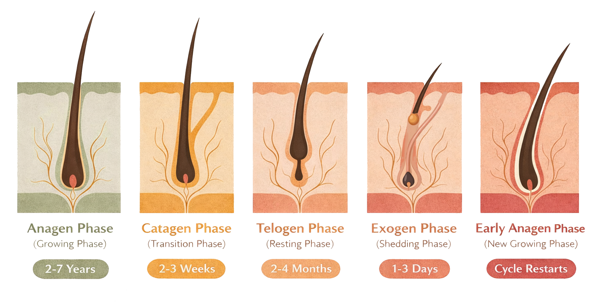
Anagen Phase – The Growth Stage
The anagen phase is the active growth stage of the hair cycle. During this phase, cells in the hair bulb divide rapidly, pushing the hair shaft upward from deep within the scalp.
Duration: Approximately 2 to 7 years, depending on genetics, age, and overall health.
Activity: Hair grows about 1 to 1.25 cm per month (around 12 to 15 cm per year).
Hair in this phase: Around 85 to 90% of scalp hairs
The length of the anagen phase largely determines how long your hair can grow. Those with longer anagen phases may grow very long hair, while others naturally reach a shorter maximum length. During this stage, the hair root remains firmly anchored to the dermal papilla, receiving oxygen and nutrients that support strong, healthy growth.
Catagen Phase – The Transition Stage
The catagen phase is a short but important transition period that signals the end of active growth.
Duration: Around 2 to 3 weeks
Activity: The follicle shrinks and detaches from its blood supply, stopping active growth while the hair strand remains in place.
Hair in this phase: About 1 to 2% of scalp hairs.
Though brief, catagen allows the follicle to reset and prepare for the resting stage. Think of it as a pause button in a healthy cycle.
Telogen Phase – The Resting Stage
The telogen phase is a period of rest during which the follicle is inactive but preparing for renewal.
Duration: Typically, 3 to 4 months
Activity: The follicle rests while a new hair begins forming beneath it
Hair in this phase: Around 10 to 15% of scalp hairs
Shedding is most noticeable during this phase. Losing between 50 and 100 hairs per day is generally considered normal as part of the natural renewal process.
Exogen Phase – The Shedding Stage
The Exogen phase is often considered an extension of the telogen phase and marks the shedding of the old hair strand.
Duration: Overlaps with early anagen
Activity: As new hair emerges, the old strand is gently released and shed
Shedding: Continues at a normal daily rate
This phase allows space for new growth, keeping the cycle moving smoothly.
When the Cycle Is Disrupted
Hair shedding and hair loss can occur when the natural growth cycle is disrupted. One common example is telogen effluvium, a condition in which stress, illness, hormonal shifts, or nutrient deficiencies cause a large number of follicles to enter the telogen phase prematurely. Because of the delay built into the hair cycle, increased shedding typically appears 2 to 3 months later. In most cases, this type of shedding is temporary and resolves once the underlying trigger is addressed.
Supporting recovery means focusing on fundamentals such as nutrition, sleep, stress management, and a comfortable scalp environment. Visible improvements take time, reflecting the hair cycle itself.
What Influences the Hair Cycle?
The hair growth cycle does not operate in isolation. It is shaped by several internal and external factors.
Age: Hair growth naturally slows over time, and growth phases may become shorter.
Hormones: Estrogen, testosterone, and thyroid hormones all play key roles in regulating hair growth and shedding patterns.
Nutrition: Deficiencies in essential nutrients can shorten the growth phase and trigger increased shedding.
Health and Stress: Illness, physical trauma, or emotional stress can push more follicles into the resting phase at once.
A clear example of hormonal influence can be seen during pregnancy. Higher estrogen levels often prolong the anagen phase, giving hair a fuller appearance. After childbirth, estrogen levels drop, and many follicles shift into the telogen phase, leading to postpartum shedding. This process is common, temporary, and part of the body’s natural rebalancing.
Patience Is Power
The cyclical nature of hair growth means that visible results take time to appear. Whether you are regrowing hair, addressing shedding, or simply aiming for longer lengths, consistency and patience are essential.
Hair grows millimetres at a time, yet your body is always working behind the scenes to maintain its natural rhythm.
Trust the Process
Just like your mood or skin, your hair responds to seasons, stress, and even what you eat. It is completely normal to notice periods of increased shedding, particularly in autumn or after a stressful event. This is often linked to a temporary rise in exogen shedding, when older strands are naturally released as part of renewal. While it can feel alarming, this process usually settles on its own.
Your hair constantly moves through a natural growth rhythm, maintaining a balance between renewal and rest. At any given time:
85–90% of hair is actively growing (anagen phase)
1–2% is transitioning (catagen phase)
10–15% is resting or shedding (telogen and exogen phases)
This built-in rhythm helps prevent both excessive shedding and overly rapid growth. When you align your care with this cycle, nourishing follicles during growth phases and treating hair gently during periods of rest, you support resilience, strength, and long-term balance.
Trusting this process allows your scalp and hair to work as they are designed to, steady, adaptive, and always moving toward renewal.
Scalp Microbiome the Invisible Shield
Your scalp is a living ecosystem, home to microscopic organisms, mainly beneficial bacteria and yeast, collectively known as the scalp microbiome. This community acts as an invisible shield, helping protect and balance the scalp. When healthy, it supports oil regulation, maintains appropriate pH, limits irritation, and creates a stable environment for healthy follicles.
A healthy microbiome strengthens the skin barrier, helps regulate sebum breakdown, retains moisture, and reduces inflammatory responses. When balance is disrupted, the scalp often signals distress through itching, flaking, excess oil or dryness, unusual odour, and increased shedding.
Harsh cleansing agents, frequent product buildup, pollution, ongoing stress, poor sleep, and hormonal shifts can all disturb this delicate ecosystem.
What is often overlooked is that the microbiome reflects more than just external care. The scalp responds to the body’s internal environment and overall state of balance. When supported through gentle care, adequate rest, and consistent habits, the scalp becomes calmer, more resilient, and better prepared to support healthy hair growth.
How to Restore and Maintain a Healthy Microbiome
Maintaining a healthy scalp microbiome is important for supporting hair growth and overall scalp comfort. It works quietly in the background, helping to protect balance and support the environment where hair grows. The microbiome thrives when the scalp is treated gently, kept balanced, and supported from within. Here’s how to care for it:
Cleanse Kindly: Avoid harsh sulfates and overly drying ingredients that can strip away beneficial microbes. Choose gentle, pH-balanced shampoos, ideally within the 4.5-5.5 pH range, to help protect the scalp’s natural ecosystem.
Nourish the Good Bacteria: Prebiotics help feed the beneficial bacteria that naturally live on your scalp and are often found in ingredients such as oat extract or xylitol. Probiotics support microbial balance and can come from fermented ingredients like kombucha or lactobacillus. Look for these in shampoos, serums, and scalp treatments designed to support a healthier, more resilient scalp.
Avoid Over-Sanitising: Antibacterial or medicated shampoos can be helpful when truly needed, but frequent or unnecessary use may disrupt both harmful and beneficial bacteria. Use them only when appropriate and return to gentler formulas once balance is restored.
Nourish from Within: A fibre-rich, gut-friendly diet that includes leafy greens, legumes, and fermented foods supports overall microbial health, including the scalp microbiome.
Support Calm: Ongoing stress can influence scalp comfort and shedding patterns. Gentle scalp massage, slow breathing, relaxation practices, or a few minutes of meditation can help. Simple activities such as walking in nature, listening to music, or enjoying a favourite hobby also support overall balance.
Scalp’s pH Balance Is Safeguarding Your Hair
Healthy hair starts with a balanced scalp. The scalp’s natural pH is slightly acidic, around 5.5, which helps maintain moisture, protect the skin barrier, and support healthy follicle function. When this balance is disturbed, it can lead to irritation, excess oil production, dandruff, or hair that feels weaker and less resilient.
Alkaline products, environmental pollutants, UV exposure, and harsh ingredients can all disrupt this delicate balance, increasing sensitivity or inflammation. Tight or repetitive hairstyles may also place strain on the scalp, contributing over time to discomfort and reduced hair quality.
Using gentle, pH-balanced products and adopting scalp-friendly habits helps preserve the scalp’s natural ecosystem and creates a strong foundation for healthy hair growth.
Your scalp is a living bridge between your body and your hair, a sensitive landscape that responds to how you wash and nourish it, and also to how you rest, recover, and carry stress. By honouring its biology, protecting its balance, and supporting it through mindful care, you nurture not only your hair’s health but your overall wellbeing.
pH Affects Your Scalp and Hair
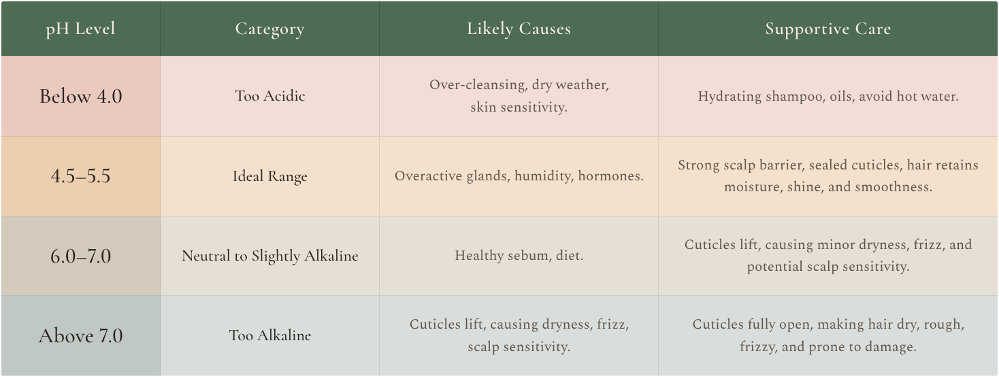
Why pH Matters
Protective Acid Mantle: The scalp’s slightly acidic pH forms a natural protective barrier that helps defend against harmful bacteria and fungi.
Cuticle Health: An acidic environment helps keep the hair cuticle sealed, resulting in smoother, shinier, and less frizzy hair.
Moisture Retention: Balanced pH supports the scalp’s ability to retain moisture, helping to prevent dryness, flakiness, and irritation.
Signs of pH Imbalance
Dry or Itchy Scalp: Often linked to a scalp that has become overly alkaline.
Excess Oiliness: Can occur when the scalp overcompensates for dryness by producing more sebum.
Dandruff or Flaking: Imbalance can disrupt the scalp’s natural ecosystem, leading to irritation and visible flakes.
Brittle or Damaged Hair: In an alkaline environment, the hair cuticle can lift, making strands more prone to breakage and damage.
By paying attention to your scalp’s pH, you take a proactive step toward healthier, stronger hair from root to tip. Understanding the pH scale and where your scalp naturally sits helps you avoid products or treatments that may disrupt this balance. Choosing gentle, pH-balanced formulas and limiting exposure to harsh chemicals supports the scalp’s protective barrier and creates the right environment for resilient, healthy hair growth.
pH Balance Scale 0-14
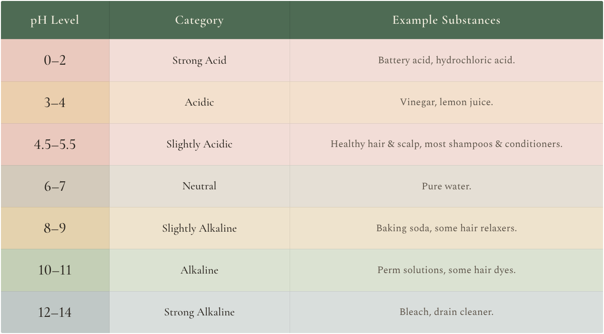
How to Maintain Scalp pH
Your scalp and hair are healthiest in a slightly acidic range, around pH 4.5-5.5. This balance helps lock in moisture, protect the scalp barrier, and reduce frizz, dryness, and breakage.
Use pH-Balanced Products: Choose shampoos and conditioners clearly labelled as pH-balanced, ideally within the 4.5-5.5 pH range, to support the scalp’s natural environment.
Rinse Thoroughly: Ensure all product residue is fully rinsed from both the scalp and the hair, as buildup can disrupt pH balance and irritate the skin.
Limit Harsh Chemicals: Minimise exposure to aggressive chemical treatments such as frequent colouring, bleaching, perms, or relaxers, as these can significantly disrupt scalp pH and weaken hair over time.
By maintaining this gentle balance, you help create the ideal conditions for a calm scalp and stronger, healthier hair from root to tip.
Blood Circulation the Lifeline of Your Scalp
Blood circulation is one of the most important, and often overlooked, foundations of scalp health. Each hair follicle depends on a steady supply of oxygen and nutrients delivered through tiny capillaries beneath the skin. When circulation is restricted, follicles receive less nourishment, which over time can contribute to weaker strands, dryness, and increased shedding.
Scalp circulation is influenced not only by overall health but also by physical patterns in the body. Prolonged screen use, poor posture, jaw clenching, shallow breathing, and neck and shoulder tension can subtly reduce blood flow to the scalp. These restrictions limit oxygen delivery and can slow the metabolic activity that supports healthy growth.
Gentle scalp massage, regular head and neck mobility, mindful posture, and daily movement help release tension and restore circulation, re-energising the follicles where hair growth begins.
Scalp Hair Terminal vs Vellus
The scalp primarily produces terminal hair, the thick, pigmented strands you see and style. These hairs grow from deep follicles and move through the full hair growth cycle: anagen (growth), catagen (transition), telogen (rest), and exogen (shedding). Hair length, density, and overall strength depend on how effectively this cycle functions and how well the follicles are supported.
In contrast, vellus hair consists of fine, soft, lightly pigmented or unpigmented strands often referred to as “peach fuzz.” These hairs are typically short and subtle. While they do not contribute significantly to volume, they play a role in temperature regulation and skin protection.
In pattern hair loss, known as androgenetic alopecia, terminal hairs can gradually miniaturise and transition into vellus-like hairs. As this occurs, strands become thinner, weaker, and less visible over time. Early intervention, whether through targeted treatments or a holistic approach that supports scalp health and circulation, may help slow this process and help maintain terminal hair density.
Sebum and Scalp Health Nature’s Built-in Conditioner
Now that we’ve explored how sebaceous glands function at the follicle level, let’s look at how sebum supports the scalp as a living ecosystem. Sebum naturally moisturises the scalp, reduces moisture loss, and coats each strand to maintain softness, flexibility, and shine. It also plays a protective role through its natural antimicrobial and antioxidant properties, helping support the scalp barrier and a balanced microbiome.
Balance is Key
Sebum works best in balance. Too much can clog follicles and contribute to irritation or buildup, while too little can leave the scalp dry, itchy, and hair prone to brittleness. Stress, hormonal fluctuations, and lifestyle factors often disrupt this balance, leading to oily roots, dry ends, or increased scalp sensitivity.
Supporting Healthy Production
- Gentle cleansing with sulfate-free shampoos.
- Adequate hydration and a nutrient-rich, balanced diet.
- Stress-reducing practices such as mindful scalp massage or slow breathing.
When sebum is balanced, the scalp remains comfortable and protected, and hair develops a natural sheen that no synthetic conditioner can truly replicate.
Scalp Inflammation the Hidden Saboteur
Scalp inflammation is one of the most common yet often overlooked contributors to hair concerns. It may present as itching, tenderness, redness, or flaking, but its effects can extend beneath the surface. Ongoing inflammation can disrupt blood flow, weaken the scalp’s protective barrier, and, over time, place stress on hair follicles, contributing to slower growth and weaker, more fragile strands.
Inflammation does not arise only from external irritants or product buildup. It can also reflect internal imbalances within the body. Factors such as dietary stress, emotional strain, and hormonal fluctuations may influence inflammatory pathways and increase scalp sensitivity.
When the scalp’s natural balance is disrupted, its defences weaken, making it more prone to irritation, excess oil production, and discomfort. Reducing inflammatory load, both internally and externally, helps restore equilibrium. Gentle care, supportive nutrition, and stress-reducing practices all help calm the scalp environment and create conditions that support healthier hair growth.
Know Your Scalp Type
Understanding your scalp type is essential for choosing the right care. Just as facial skin has unique needs, the scalp does too. Mismatched products or neglect often lead to imbalance. When you listen to your scalp and respond ear, many hair issues become easier to address.
Scalp Types and Care
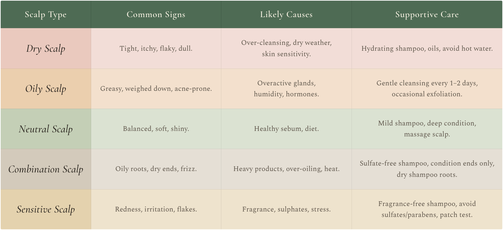
Scalp Is Hair’s Best Friend
Healthy hair begins with attention, not excess. When you care for your scalp consistently and intentionally, you create the conditions your hair needs to grow strong, resilient, and healthy over time.
The scalp is hair’s closest ally because it supplies every strand with oxygen, nutrients, hormonal signals, and the environment needed for growth to begin and continue.
Before focusing on the strands, turn your attention to the scalp. It often holds the answers to why hair struggles in the first place. When you understand its signals and respond thoughtfully, everything else begins to make more sense.
Scalp-care is not about perfection or complicated routines. It is about awareness, responding early to imbalance, and supporting the scalp with simple, consistent habits that work with your body rather than against it.
Small, regular actions often create the greatest long-term change. Many common hair concerns improve when the focus shifts from quick fixes to consistent foundational care. By tending to the scalp first, you create an environment that supports growth and makes results more reliable.
In the chapters ahead, you will move from understanding to action, exploring practical routines, supportive ingredients, and targeted strategies to protect, strengthen, and enhance the hair you already have.
Nourish Your Hair
from Within
What your Gut Says About your Hair
Your hair’s health is more than skin deep. It reflects the invisible world within your body. The gut, often called the “second brain” due to its wide-reaching influence on overall health, plays a central role in nutrient absorption, hormone balance, and immune regulation. Every internal process that supports strong, shiny, and resilient hair begins here, long before changes appear on the surface.
The gut and brain are constantly communicating through an intricate network of nerves, with the vagus nerve as the primary messenger. This signalling pathway influences hormones, stress responses, and even the activity of your hair follicles. When this system functions well, digestion flows smoothly, inflammation remains low, and nutrients are efficiently delivered to the scalp. But when stress, poor diet, or internal imbalance disrupt this harmony, the signals weaken. The result is slower growth, dull strands, and a scalp that mirrors internal distress.
Your gut is home to trillions of micro-organisms, including bacteria, fungi, and other microbes, collectively known as the gut microbiome. When this ecosystem is balanced, it helps break down food efficiently, supports nutrient absorption, regulates immune activity, and assists in the synthesis of essential vitamins such as biotin, vitamin B12, and folate, all of which are crucial for healthy hair growth and overall wellbeing.
In this chapter, you will discover why the condition of your gut lies at the heart of your hair’s story. By understanding the deep connection between digestion, stress, inflammation and cellular repair, you will learn how nurturing your inner ecosystem can lead to visible, lasting improvements in your hair, beginning at its true source.
Gut Instincts, Listen to Your Hair
Your gut is constantly communicating with you, often long before any visible changes emerge. Sensations such as irregular digestion, fatigue, or persistent cravings are not random inconveniences. They are early signals that offer insight into what is unfolding internally. When these messages are overlooked, the imbalance does not vanish; it simply seeks another way to express itself.
Beneficial gut bacteria play a quiet yet powerful role in regulating inflammation, supporting hormone balance, and maintaining internal stability. When this balance is disrupted, hair can begin to reflect that internal strain through subtle shifts in texture, resilience, or shedding patterns. These changes rarely happen suddenly. They are responses to signals that started much earlier beneath the surface.
Listening to your gut instinct allows you to respond with awareness rather than react in a rush. By noticing subtle digestive cues and recurring patterns, you give your body the opportunity to restore balance before internal stress becomes more visible. Your body communicates in stages. The gut speaks first.
Signs Your Gut May Be Affecting Hair
Digestive Discomfort
Bloating, irregular bowel movements, food sensitivities, or persistent discomfort after meals can indicate inefficient digestion. Even when a diet appears healthy, poor digestion may limit the nutrients available for hair growth.
Frequent Illness or Low Immunity
Because much of the immune system resides in the gut, recurring infections, allergies, or slow recovery can be a sign that gut balance is compromised. When immune demand is high, hair growth is often deprioritised.
Unexplained Hair Shedding or Thinning
Sudden increases in shedding, reduced density, or slower regrowth can occur when nutrient absorption or inflammatory balance is disturbed. Hair may feel finer, weaker, or less resilient.
Changes in Scalp Comfort
Itchiness, flaking, sensitivity, or recurring scalp conditions such as dandruff or eczema may reflect internal inflammation or microbial imbalance originating in the gut.
Low Energy or Poor Recovery
Ongoing fatigue, brain fog, or difficulty bouncing back after stress can point to digestive strain. When energy is limited, hair growth often slows.
These signs do not mean something is “wrong,” but they do offer valuable information. Hair, scalp, digestion, and immunity are deeply connected, and learning to notice these patterns allows you to respond early rather than react later.
Gut Disruptors Affecting Your Hair
The gut microbiome plays a crucial role in regulating inflammation, nutrient absorption, and the biological processes that support hair growth. When this internal ecosystem is disrupted, it can contribute to nutrient deficiencies, hormonal imbalance, scalp irritation, and increased hair shedding.
Modern lifestyle habits such as chronic stress, dietary patterns, and environmental exposure can quietly undermine gut health, even in those who otherwise lead balanced lives. In this section, we explore the most common gut disruptors and how addressing them can help restore a healthy scalp environment and support stronger, more resilient hair.
1. Poor Diet – Feeding the Wrong Bacteria
Your diet has a powerful influence on the gut microbiome. Diets high in processed foods, refined sugars, artificial sweeteners, and low in fibre reduce microbial diversity and encourage inflammatory bacteria to thrive. Over time, this imbalance can impair nutrient absorption and place stress on the gut lining, limiting the availability of iron, zinc, biotin, and other nutrients needed for strong hair.
Support balance: Focus on whole, fibre-rich foods such as vegetables, fruits, legumes, lean proteins, and healthy fats. Fermented foods like yogurt, kefir, sauerkraut, or kimchi help replenish beneficial bacteria and support digestion from within.
2. Antibiotics and Medications – Disrupting the Microbial Ecosystem
Antibiotics can be life-saving, but they do not distinguish between harmful and beneficial bacteria. Their use can temporarily reduce microbial diversity, while certain long-term medications, such as acid-reducing drugs and frequent non-steroidal anti-inflammatory drugs (NSAIDs), may irritate the gut lining or interfere with nutrient absorption.
Support balance: After antibiotic use or prolonged medication exposure, prioritise probiotic foods, prebiotic fibres, and gentle nutritional support to help restore microbial balance and digestive resilience.
3. Inflammation Control – Keeping the Body in Defence Mode
When the gut is inflamed, immune activity remains elevated. This ongoing inflammatory state diverts energy away from non-essential functions such as hair growth and can disrupt the hair growth cycle over time. Chronic inflammation may also increase oxidative stress, weakening follicles and reducing strand quality.
Support balance: An anti-inflammatory approach that includes omega-3 fatty acids, colourful vegetables, herbs, and adequate hydration supports both gut repair and hair vitality.
4. Chronic Stress – The Gut-Hair Feedback Loop
Stress and digestion are deeply intertwined. Elevated cortisol can reduce stomach acid production, slow digestion, and weaken the gut barrier. When this happens, nutrient absorption becomes less efficient and inflammatory signals increase. Over time, this internal stress can influence hair shedding, growth patterns, and even pigmentation.
Support balance: Regular stress-management practices such as breathing exercises, gentle movement, meditation, or time outdoors help calm the nervous system and support digestive function.
5. Hormonal Imbalance – When Regulation Slips
The gut plays an important role in hormone metabolism and clearance, particularly estrogen. When gut health is compromised, hormonal regulation may become less efficient. These shifts can affect hair density and growth patterns, especially in areas sensitive to hormonal signals such as the crown or temples.
Support balance: Adequate dietary fibre supports hormone clearance, while consistent meals, stress reduction, and balanced blood sugar help stabilise hormonal rhythms that influence hair health.
6. Lack of Sleep – Disrupting Repair Cycles
The gut microbiome follows a circadian rhythm. Inadequate or irregular sleep can disrupt microbial balance, slow tissue repair, and increase inflammatory signalling. These effects can reduce hair growth efficiency and contribute to dull or brittle strands over time.
Support balance: Aim for consistent sleep routines, reduced evening screen exposure, and adequate rest to allow the gut and hair follicles to repair overnight.
7. Sedentary Lifestyle – Slowing Digestion and Circulation
Movement supports digestion by stimulating gut motility and improving circulation. A sedentary lifestyle can slow digestion, reduce nutrient delivery, and impair blood flow to the scalp, potentially limiting the resources available for hair growth.
Support balance: Regular movement, such as walking, stretching, yoga, or light exercise, helps maintain digestive efficiency and supports circulation to both the gut and scalp.
Bringing the System Back into Balance
Gut disruptors rarely act alone. They often work together, gradually shifting digestion, immunity, and hormonal balance away from equilibrium. By gently and consistently addressing these factors, you create an internal environment where nutrients are absorbed efficiently, inflammation is reduced, and hair growth is better supported.
Nurturing Your Gut for Gorgeous Hair
If your focus has been solely on shampoos, serums, and supplements for hair growth, it may be time to look deeper into your gut. A healthy digestive system lays the foundation for strong, resilient hair by supporting nutrient absorption, hormone balance, and the control of inflammation.
Supporting gut health does not require drastic changes. Begin by incorporating more fibre-rich, colourful whole foods and including fermented options like yogurt, kefir, sauerkraut, or kimchi to nourish your microbiome. Stay well hydrated, manage stress in simple ways, and be mindful of overusing antibiotics or heavily processed foods that can disrupt the gut’s natural balance.
True gut healing begins with nervous system regulation. When the body feels calm and safe, digestion activates naturally, stomach acid production increases, enzymes are released, and nutrients are absorbed more efficiently.
Practices such as slow breathing, mindful eating, or even pausing for a moment of gratitude before meals help activate this “rest and digest” state. Through the vagus nerve, these calming signals travel throughout the body, improving digestion and enhancing nutrient delivery to the hair follicles.
The path to healthier hair truly begins within the digestive system. When the gut is nourished and supported, hair receives the essential nutrients it needs to grow stronger and more radiant. Your gut is always listening. Feed it well, keep it calm, and your hair will reflect that care in time.
The Hair Growth Nutrient Toolkit
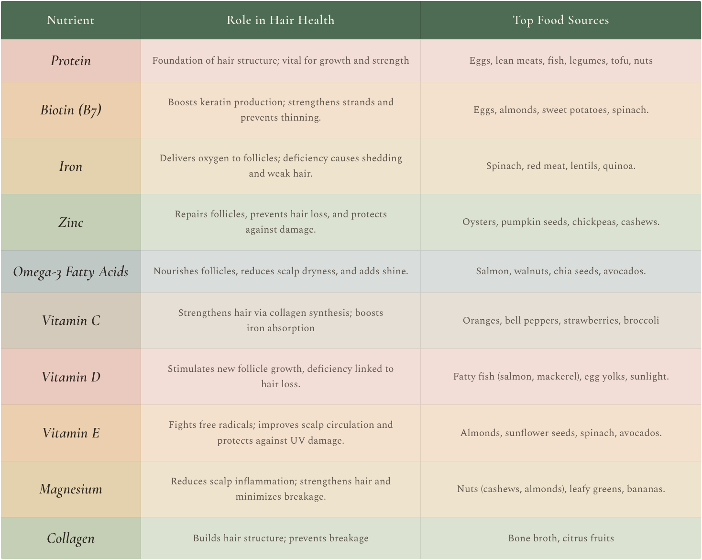
Tips for Maximising Nutrient Benefits
Supporting hair growth is not only about what you eat, but also about how well those nutrients are absorbed and utilised by the body. When the gut is nourished and supported, hair receives the essential building blocks it needs to grow stronger and more radiant. Your gut is always listening. Feed it well, keep it calm, and your hair will reflect that care in time.
- Pair Iron and Vitamin C: Combine iron-rich foods such as lentils or spinach with vitamin C sources like bell peppers or a squeeze of lemon juice. Vitamin C enhances iron absorption, helping deliver more oxygen and nutrients to hair follicles.
- Cook Smart: Lightly steam vegetables such as spinach rather than overcooking them to help preserve delicate nutrients, including biotin and magnesium, which support hair strength and growth.
- Fat and Fat-Soluble Vitamins: Fat-soluble vitamins require dietary fat for proper absorption. Pair vitamin E-rich foods such as almonds with a small amount of healthy fat, like a drizzle of olive oil, to improve nutrient uptake.
Adequate hydration is equally important. Drinking enough water supports nutrient transport, scalp hydration, and overall hair flexibility. Aim for 8 or more glasses per day (around 1 to 1.5 litres as a minimum), and boost hydration naturally with water-rich foods such as cucumber and watermelon.
Gut Foods for Hair Nourishment
Your hair reflects the nourishment you provide your body. Choosing the right nutrient-dense foods can significantly enhance hair strength, shine, and resilience. The following foods help nourish your hair from within while supporting overall gut health.
Eggs: A rich source of protein and biotin, both essential for strong, healthy hair growth.
Salmon: High in omega-3 fatty acids, protein, and vitamin D, helping nourish the scalp and promote natural shine.
Spinach: Packed with iron, vitamin A, and folate, nutrients that support follicle health and help reduce hair thinning.
Nuts & Seeds: Provide zinc, vitamin E, and healthy fats, all of which contribute to stronger hair follicles and improved scalp health.
Berries: Rich in antioxidants and vitamin C, supporting collagen production and protecting hair strands from oxidative stress.
Sweet Potatoes: An excellent source of beta-carotene, which the body converts to vitamin A, essential for scalp balance and healthy hair growth.
Greek Yogurt: High in protein and probiotics, directly supporting gut health and, in turn, hair strength and resilience.
By incorporating these foods into your regular meals, you help supply your hair follicles with the nutrients they need to remain strong, vibrant, and well supported over time.
Small Changes, Big Impact
Caring for your gut and hair is not about perfection, but about consistency and compassion. Daily lifestyle choices work together to shape the internal environment that supports digestion, hormone balance, and healthy hair growth. Gentle movement improves circulation and nutrient delivery, quality sleep allows repair and hormonal regulation, and mindful use of medications helps protect the delicate balance of gut bacteria.
When these foundations are supported, the gut functions more efficiently, inflammation settles, and hair follicles receive the nourishment they need to thrive. By tending to your body with simple, sustainable habits, you create the conditions for stronger, more resilient hair that reflects health from within.
Healthy hair begins where true nourishment starts, in the gut. When digestion functions well and nutrients are absorbed effectively, hair receives a steady supply of building blocks needed to grow strong, shiny, and resilient.
The message of this chapter is simple yet powerful: small, consistent actions create lasting transformation. There is no need to change everything at once. Begin with one mindful shift, such as adding probiotic foods, staying hydrated, chewing more thoroughly, or pausing to breathe deeply before a meal. Over time, these small acts of care become habits that nurture both your body and hair.
The gut is the gateway to your hair’s vitality. By nourishing it and honouring your body’s natural rhythm, you lay the foundation for healthier, shinier, more resilient hair. The journey to stronger, more vibrant hair begins with the choices you make today.
As we move forward, the focus will shift from gut health to understanding your internal landscape through blood work, revealing nutrient levels, identifying deficiencies, and uncovering what your body truly needs to support long-term hair strength and growth.
Decoding Lab to Locks and Hormonal Balance
For many people, the pursuit of healthy hair begins with products, treatments, and supplements. Yet real transformation begins with understanding your internal chemistry. Bloodwork reveals the unseen story behind your strands, showing how your body absorbs nutrients, balances hormones, and sustains healthy hair growth.
Each test offers valuable insight into the root causes of thinning, excessive shedding, or slow growth.
Blood tests bridge the gap between symptoms and solutions by identifying whether imbalances in vitamins, minerals, or hormones are affecting your hair’s texture, strength, or growth cycle. When you understand these internal signals, you are better equipped to make informed decisions that restore balance and support long-term vitality.
The body prioritises nutrients for vital organs such as the heart, brain, and liver. As a result, hair, skin, and nails are often among the first tissues to show signs of deficiency.
Low levels of iron, biotin, zinc, vitamin D, or omega-3s may appear as brittle strands, increased shedding, dry scalp, or slower hair growth long before other symptoms develop.
Hormones also play a central role in hair health. Imbalances involving the thyroid, reproductive hormones, or adrenal system can directly affect hair follicles and disrupt the growth cycle. Understanding how nutrients and hormones interact helps ensure your hair receives the signals it needs to grow, repair, and remain resilient.
In this chapter, you will learn how to interpret lab results through a holistic lens focused on hair health. You will discover which tests to request, how to read them, and how these systems interact within the body. This knowledge empowers you to create a personalised plan that supports not only your hair but also overall energy, resilience, and wellbeing.
Blood Tests Matter for Hair Health
Many people turn to supplements and treatments before understanding what their body actually needs. Without this clarity, it’s easy to overload certain nutrients while overlooking others that are essential for healthy growth. Blood tests remove this guesswork by translating your internal state into clear data, offering a reliable starting point for meaningful change.
Blood tests can help to identify
- Nutrient deficiencies that affect hair structure, strength, and growth.
- Hormonal imbalances that contribute to thinning or excessive shedding.
- Inflammation or circulatory issues that may limit oxygen and nutrient delivery to hair follicles.
- Stress-related physiological changes that interfere with regeneration and repair.
By viewing your results through a holistic lens, you can support your hair in harmony with your entire system rather than addressing symptoms in isolation.
Key Blood Tests for Hair Health
When hair concerns arise, blood tests can provide much-needed clarity. The right markers help reveal whether hormonal imbalances, nutrient deficiencies, or underlying health issues may be interfering with healthy hair growth.
Think of this section as your guide to the most relevant tests. Understanding what to request and how to read the results gives you insight into how your body is functioning beneath the surface. That awareness allows you to take informed action, whether through dietary adjustments, targeted supplementation, or working with a healthcare professional to explore further support. With this knowledge, you can confidently guide your hair back toward balance and vitality.
1. Complete Blood Count (CBC)
A Complete Blood Count (CBC) provides a broad overview of blood cell health. It measures red blood cells (RBCs), white blood cells (WBCs), and platelets, and is often one of the first tests ordered to identify general imbalances or signs of underlying health issues.
From a hair health perspective, low red blood cell counts or low haemoglobin levels may indicate anaemia, a common condition often linked to iron deficiency. Anaemia reduces oxygen delivery throughout the body, including the scalp and hair follicles, which may contribute to thinning, increased shedding, or slower hair growth. White blood cell levels also offer important insight. Levels that are too high or too low may signal inflammation, infection, or immune imbalance, all of which can negatively affect scalp health and disrupt the hair growth cycle.
Why It’s Important
The CBC helps identify anaemia, one of the most common hidden contributors to hair thinning, fatigue, and reduced vitality. It also provides clues about inflammation or immune stress that may indirectly affect hair health.
Key Indicators
Haemoglobin: Low levels suggest reduced oxygen delivery to the hair follicles.
Red Blood Cell Count (RBC): Low levels may indicate anaemia or underlying nutrient deficiencies.
Optimal Reference Ranges
Haemoglobin
Women: 12 to 15.5 g/dL
Men: 13.5 to 17.5 g/dL
Red Blood Cell Count
Women: 4.1 to 5.1 million per microlitre
Men: 4.5 to 5.9 million per microlitre
2. Ferritin Iron Storage Levels
Ferritin is a protein that stores iron in the body and plays a crucial role in supporting healthy hair follicle function. Adequate iron stores are essential for oxygen transport and cell growth, both of which are vital for maintaining strong, actively growing hair.
Why It’s Important
Ferritin levels reflect the body’s iron reserves. Even when standard iron levels fall within the laboratory reference range, low ferritin levels can still impair hair growth. Suboptimal ferritin is a common and often overlooked cause of increased shedding and slow regrowth, particularly following stress, illness, or nutritional depletion.
Low ferritin levels are frequently associated with excessive shedding, thinning, and poor hair recovery after periods of physical or emotional strain.
Optimal Reference Range
For hair health, many practitioners consider ferritin levels of 60 to 80 ng/mL to be supportive of growth. Some experts recommend aiming for around 70 ng/mL or higher to promote optimal hair recovery and resilience.
Additional Iron Markers to Consider
To gain a complete picture of iron status, healthcare providers may assess additional markers alongside ferritin, including:
- Serum Iron: Measures the amount of circulating iron in the blood.
- Total Iron-Binding Capacity (TIBC): Assesses how effectively proteins in the blood are able to transport iron.
- Transferrin Saturation: Evaluates how much iron is bound and readily available for use by the body.
When assessed together, these markers help identify true iron deficiency, functional iron imbalance, or early depletion that may contribute to hair loss.
3. Thyroid Panel
Thyroid function plays a critical role in regulating metabolism, energy levels, and the hair growth cycle. Imbalances in thyroid hormones, whether the thyroid is hypothyroidism (underactive) or hyperthyroidism (overactive), are common contributors to hair thinning, dryness, or changes in texture.
Why It’s Important
Thyroid hormones directly regulate hair follicle activity. When hormone levels fall outside optimal ranges, hair growth may slow or prematurely enter the shedding phase. A comprehensive thyroid panel helps uncover imbalances that may not be apparent on basic screening but can significantly affect hair health.
Key Indicators to Test
TSH (Thyroid-Stimulating Hormone): Elevated TSH levels may indicate hypothyroidism, a state in which the thyroid is underactive and often associated with hair thinning, fatigue, weight gain, and cold sensitivity.
Free T3 and Free T4: These are the active thyroid hormones. Low levels may suggest reduced thyroid function, which can disrupt the hair growth cycle and slow cellular regeneration.
Optimal Reference Ranges
TSH: 0.4 to 4.0 mIU/L
Free T3: 80 to 200 ng/dL
Free T4: 4.5 to 11.2 mcg/dL
If you are experiencing unexplained hair loss, particularly alongside symptoms such as fatigue, sensitivity to cold, changes in mood, or difficulty managing weight, a full thyroid panel is an essential step in identifying a potential hormonal root cause.
4. Vitamin D
Vitamin D plays a vital role in maintaining healthy hair follicles. Vitamin D receptors are present in the skin and scalp, particularly within hair follicle cells, where they help regulate the hair growth cycle. Deficiency has been associated with several forms of hair loss, including telogen effluvium and alopecia areata.
Why It’s Important
Vitamin D supports the formation of new hair follicles and helps maintain the proper function of existing ones. When levels are insufficient, the hair growth cycle may be disrupted, contributing to increased shedding, thinning, or patchy hair loss.
Low Levels May Cause
Increased hair shedding, reduced hair density, slower regrowth, and patchy areas of hair loss.
Optimal Reference Ranges
Many practitioners recommend aiming for 50 ng/mL or higher for hair health. While reference ranges may vary between laboratories, levels between 40 to 60 ng/mL are commonly considered supportive of optimal follicle function.
If you are experiencing persistent thinning or sudden hair shedding, testing vitamin D levels is a valuable step in identifying a potential underlying contributor. When deficiency is present, supplementation and lifestyle adjustments may significantly improve hair recovery over time.
5. Vitamin B12
Vitamin B12 is essential for healthy hair, as it enables red blood cell production and supports the delivery of oxygen and nutrients to the scalp and hair follicles.
Without sufficient oxygen delivery, hair follicles can weaken, leading to increased shedding and slower hair growth.
Why It’s Important
Vitamin B12 plays a key role in cell division and regeneration, both of which are vital for the rapidly growing cells within hair follicles. Adequate levels help support hair density, encourage regrowth, and may reduce the risk of premature greying.
Low Levels May Cause
Excessive hair shedding, brittle or thinning strands, slower regrowth, and premature greying.
Who’s Most at Risk
Vitamin B12 deficiency is more common among individuals following plant-based diets, those with digestive issues such as low stomach acid or irritable bowel conditions, and older adults, as absorption efficiency tends to decline with age.
Optimal Reference Range
Laboratory reference ranges typically fall between 200 to 900 pg/mL.
However, many practitioners suggest maintaining levels closer to the upper end of this range, often 500 pg/mL or higher, to support optimal hair health and nervous system function.
If you experience fatigue, brain fog, or noticeable changes in your hair, testing your vitamin B12 levels may offer valuable insight into both hair resilience and overall health.
6. Zinc Levels
Zinc is an essential trace mineral involved in protein synthesis, cell division, wound healing, and hormone balance, all of which are fundamental to healthy hair growth. It supports the structural integrity of hair follicles and contributes to the production of keratin, the primary protein that forms each hair strand.
Why It’s Important
Zinc helps regulate the hair growth cycle, supports scalp health, and reduces inflammation around the follicles. Adequate levels are essential for maintaining hair's structural integrity. When zinc is deficient, follicle function may become impaired, increasing the risk of thinning, breakage, and scalp irritation.
Low Levels May Cause
Hair shedding or thinning, including telogen effluvium.
Brittle or weakened hair, delayed scalp healing, and inflammatory scalp conditions such as dandruff or seborrheic dermatitis.
Optimal Reference Range
Typical laboratory reference ranges are 70 to 120 mcg/dL. For hair restoration and scalp health, some practitioners suggest aiming for levels above 90 mcg/dL, while remaining within the normal range.
7. Hormone Panel
Hormones play a central role in regulating the hair growth cycle, follicle size, and scalp condition. When hormonal balance is disrupted, this cycle can be altered, leading to hair thinning, excessive shedding, or patterned hair loss.
Why It’s Important
Hormonal shifts related to stress, ageing, medical conditions, or lifestyle factors can directly influence hair density, growth rate, and texture. Identifying imbalances allows for more precise, targeted support rather than relying on guesswork or generalised treatments.
Key Indicators
- Estrogen: Supports hair growth, thickness, and the length of the growth phase. Lower Estrogen levels, particularly during perimenopause and after menopause, are commonly associated with diffuse thinning in women.
- Testosterone and DHT: High dihydrotestosterone (DHT), a by-product of testosterone, can shrink hair follicles over time and shorten the growth cycle. Elevated DHT levels may contribute to pattern hair loss, especially in individuals with a genetic sensitivity.
- Cortisol: Chronically elevated levels can push hair prematurely into the shedding phase, known as telogen effluvium, particularly during prolonged stress or inadequate sleep.
Optimal Reference Ranges
Reference ranges may vary between laboratories and depend on age, sex, and hormonal status.
Estrogen: 15 to 350 pg/mL, depending on menstrual cycle phase or menopausal status
Testosterone: Women: 15 to 70 ng/dL / Men: 300 to 1,000 ng/dL
Cortisol: Morning: 10 to 20 mcg/dL / Evening: 3 to 10 mcg/dL
8. Nervous System and Hormone Regulation
Hormones are regulated by signals from the brain and are deeply influenced by the nervous system. When the body is under chronic stress, the nervous system prioritises survival over growth and repair. This can disrupt thyroid function, reproductive hormones, and adrenal signalling, all of which play a role in hair growth, oil production, and follicle activity.
When the nervous system remains in a heightened state of stress, cortisol levels may remain elevated, while other hormones may fall out of balance. Over time, this internal environment can shorten the hair growth phase, increase shedding, and impair follicle resilience. Supporting nervous system health is therefore essential for restoring hormonal balance and creating the conditions required for healthy hair growth.
Why It’s Important
A regulated nervous system allows hormones to communicate effectively and remain within healthy ranges. When stress signals are reduced, digestion improves, inflammation settles, and the body can redirect resources toward regeneration, including hair growth.
Supportive Strategies
Simple lifestyle practices such as prioritising restorative sleep, engaging in gentle movement, and incorporating breathwork or relaxation techniques help calm the nervous system. These practices support hormonal balance and allow hair follicles to function more optimally over time.
9. Sex Hormone-Binding Globulin (SHBG)
Sex hormone-binding globulin, commonly referred to as SHBG, is a protein that binds to sex hormones, primarily testosterone and estrogen. Its role is to regulate how much of these hormones remain free and biologically active in the body, including at the hair follicle level.
Why It’s Important
SHBG plays a crucial role in maintaining hormonal balance. Hair follicles are particularly sensitive to androgens such as testosterone and dihydrotestosterone (DHT).
For this reason, the amount of free, unbound hormone available to interact with follicles is often more relevant to hair health than total hormone levels alone.
When SHBG levels are elevated, less testosterone remains available in its free form. In some individuals, particularly women, this may contribute to hair thinning or reduced hair density. Conversely, low SHBG levels allow higher levels of free testosterone and DHT to circulate, which may exacerbate androgenetic alopecia, especially in those with a genetic susceptibility.
Optimal Reference Ranges
Reference ranges vary depending on age, sex, and laboratory standards.
Women: 18 to 144 nmol/L
Men: 0 to 57 nmol/L
Additional Context
A comprehensive hormonal assessment may include several related markers, such as:
- Total and free testosterone
- Dihydrotestosterone (DHT)
- Dehydroepiandrosterone sulfate (DHEA-S)
- Estrogen and progesterone, particularly in women
- Prolactin
- SHBG
Assessing these markers together is especially helpful when investigating conditions such as androgenetic alopecia and polycystic ovary syndrome (PCOS), both of which are common underlying causes of hair loss in women.
10. Biotin and B Vitamins
Biotin, also known as vitamin B7, along with other B vitamins such as vitamin B6 and folate, plays an important role in supporting healthy hair growth. These nutrients contribute to keratin production, support cellular energy processes, and help maintain a healthy scalp environment where new hair cells can form.
Why It’s Important
B vitamins are essential for cell metabolism, protein synthesis, and the rapid cell division required for hair growth. When levels are insufficient, the hair growth cycle may slow, and hair quality can gradually decline.
Low Levels May Cause
Thinning or brittle hair, increased breakage, dullness, slower growth, and weakened strands.
Optimal Reference Information
- Biotin (Vitamin B7): An intake of approximately 30 mcg per day is considered adequate for most adults. Direct serum testing is rarely performed unless a deficiency is suspected.
- Vitamin B6 (Pyridoxine): Typical reference ranges are 5 to 50 mcg/L.
- Folate (Vitamin B9): Reference ranges commonly fall between 2.0 to 20.0 ng/mL.
Together, these B vitamins support the metabolic foundation required for strong, resilient hair and play an important role in maintaining long-term hair vitality.
11. Inflammatory Markers
Inflammation plays a subtle yet significant role in hair health. Elevated inflammatory markers such as C-reactive protein (CRP) and erythrocyte sedimentation rate (ESR) may indicate systemic inflammation that can affect the scalp, disrupt the hair growth cycle, or point to underlying autoimmune activity involving the hair follicles.
Why It’s Important
Chronic inflammation can weaken hair follicles, impair nutrient and oxygen delivery, and push hair follicles into the shedding phase prematurely. While inflammatory markers are not specific to hair conditions, persistently elevated levels may signal an internal imbalance that contributes to hair loss, scalp sensitivity, or poor regrowth.
Key Indicator
C-reactive Protein (CRP): A general marker used to assess inflammation within the body.
CRP Reference Ranges
Low inflammation, optimal: below 1.0 mg/L
Moderate risk: 1.0 to 3.0 mg/L
High risk: above 3.0 mg/L, which may indicate significant or ongoing inflammation
12. Magnesium Levels
Magnesium is an essential mineral involved in over 300 enzymatic reactions within the body, including those that support protein synthesis, cellular repair, and nutrient metabolism. All of these processes are critical for maintaining healthy hair growth and follicle resilience.
Why It’s Important
Magnesium helps regulate calcium balance, supports cellular energy production, and contributes to the structural integrity of hair strands. Adequate levels support stronger, healthier hair, while deficiency may interfere with nutrient absorption, increase stress sensitivity, and weaken hair follicles over time.
Low Levels May Cause
Weak or brittle hair, increased shedding, reduced scalp circulation, and stress related hair loss.
Optimal Reference Range
Typical serum magnesium reference ranges fall between 1.7 to 2.2 mg/dL, although optimal levels may vary slightly depending on the laboratory.
13. Omega-3 Fatty Acids
Omega-3 fatty acids are essential fats that play an important role in maintaining scalp health, reducing inflammation, and supporting the hair growth cycle. They help nourish hair follicles and may contribute to improved hair density, strength, and natural shine.
Why It’s Important
Omega-3 fatty acids support scalp hydration, enhance blood circulation, and modulate inflammatory responses
that can interfere with healthy hair growth. When levels are insufficient, the scalp environment may become less supportive, increasing the risk of dryness, irritation, and shedding.
Low Levels May Cause
A dry or flaky scalp, dull and brittle hair, inflammation related thinning, and increased hair shedding.
Optimal Reference Ranges
Omega-3 Index: Levels between 8 and 12% are generally considered supportive of overall health and optimal for hair and scalp function.
Low Range
Below 4% are commonly associated with increased systemic inflammation and may contribute to hair and scalp concerns.
14. Insulin and Blood Sugar Levels
Blood glucose and HbA1c tests are key tools for assessing how well the body regulates blood sugar. Poor blood sugar control, whether due to insulin resistance, prediabetes, or diabetes, can significantly affect hair health. Elevated blood sugar levels may damage blood vessels, reduce oxygen and nutrient delivery to hair follicles, and increase inflammation and hormonal imbalance, all of which can interfere with healthy hair growth.
Why It’s Important
Stable blood sugar levels are essential for overall cellular health, including the rapidly dividing cells within hair follicles. Frequent spikes or drops in blood sugar can promote systemic inflammation and impair nutrient delivery, creating an unfavourable environment for sustained hair growth.
Impact of Imbalance
- Blood sugar dysregulation may contribute to:
- Reduced blood flow to hair follicles
- Increased inflammation
- Hormonal disruptions including elevated androgen levels
- Potential for hair thinning, weakened strands, and increased shedding
Key Indicators
HbA1c (Glycated Haemoglobin): Reflects average blood glucose levels over the previous two to three months.
- Below 5.7% is considered normal
- 5.7 to 6.4% indicates prediabetes
- 6.5% or higher is consistent with diabetes
Fasting Glucose
Measures blood sugar after an overnight fast.
- 70 to 99 mg/dL is considered normal
- 100 to 125 mg/dL indicates prediabetes
- 126 mg/dL or higher is consistent with diabetes
Maintaining balanced blood sugar levels through a nutrient-rich, balanced diet such as a Mediterranean-style approach, regular physical activity, and effective stress management supports overall health and helps protect hair vitality and resilience.
Top Six Hair Related Blood Tests
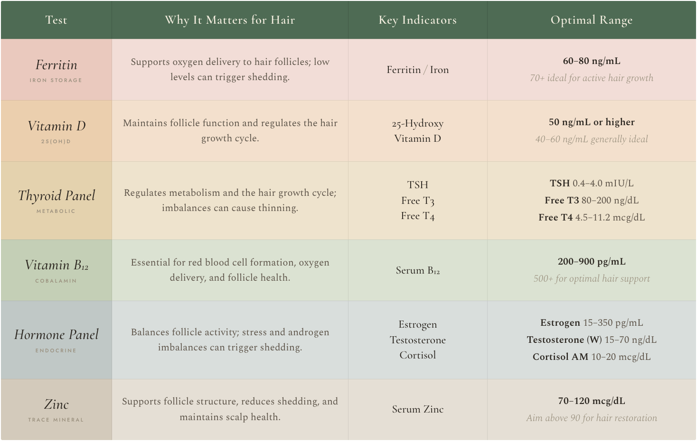
These six tests provide a clear starting point for investigating hair concerns. Additional markers may be helpful depending on symptoms, history, and individual needs.
Interpreting Results, What to Know
Understanding blood work is not simply about checking whether your results fall within a reference range. Most laboratory ranges are based on averages across the general population. They indicate what is considered statistically normal, rather than what is necessarily optimal for hair growth or long-term health.
For example, a ferritin level of 25 ng/mL may fall within a standard laboratory range, yet research and clinical practice suggest that levels above 60 to 80 ng/mL are often more supportive of healthy hair growth. Similarly, vitamin D may be reported as normal at 30 ng/mL, but levels above 50 ng/mL are generally more beneficial for both hair health and immune support.
Low Levels: May indicate a nutrient deficiency or an underlying condition that requires medical assessment, targeted supplementation, or treatment.
Within the Normal Range: Results at the lower end of the reference range may still affect hair health, particularly when combined with other imbalances.
Optimal Range: Levels that are tailored to support hair growth, resilience, and overall wellbeing. These ranges are often higher than standard laboratory norms and should always be interpreted alongside symptoms and clinical guidance.
Nutritional Deficiencies and Impact on Hair
Blood tests are particularly valuable for identifying nutritional deficiencies that affect hair health. Recognising these imbalances allows for targeted support, whether through dietary adjustments or appropriate supplementation, helping restore nutrient levels that support healthy hair growth.
Protein
Hair is primarily composed of keratin, a protein. While standard blood tests rarely detect early protein deficiency, inadequate dietary intake can impair hair growth and strength. Reviewing overall protein intake is often the most effective assessment. Increasing high-quality protein sources supports stronger, healthier hair.
Iron (Ferritin)
Iron deficiency, particularly low ferritin, is one of the most common nutritional causes of hair shedding, especially in women. Ferritin levels below 40 to 50 ng/mL are frequently associated with increased hair loss, even when haemoglobin levels remain normal. Under medical guidance, restoring ferritin levels often leads to noticeable improvements in shedding and regrowth over several months.
Vitamin D
Vitamin D deficiency, often identified at levels below 20 to 30 ng/mL, has been linked to several forms of hair loss. Levels above 40 to 50 ng/mL are commonly considered more supportive of hair health. Supplementation may help regulate the hair growth cycle and reduce shedding, although levels should be monitored to prevent excess.
Zinc
Zinc deficiency may contribute to diffuse thinning, brittle hair, and scalp dryness. Blood testing can help identify deficiency, although levels may fluctuate with recent dietary intake. Supplementation should be supervised, as excessive zinc can interfere with copper absorption and potentially worsen hair and scalp concerns.
Vitamin B12
Vitamin B12 deficiency is more common in older adults and those following plant-based diets. Insufficient levels may contribute to hair loss and premature greying. Serum testing helps identify deficiency, which can be corrected through oral supplementation, injections, or increased intake of animal-based foods, depending on individual needs.
Folate (Vitamin B9)
Folate supports cell division in rapidly growing tissues, including hair follicles. Low levels may impair hair growth and regeneration. Deficiency is commonly addressed through supplementation or increased consumption of folate-rich foods such as leafy greens, legumes, and fortified grains.
Biotin (Vitamin B7)
Biotin deficiency is uncommon but may result in hair thinning and skin changes when present. Supplementation is most effective when correcting a confirmed deficiency and is more supportive of hair strength and maintenance than a standalone solution for hair loss. High doses of biotin can interfere with laboratory testing, particularly thyroid panels, and should be used thoughtfully.
Omega-3 Fatty Acids
Low intake of omega-3 fatty acids may contribute to a dry scalp and brittle hair. Although direct testing is less common, dietary assessment often provides useful insight. Increasing omega-3 intake through fatty fish, flaxseeds, walnuts, or supplements may improve scalp condition and hair quality over time.
While nutritional deficiencies can weaken hair from the inside out, hormonal imbalances often disrupt the hair growth cycle itself. Together, these factors make blood testing an essential tool for uncovering the underlying causes of persistent or unexplained hair loss.
Hormonal Imbalances Revealed Through Bloodwork
Blood tests can uncover hormonal imbalances that disrupt the hair growth cycle and contribute to chronic shedding or pattern hair loss, particularly in women. Conditions such as PCOS, thyroid dysfunction, perimenopause, menopause, and chronic stress are common examples where hormone shifts directly affect hair density and regrowth.
Androgens (Testosterone, DHT, DHEA-S)
Elevated androgens can cause follicle miniaturisation and thinning, especially in genetically sensitive individuals. Blood testing helps guide appropriate hormone balancing strategies under medical supervision.
Estrogen
Low estrogen levels, particularly during perimenopause and menopause, can shorten the growth phase and lead to finer, more fragile hair. Estrogen plays a key role in maintaining hair density and cycle length.
Thyroid Hormones (TSH, Free T3, Free T4)
Both underactive and overactive thyroid function can disrupt hair growth. Identifying and correcting thyroid imbalance often supports gradual hair recovery, although visible changes may take time.
Prolactin
Raised prolactin levels may be linked to hair loss when associated with pituitary or hormonal disruption. Testing is most relevant when hair loss occurs alongside menstrual irregularities or fertility concerns.
LH/FSH Ratio
An elevated LH to FSH ratio is commonly associated with PCOS and may contribute to androgen driven thinning. Testing during appropriate phases of the menstrual cycle improves accuracy.
Cortisol
Chronically elevated cortisol from prolonged stress can push hair prematurely into the shedding phase. Testing may involve blood, saliva, or urine to assess daily patterns rather than a single reading.
Inflammatory Markers and Hair Health
Systemic inflammation can quietly influence scalp health and hair growth. While inflammatory markers are not specific to hair loss, they can help identify hidden contributors when hair changes occur alongside fatigue, scalp conditions, or broader health concerns.
C-Reactive Protein (CRP)
CRP is a general marker of inflammation in the body. Persistently elevated levels may indicate underlying inflammatory processes that contribute to increased hair shedding or scalp conditions such as psoriasis.
Erythrocyte Sedimentation Rate (ESR)
ESR is another non-specific marker of inflammation. Elevated values may be associated with autoimmune or chronic inflammatory conditions, including lupus or rheumatoid arthritis, both of which can interfere with healthy hair growth.
Autoimmune Markers (ANA)
Antinuclear antibody testing may be recommended when autoimmune disease is suspected. A positive result does not confirm a diagnosis on its own, but it can guide further investigation into conditions that affect the scalp and hair follicles.
Liver and Kidney Function
The liver and kidneys play a vital role in processing hormones, nutrients, and waste products. When these organs are under strain, the body’s ability to support repair and regeneration can be affected, including hair growth. Routine liver and kidney panels help ensure these systems are functioning efficiently.
Blood tests are not simply numbers on a report. They offer insight into how well the body is coping, adapting, and healing. When results are viewed with context and patience, they become a practical guide for next steps. With awareness, consistency, and proper support, the body can rebalance, allowing hair to gradually regain strength, vitality, and resilience.
Hair Tissue Mineral Analysis (HTMA)
Unlike blood tests, which reflect your current status, hair grows slowly and records mineral and toxin exposure over time. By analysing a small hair sample taken close to the scalp, laboratories can assess essential minerals such as zinc, magnesium, and selenium, as well as toxic heavy metals including mercury, arsenic, and lead. Because hair reflects several months of metabolic activity, HTMA can highlight longer-term patterns that may not always be visible through standard blood testing.
For hair health, this information can be particularly valuable. Minerals are essential to keratin production and follicle function, while heavy metals may disrupt hormones and interfere with nutrient absorption. HTMA can also reveal imbalances in minerals such as calcium, sodium, and potassium, which may point to deeper patterns involving adrenal or thyroid function that indirectly influence hair growth.
HTMA is not a diagnostic test and should not replace blood work. Results can be affected by external factors such as hair dyes or chemical treatments, so findings are best interpreted alongside symptoms and laboratory markers. Used this way, HTMA serves as a complementary tool that offers a broader perspective rather than a definitive answer.
Other Testing Methods Used in Holistic Health
In some cases, additional testing methods may be used alongside blood work to provide a broader view of internal health.
- Urine Organic Acid Testing (OAT): Assesses metabolic byproducts to help identify nutrient deficiencies, oxidative stress, and potential gut imbalances.
- Stool Analysis: Evaluates digestive function and the health of the gut microbiome, offering insight into absorption and inflammation that may affect hair growth.
- Saliva Hormone Testing or DUTCH Testing: Provides a more detailed picture of daily hormone fluctuations and hormone metabolism, particularly useful when symptoms suggest adrenal or hormonal rhythm imbalance.
When interpreted alongside blood work and clinical symptoms, these tools can offer a more complete understanding of what is happening within the body. Together, they help you and your practitioner identify the internal factors most directly influencing hair vitality and long-term resilience.
Addressing Deficiencies for Healthier Hair
Once imbalances are identified through blood work, the next step is thoughtful, targeted support. The goal is not to fix everything at once, but to restore balance in a way the body can sustain.
1. Nutritional Adjustments
Food forms the foundation of hair health. Prioritise nutrient dense meals that provide iron, zinc, protein, and essential fats. Pairing iron rich foods with vitamin C supports absorption, while regular exposure to sunlight and whole food sources helps maintain adequate vitamin D levels.
2. Supplements
When dietary intake alone is not sufficient, supplementation may be helpful. Supplements should be chosen based on individual needs and blood test results, rather than taken broadly. Working with a qualified professional ensures appropriate selection, dosing, and monitoring.
3. Stress Regulation
Chronic stress can disrupt digestion, hormones, and the hair growth cycle. Simple daily practices such as mindful breathing, gentle movement, stretching, or regular walks help calm the nervous system and support internal balance.
4. Hormonal Support
If blood work reveals hormonal imbalances, addressing the underlying cause is key. This may involve lifestyle adjustments, nutritional support, or medical guidance where appropriate. Restoring hormonal balance often leads to gradual improvements in hair growth and quality over time.
How to Get Blood Work Done
If you are experiencing persistent or unexplained changes in your hair, blood testing can help uncover underlying causes. The process does not need to be complicated. Here are a few practical ways to get started.
1. Consult a Healthcare Provider
Begin by speaking with your GP, doctor, dermatologist, or pharmacist. You can request blood tests that assess hair related markers such as ferritin, vitamin D, thyroid hormones, and vitamin B12. Sharing details about your hair concerns, health history, medications, and lifestyle helps ensure testing is appropriate and well targeted.
2. Visit a Specialised Clinic
Some dermatology or hair loss clinics offer more focused testing for hair concerns. These may include assessments for hormonal imbalance, nutrient deficiencies, or autoimmune activity. Trichologists and integrative health practitioners may also provide tailored evaluations based on symptoms and history.
3. Use At Home Testing Kits
At home blood testing kits are increasingly accessible and are available online and through some pharmacies. These tests typically involve a finger prick sample that is sent to a certified laboratory for analysis. Results are usually delivered digitally, often with basic interpretation.
Blood testing offers a powerful window into the internal factors that influence hair health. By identifying nutrient deficiencies, hormonal imbalances, or inflammation, it helps guide targeted support that addresses root causes rather than surface symptoms. Not every hair concern requires extensive testing but choosing the right markers can provide clarity and direction on the path to healthier hair.
From Lab Results to Healthy Hair
Bloodwork gives you the unseen story behind your hair. Nutrient levels and hormone patterns reveal what your body truly needs to support growth, strength, and shine.
Understanding these results allows you to move beyond quick fixes and address the root causes of thinning, excessive shedding, or slow growth. By correcting deficiencies, restoring balance, and supporting overall health, you create the conditions for lasting improvement.
Begin by asking the right questions and working with a qualified healthcare professional to interpret your results. Use this information to guide your nutrition, lifestyle, and self-care choices. Consistent, informed action and patience are often far more powerful than any single product or treatment. Your healthiest, strongest hair develops when you understand and support your body from within. This chapter equips you with the knowledge to take ownership of your hair health and continue your journey with clarity and confidence.
Your Blood Test Checklist
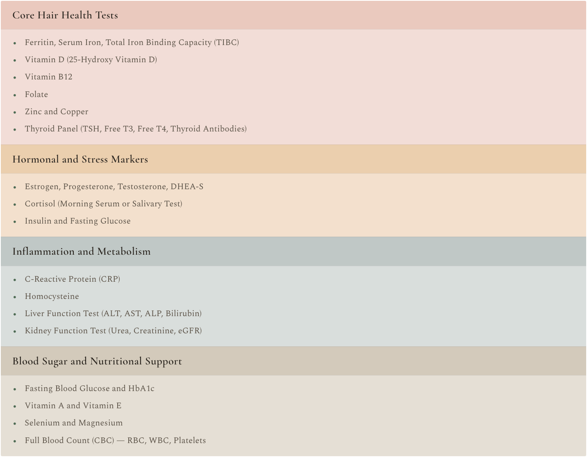
Fuelling your Hair with Nutrition
The connection between nutrition and hair health runs deep, yet it is often underestimated. While external products can temporarily enhance appearance, lasting vitality begins from within. The nutrients you consume provide the building blocks for hair growth and influence follicle activity at a cellular level. Understanding these nutritional foundations is essential for anyone seeking to support healthy hair naturally.
Your hair is more than a style statement; it reflects your overall nourishment. When key nutrients are lacking or when digestion and absorption are compromised, hair is often among the first tissues to show it. Dullness, breakage, increased shedding, or slower growth can all signal that the body is not receiving or effectively using what it needs.
Nutrition is not only about what you eat, but also about how well your body can utilise it. When digestion functions efficiently and the body is not under constant stress, nutrients are absorbed and delivered to the scalp more effectively. In contrast, rushed meals, inadequate sleep, and prolonged stress can interfere with this process, reducing the nourishment available to hair follicles.
Meaningful change begins with small, intentional shifts. Replacing highly processed, nutrient poor foods with whole, nourishing alternatives supports cellular health and steady growth. Choosing seeds instead of fried snacks, or mineral rich smoothies instead of sugary drinks, may seem simple, but these choices compound over time. Together, they create the conditions for stronger, shinier, and more resilient hair.
In this chapter, you will explore how specific vitamins, minerals, and whole foods fuel healthy hair growth, how digestion influences nutrient delivery, and how to build eating habits that work in harmony with your body’s natural rhythms. With consistency and awareness, nutrition becomes one of the most powerful tools in supporting your hair.
Essential Nutrients for Hair Health
Hair is one of the fastest growing tissues in the human body and requires a steady, reliable supply of nutrients to sustain its rapid growth. When nutritional deficiencies occur, the body prioritises essential functions such as organ and brain health over non-essential processes like hair growth. As a result, the hair is often one of the first areas to show signs of inadequate nutrition.
This biological prioritisation explains why symptoms such as thinning, brittleness, or increased shedding can appear before other signs of nutritional imbalance. Hair functions as an early indicator, signalling that the body’s internal resources are being stretched.
Macronutrients, including proteins, carbohydrates, and fats, provide the energy and structural components required for hair formation and growth. Proteins supply the building blocks of keratin, while fats and carbohydrates support hormone balance, cellular function, and energy availability.
Micronutrients, such as vitamins and minerals, play an equally critical role by acting as cofactors in the enzymatic and cellular processes that support hair follicle activity. Together, macronutrients and micronutrients work synergistically to fuel the complex biological pathways that produce strong, resilient, and healthy hair.
The Nutritional Timeline
The impact of nutrition on hair takes time to show because of the natural hair growth cycle. Dietary changes, whether supportive or harmful, typically take three to six months to become visible. This delay occurs because nutrients primarily influence the follicle during the anagen, or growth, phase, and their effects only become apparent once new hair grows beyond the scalp.
For this reason, patience and consistency are essential when addressing hair concerns through nutrition. Hair reflects what your body has been building over time, not what you ate yesterday. Consistent nourishment allows follicles to function optimally across each growth cycle, supporting stronger, more resilient strands as they emerge.
Although individual nutritional needs vary with age, sex, activity level, health status, and genetics, research consistently shows that certain nutrients play a foundational role in hair growth and structure across all populations. Understanding these key nutrients creates a strong framework for building a diet that supports healthy, vibrant hair over the long-term.
Individual Needs, Universal Essentials
Individual nutritional needs vary with age, sex, activity level, health status, and genetics, research consistently shows that certain nutrients play a foundational role in hair growth and structure across all populations. Understanding these key nutrients creates a strong framework for building a diet that supports healthy, vibrant hair over the long-term.
Find Your Hair Loving Eating Style
You do not need to follow a strict or trendy diet to support hair health. What matters most is creating an eating rhythm that fits your life while consistently supplying the nutrients your hair requires. A balanced intake of whole foods, quality protein, healthy fats, and essential micronutrients forms the foundation.
Whether your preference leans toward plant-based, Mediterranean, or a blended approach, your hair responds best to regular nourishment, variety, and thoughtful food choices rather than rigid rules.
Key Nutrients and Superpowers
‘Your body is unique. What works for one person might not work for another. Factors like genetics, lifestyle, health conditions and stress all influence how your hair responds to nutrition’
The nutrients and their “superpowers” outlined here provide a practical framework for understanding how targeted nourishment supports overall hair.
Vitamins
Vitamin A – The Sebum Regulator
Role: Supports healthy sebum production and helps maintain balanced scalp hydration.
Found in: Carrots, sweet potatoes, spinach, kale.
Vitamin B Complex – The Growth Squad
The B vitamins play a central role in energy production, cellular renewal and ongoing scalp health. Together, they support the rapid cell turnover required for strong, resilient hair growth.
B7 (Biotin) – The Keratin Booster
Role: Supports keratin production, the structural protein that makes up hair.
Found in: Cooked eggs, almonds, sweet potatoes.
B2 (Riboflavin), B3 (Niacin), B9 (Folate), B12 – The Follicle Fuel Team
Riboflavin, Niacin, Folate and B12 work together to support cellular turnover and healthy follicle function. They may also contribute to hair growth and help maintain natural pigmentation.
Found in: Leafy greens, legumes, salmon, eggs, fortified grains.
Vitamin C – The Collagen Booster
Role: Enhances iron absorption and supports collagen formation, strengthening the hair shaft.
Found in: Citrus fruits, bell peppers, strawberries, broccoli.
Vitamin D – The Sunshine Hormone
Role: Supports follicle cycling and activation.
Found in: Sun exposure, fatty fish, fortified plant milks.
Vitamin E – The Antioxidant Guardian
Role: Protects the scalp from oxidative stress and supports healthy circulation.
Found in: Almonds, sunflower seeds, spinach, avocados.
Deficiency signs: Dry, brittle hair or a flaky scalp.
Minerals
Iron – The Oxygen Carrier
Role: Enables red blood cells to deliver oxygen efficiently to hair follicles.
Impact: Iron deficiency is one of the most common contributors to hair shedding in women.
Found in: Heme iron, red meat, liver, oysters
Non heme iron, lentils, spinach (pair with vitamin C sources)
Zinc – The Repairer
Role: Supports follicle tissue repair and regulates oil gland function.
Found in: Oysters, pumpkin seeds, dark chocolate.
Magnesium – The Stress Buster
Role: Supports protein synthesis and helps reduce stress related hair shedding.
Found in: Spinach, almonds, cashews, dark chocolate.
Selenium – The Protector
Role: Supports antioxidant defences and may contribute to pigment preservation.
Found in: Brazil nuts, tuna, eggs, and brown rice.
Folate (Vitamin B9) – The Thickening Agent
Role: Supports cell division within the follicle and healthy strand formation.
Found in: Leafy greens, legumes, citrus fruits, fortified grains.
Niacin (Vitamin B3) – The Circulation Booster
Role: Supports blood flow to the scalp.
Found in: Chicken, turkey, peanuts, mushrooms.
Copper – The Colour Keeper
Role: Supports melanin production and contributes to healthy collagen and elastin formation.
Found in: Shellfish, seeds, nuts, dark chocolate.
Silica – The Strength and Shine Booster
Role: A trace element that supports connective tissue strength and hair resilience.
Found in: Whole grains, green beans, bananas.
Other Essentials
Protein – The Building Block
Role: Hair is composed primarily of keratin. Inadequate intake diverts resources away from vital organs and toward hair growth.
Found in: Eggs, lentils, chicken, quinoa, collagen peptides.
Omega-3 Fatty Acids – The Scalp’s Best Friend
Role: Help reduce inflammation and maintain scalp hydration.
Found in: Wild salmon, chia seeds, flaxseed oil, algae oil.
Medium Chain Triglycerides (MCTs) – The Penetrators
Role: When used topically, coconut derived MCTs may help reduce protein loss and protect hair against breakage.
Found in: Coconut oil, MCT oil.
Hydration – The Overlooked Essential
Role: Hair contains significant water content. Dehydration contributes to dryness, frizz, and increased fragility.
Simple habit: Infuse water with lemon, cucumber, or mint to encourage regular intake.
Guide: Aim to drink roughly half your body weight in pounds, converted to ounces, per day.
Foods and Habits That Sabotage Your Strands
Healthy hair begins with what you put on your plate, but some foods and habits can quietly work against your hair goals. A thriving gut microbiome plays an important role in how your scalp behaves. When digestion is supported and gut bacteria are balanced, nutrient absorption improves, and your scalp’s microbial environment stays more resilient. Fermented foods such as yogurt, kefir, and sauerkraut help nourish beneficial bacteria, supporting stronger follicles and a calmer, more balanced scalp.
The key is to swap out the problem choices for options that truly fuel your hair. Avoid or limit these foods:
Sugar: Spikes insulin levels, drives inflammation and can contribute to hair thinning.
Processed Carbs: White bread, pastries, and pasta offer little nutritional value and may disrupt scalp oil balance.
High-Mercury Fish: Frequent consumption of large predatory fish such as tuna and swordfish may interfere with the hair growth cycle due to mercury accumulation. Rotation and moderation are key.
Unhealthy Fats: Trans fats and poor-quality saturated fats increase inflammation, slow circulation, and reduce nutrient delivery to hair follicles.
Unregulated Supplement Use: Taking vitamins or minerals without testing or guidance can backfire. Excess vitamin A has been linked to hair loss, while unnecessary iron supplementation can cause oxidative stress and organ strain rather than benefit hair growth.
Guilt-Free Swaps That Fuel Your Hair
Small swaps can make a meaningful difference when practiced consistently.
Soda: Sparkling water with a splash of pure fruit, or lemon and lime juice, to support hydration and antioxidant intake.
Chips: Roasted chickpeas for a crunchy snack rich in protein and zinc.
Refined carbohydrates: Quinoa, oats, or sweet potatoes for steadier energy and nutrient density.
Guesswork supplements: Prioritise blood testing, then supplement only what your body genuinely needs.
Lifestyle Habits That Help
Nutrition is only half the story. Habits shape how well your body uses those nutrients.
Stress: Elevated cortisol can divert nutrients away from hair growth. Even short periods of rest or quiet time can help rebalance.
Movement: Gentle, regular activity supports circulation, delivering oxygen and nutrients to the scalp.
Sleep: Deep sleep supports cellular repair and follicle recovery. Sleeping with hair loosely secured, using a silk pillowcase, and avoiding wet hair at night helps reduce breakage and scalp irritation.
Hair’s Superfood Hall of Fame
Across cultures, traditional diets are filled with nutrient-dense foods that support hair growth, improve scalp health, and reduce breakage. Here are globally loved hair superfoods by region:
South Asia and Middle East
Amla (Indian Gooseberry): Rich in vitamin C and antioxidants; strengthens hair and delays greying.
Moringa: High in iron, zinc, and essential amino acids for healthy growth.
Fenugreek Seeds (Methi): Traditionally used in hair rituals, packed with protein and nicotinic acid; reduces hair fall and supports root strength.
Black Seed (Nigella Sativa): Anti-inflammatory and nourishing to the scalp.
East Asia
Seaweed (Wakame, Nori, Kombu): High in iodine, iron, and omega-3s, all vital for hair growth.
Ginseng: Improves scalp circulation and stimulates hair follicles.
Soy & Fermented Soy (Natto, Miso, Tempeh): Contain isoflavones that may reduce hormonal hair thinning.
Africa
Baobab: Rich in vitamin C, antioxidants, and omega fatty acids for scalp nourishment.
Hibiscus: Strengthens hair, reduces breakage, and adds shine.
Chebe Powder: Traditional in Chad, used to retain hair length and reduce breakage.
Europe and Mediterranean
Olive Oil: Moisturises hair and reduces inflammation on the scalp.
Rosemary: Boosts scalp circulation and promotes growth.
Walnuts: High in omega-3s and biotin; supports follicle strength.
The Americas
Chia Seeds: Provide protein, zinc, and omega-3s for strong, healthy hair.
Avocado: Rich in healthy fats, vitamin E, and biotin for deep hydration.
Pumpkin Seeds: Offer zinc, iron, and magnesium to support hair retention.
Australia and Pacific Islands
Macadamia Nuts: Contain healthy fats and vitamin E for elasticity and shine.
Kakadu Plum: Exceptionally high in vitamin C, promoting collagen for stronger hair.
Coconut (Oil & Water): Hydrates the scalp and helps reduce protein loss in the hair shaft.
Nourish to Flourish Hair's Inner Vitality
Your hair is a living, growing extension of your overall health, a reflection of your inner world. Shampoos and serums may offer temporary shine, but lasting vitality starts at the root of your wellbeing.
This chapter has shown how nutrition fuels growth, strength, and resilience. Proteins build the structure of each strand, vitamins and minerals activate and protect follicles, and healthy fats hydrate and shield. Every nutrient you consume leaves its mark on your hair.
Perhaps the most important takeaway is that true hair health is not about quick fixes, but about consistent nourishment. It is about listening to your body, choosing foods that energise rather than deplete, and giving your cells the tools they need to thrive.
By prioritising nutrient dense foods and understanding how they work in the body, you support more than your hair alone. You strengthen the systems that allow it to grow well. Hair that looks vibrant often reflects internal balance, stability, and care.
True nourishment extends beyond the plate. How you eat, rest, and live all influence how nutrients are absorbed and used. When digestion, hormones, and the nervous system work together in harmony, hair responds with improved strength and vitality.
Nutritional care is an ongoing practice rooted in mindful eating and conscious living, where every bite contributes to stronger, healthier strands. Whether you are rebuilding after loss, preventing damage, or simply seeking shine, remember that progress takes time. Be patient with the process, consistent with your choices, and kind to yourself along the way. Celebrate each small victory as you move toward healthier, happier hair.
Midlife Changes, Pauses and Haircare
Hair changes with age, but midlife marks a particularly significant turning point. Hormonal shifts, combined with genetics and long-term lifestyle patterns, alter how hair grows, feels, and behaves. For many women and men, stages such as perimenopause, menopause, and andropause bring noticeable changes in density, texture, and growth rate.
During this phase, hair does not simply thin or weaken, it responds to shifting internal rhythms. Fluctuations in key hormones, including estrogen, progesterone, and testosterone, affect how hair follicles function, how long strands remain in their growth phase, and how well the scalp maintains hydration and balance. Hair may become finer, grow more slowly, or lose some of its previous fullness and shine.
These shifts can feel unsettling, but they are not signs of failure or permanent loss. Midlife represents a period of biological adjustment as the body recalibrates systems that influence far more than hair alone, including metabolism, stress response, and tissue repair. Understanding these changes allows you to respond with clarity rather than frustration.
With the right support, this stage can be navigated with confidence. By recognising how hormonal transitions affect hair, and by adapting nutrition, lifestyle, and care routines accordingly, it is possible to maintain strength, comfort, and scalp health through the years ahead.
In the pages that follow, we will explore how perimenopause, menopause, and andropause reshape the hair growth landscape, and how targeted, informed care can help restore balance and resilience during midlife and beyond.
Hair Changes in Women Perimenopause and Menopause
During perimenopause and menopause, women experience significant hormonal shifts that directly affect hair health. Levels of estrogen and progesterone begin to fluctuate and eventually decline, altering the balance that once supported fuller growth, moisture retention, and shine.
As estrogen decreases, the relative influence of testosterone increases. Testosterone can be converted into dihydrotestosterone (DHT), a hormone that may weaken hair follicles and shorten the growth phase. For some women, this leads to gradual thinning, particularly at the crown or temples, a pattern that can feel unexpected and distressing.
Hormonal changes also influence overall hair quality. Reduced sebum production may leave hair feeling drier, coarser, or more brittle, while overall volume and elasticity can decline. At the scalp level, many women notice increased sensitivity, dryness, itching, or irritation. Recognising these changes helps shift the focus from frustration to informed care during this stage of life.
Caring for Hair During Perimenopause and Menopause
Supporting hair through menopause requires a thoughtful, multi layered approach that combines internal nourishment with external care and specific support.
1. Nutritional Support
Prioritising key nutrients can help maintain strength and resilience.
- Iron and Zinc: Support follicle function and help counter thinning when deficiencies are present.
- Omega-3 Fatty Acids: Promote scalp hydration and help calm inflammation.
- Collagen and Biotin: Support hair structure and may help reduce fragility, particularly when dietary intake is low.
2. Haircare Adjustments
As hair changes, routines often benefit from simplification and gentler care.
- Use volumising shampoos and lightweight conditioners to support the body without heaviness.
- Incorporate regular deep conditioning treatments to address dryness and loss of elasticity.
- Limit harsh chemical treatments and excessive heat-styling to protect increasingly fragile strands.
3. Targeted Medical and Natural Support
When hair loss becomes more pronounced, additional support may be helpful.
- Minoxidil (2% or 5%): A clinically supported topical option for female pattern thinning that may encourage regrowth over time.
- Phytestrogens: Naturally occurring in foods such as soy and flaxseed, these may offer gentle hormonal support for some women.
- Rosemary oil: May improve scalp circulation and support growth when used consistently as a topical treatment.
- Pumpkin seed oil or seeds: Rich in nutrients and may help moderate DHT activity, supporting scalp health and density.
Hair Changes in Men Andropause
Andropause, often described as male menopause, refers to the gradual decline in testosterone levels that typically begins in the early forties. These hormonal shifts unfold gradually, but over time, they can have a noticeable impact on hair growth, density, and overall quality.
Male Pattern Baldness (Androgenetic Alopecia)
During andropause, testosterone is increasingly converted into dihydrotestosterone, or DHT. Elevated DHT can cause hair follicles to progressively miniaturise, leading to thinning at the crown and recession at the hairline. Genetic predisposition plays a central role, but hormonal changes during midlife often accelerate the process.
Reduced Density and Strength
As testosterone levels decline, follicle activity may slow. Hair strands can become finer and weaker, and overall density may gradually decrease. This can result in hair that appears less full and less robust than it once was.
Changes in Texture and Scalp Balance
Men may also notice changes in hair texture as sebum production declines. Hair can feel drier, coarser, or more brittle, and may break more easily. Recognising these shifts allows men to adapt their care routines and respond proactively rather than reactively.
Caring for Hair During Andropause
Supporting hair through andropause involves a balanced approach that combines targeted nutrition, appropriate hair care, and where needed, additional therapeutic support.
1. Nutritional Support
It’s essential to incorporate key nutrients into your diet to strengthen your hair from within:
- Protein and Zinc: Crucial for fortifying hair follicles and minimising excessive shedding.
- Vitamin D: Plays an important role in healthy hair growth cycles and follicle signalling.
- Saw Palmetto: Consider adding this plant-based compound as it acts as a natural DHT blocker and may help slow down hair loss caused by elevated DHT levels.
2. Haircare Adjustments
Adapting daily routines can reduce stress on thinning hair.
- Choose shampoos specifically formulated to combat hair loss or those with DHT-blocking properties.
- Avoid heavy styling products that weigh hair down and emphasise areas of reduced density.
- Keep the scalp clean and gently exfoliated to support circulation and a healthy follicular environment.
3. Medical and Natural Support
For more advanced thinning, some men explore additional options.
- Finasteride: A prescription medication that inhibits DHT production and may slow further hair loss.
- PRP therapy: Uses concentrated platelets from your own blood to stimulate growth in thinning areas.
- Scalp micropigmentation: A non-surgical option that creates the appearance of fuller hair through specialised pigmentation.
- By combining these strategies, men can effectively manage the impact of andropause on their hair and maintain a healthier, sustainable look.
Blood Tests for Midlife Hair Health in Women and Men
Blood testing can be especially valuable during midlife, when hormonal shifts and subtle nutrient imbalances often overlap. While Chapter 5 explored general blood markers related to hair health, this section focuses specifically on tests most relevant during perimenopause, menopause, and andropause.
These markers help identify hormonal fluctuations, nutrient deficiencies, and metabolic changes that may contribute to thinning, shedding, or alterations in hair texture. Understanding these results allows for more targeted support rather than guesswork, helping you adapt nutrition, lifestyle, and treatment choices to match your body’s current needs.
This toolkit below outlines the most useful blood tests for assessing midlife related hair changes in both women and men.
Hormonal Makers Toolkit
These blood markers provide clarity when assessing midlife related hair changes in both women and men. Use them as guidance, not diagnosis.
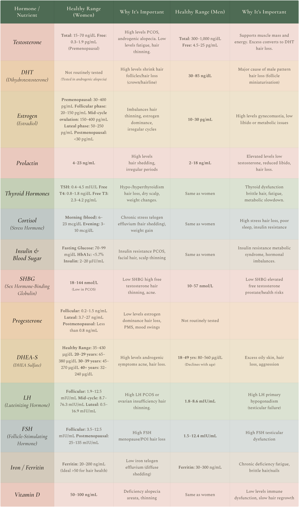
When to Test Hormones Practical Guidelines
For Women
Hormone testing may be helpful if you are experiencing irregular periods, noticeable hair thinning, or symptoms suggestive of conditions such as PCOS.
- Estrogen and progesterone: Around day 21 of a typical 28 day cycle
- FSH and LH: Day 3 of the menstrual cycle
Testing at these points provides a clearer picture of how ovarian hormones function and how they may influence hair growth patterns.
For Men
Hormone testing may be useful in cases of rapid hair loss, reduced energy, mood changes, or low libido.
- Total and free testosterone
- DHEA
- Cortisol
- Timing: Morning sample, when hormone levels are most stable and informative
Why It Matters
Even subtle hormonal imbalances can disrupt the hair growth cycle and contribute to conditions such as telogen effluvium or androgen related thinning. Identifying and addressing these shifts supports not only hair health, but also mood, energy levels, and overall vitality.
Embracing Hair Health Through Midlife
Midlife is a period of change, not only physically but also in how we relate to our bodies and ourselves. Hormonal transitions can influence confidence, energy, and emotional wellbeing, often reflected in the way hair looks and behaves. Approaching these changes with understanding rather than frustration allows the body to adapt more easily.
Ageing naturally brings shifts in hair density, texture, and growth, but it does not signal the loss of strength or vibrancy. For women, perimenopause and menopause invite a more personalised approach to hair care and nourishment. For men, andropause may bring gradual changes in hairline or thickness, yet with consistency and informed support, these changes can be managed confidently.
Midlife offers an opportunity to work alongside your body rather than against it. By responding to hormonal changes thoughtfully, adjusting routines where needed, and giving priority to long-term care over quick fixes, you create the conditions for resilience and balance.
With nourishing food, gentle yet effective hair care, stress awareness, and professional guidance when appropriate, hair can remain strong, healthy, and expressive at any age.
While time may alter your hair, it does not diminish your presence, confidence, or sense of self. Midlife is not an ending, but a transition into a more informed, self-aware chapter, one where adaptation brings strength and self-acceptance allows you to feel at ease in your body.
Build Your Dream Hair
Care Routine
Simple Habits for Good Hair Days
Caring for your hair does not have to be complicated. With endless products and trends promising miracles, it is easy to feel overwhelmed. True results come from keeping things simple, steady, and intentional.
Consistency always beats complexity. Healthy hair is not created through occasional treatments or constant experimenting. It is built through regular, mindful habits that support the scalp and nourish the strands over time. Doing too much can lead to imbalance, leaving hair weighed down or difficult to manage.
This chapter guides you through creating a simple, sustainable routine that fits your lifestyle and respects your hair’s natural rhythm. You will learn how to cleanse gently, hydrate effectively, and protect your hair with minimal effort and meaningful impact.
By the end, you will have a clear, no-fuss plan that supports hair health from root to tip. Because good hair days are not just about appearance, they are about hair that feels strong, balanced, and easy to care for, free from unnecessary frustration or wasted products.
True hair happiness comes from understanding, consistency, and self-care, not rigid rules or endless trial and error. Here, we return to the basics and build a routine that feels grounding and enjoyable, so caring for your hair becomes something you look forward to rather than something you endure.
The Eight Essential Steps for Achieving Hair Happiness
Now that you understand how hormones, nutrition, and scalp health shape your hair, it is time to turn that knowledge into action. The following steps guide you toward a practical, sustainable, and tailored routine.
Step 1: Know Your Hair Type
Think of your hair type as its unique personality. Getting to know it is the first and most important step toward a peaceful, happy relationship. When you understand your hair’s natural texture, thickness, and needs, you can stop fighting against it and start working with it. This is how you move beyond guesswork and begin choosing products and routines that support both your hair and your confidence.
Texture (Straight, Wavy, Curly, Coily): This determines your hair’s natural pattern and its ability to hold moisture. Understanding this is key to enhancing your natural beauty rather than masking it.
Thickness (Fine, Medium, Thick): This guides how much product to use and what formulas will give your body without weight, or definition without crunch.
Moisture & Scalp Balance (Oily, Dry, Balanced): This is the secret to nailing your washing schedule and choosing ingredients that bring your scalp and strands into perfect harmony.
Step 2: Cleanse with Care
Think of your shampoo and conditioner as the cornerstone of your routine, the act that sets the stage for everything else. Choosing the right products is not about the most expensive bottle. It is about finding the right partners for your hair type. This is where a simple wash becomes a supportive ritual.
Shampoo for Your Unique Needs
Oily Hair: Use a gentle balancing shampoo regularly and include a clarifying or deep-cleansing shampoo once every 1 to 2 weeks. Daily clarification is unnecessary and may overstimulate oil production. Instead, consistent cleansing with a lightweight shampoo helps keep the scalp clear, fresh, and comfortable without stripping its natural barrier.
Dry Hair: Choose a sulfate-free, hydrating shampoo that cleanses gently while preserving essential moisture. This helps prevent tightness, brittleness, and breakage, allowing hair to feel soft, smooth, and resilient.
Normal Hair: A mild, nourishing shampoo is ideal for maintaining natural shine, strength, and scalp balance. Stick to formulas that cleanse effectively without being overly rich or overly harsh.
Conditioner for Hydration
Conditioner works best when applied from mid-lengths to ends, where hair is naturally older and drier. This targeted approach hydrates and smooths without weighing down the roots. Leaving it on for 2 to 3 minutes allows conditioning agents to penetrate, resulting in softer, more manageable strands.
Washing Frequency
This depends on your scalp type, lifestyle, and product use. For many people, washing 2 to 3 times per week supports healthy oil balance and ongoing scalp comfort.
If you have an oily scalp, washing daily or every other day can improve scalp health by preventing oil buildup and congestion. Skipping washes does not train the scalp to produce less oil and may increase irritation. Dry shampoo can be helpful occasionally, but it should not replace regular, proper cleansing.
Step 3: Moisturise & Protect
Healthy happy hair is well hydrated hair. Think of this step as giving your hair a daily drink of water and a protective shield against everyday stressors. This is not about heavy products; it is about lightweight, loving care that keeps frizz at bay, enhances your natural shine, and defends against damage.
Leave-In Conditioner: Your daily hydrator. A good leave-in conditioner smooths frizz, makes detangling easier, and provides a continuous layer of moisture to keep your hair soft and manageable throughout the day.
Oils & Serums: A single drop of a lightweight oil such as argan, jojoba, or coconut, smoothed over the ends, helps seal in moisture, boost shine, and prevent dryness. Less is more, especially on fine hair.
Heat Protectant: Completely non-negotiable protection. Always apply before using heat tools. A heat protectant forms an invisible barrier that reduces breakage and heat damage, allowing you to style your hair with confidence and peace of mind.
Self-Care Ritual: Once a week, turn your routine into a moment of calm. Apply a deep-conditioning mask, wrap your hair, and unwind with a book, a favourite show, or quiet rest on the sofa. You are not only nourishing your hair but also supporting your body and nervous system.
Step 4: Detangle Without the Drama
How you detangle your hair can become a moment of mindfulness or a moment of stress. Let's choose calm. Being gentle is the ultimate act of respect for your hair, as it prevents breakage and preserves its natural strength. With the right approach, this everyday task can turn into a peaceful ritual.
Choose Your Tools Wisely: Always use a wide-tooth comb or a dedicated detangling brush, especially on wet hair, when it is at its most fragile.
Work Smart, start from the Bottom: Never pull from the roots. Begin detangling at the ends and slowly work your way upward toward the scalp. This method gradually releases knots, reducing snapping and breakage.
Slip is Your Best Friend: If your hair tangles easily, apply a leave-in conditioner before detangling. Added slip allows your tools to glide smoothly through knots with minimal tension.
Emergency Tangle Tamer: Keep a small spray bottle filled with water and a little conditioner for quick fixes. A few light spritzes soften tangles and make it easier to finger-comb hair when you are on the go.
Step 5. Trim Regularly
If you are growing your hair out, this may seem counterintuitive, but regular trims act like a reset button for hair health. Trimming is not about losing length, it is about preserving it. By preventing split ends from travelling up the hair shaft, trims reduce breakage and help you retain length over time.
Schedule Your Success: A trim every 6 to 8 weeks is the golden rule for maintaining strength, shape and preventing visible damage.
DIY Check-In: To spot split ends at home, twist a small section of dry hair. Split or damaged ends will stick out from the twist. If you choose to trim them yourself, use sharp hair scissors and snip only the visibly frayed tips.
Step 6: Eat Your Way to Stronger, Shinier Hair
True hair health does not start in the shower. It begins at the dining table and with what you drink every day. The most powerful elixirs for shine, strength, and growth are not bottled products. They are on your plate. Feeding your hair at its source provides the building blocks it needs to grow strong, vibrant, and resilient.
‘Think of it this way, you are what you eat and so is your hair’.
Protein Power: Eggs, fish, chicken, and lentils are the essential building blocks of strong, resilient strands. They are the bricks that construct each hair shaft, preventing weakness and breakage.
Healthy Fats for a Heavenly Gloss: Avocados, nuts, and olive oil do more than just taste good. They provide the deep, internal hydration that gives your hair its natural, enviable shine and softness, helping to combat dryness.
Vitamin-Rich Vitality: Spinach, almonds, and sweet potatoes are not just healthy; they are hair superstars. They deliver crucial vitamins and minerals, such as iron, vitamin E, and beta-carotene, that support a healthy scalp environment and promote thick, robust growth.
Hydration is Key: Never underestimate the power of a simple glass of water. Aim for at least 1.5 litres, around 8 glasses per day. Well-hydrated cells support soft, supple, full-of-life strands.
Seven Day Hair Nutrition Mini Plan
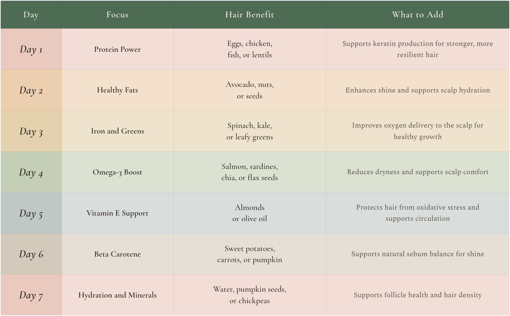
Step 7: Embrace Rest & Recovery
While you drift off to sleep, your body enters a powerful state of repair and renewal, and your hair benefits directly. This is not only about preventing breakage, but about supporting the body’s natural nightly processes that strengthen the scalp and hair follicles. Improved circulation and cellular repair during sleep help build thickness, resilience, and long-term hair health. Think of sleep as one of the most effective and completely free treatments your hair receives.
Sleeping for Hair growth: The timing and depth of sleep play an important role in hair health. Much of the body’s regeneration takes place during the deepest stages of sleep, which tend to occur earlier in the night. The period between 10 pm and 2 am is often when growth and repair hormones are most active, making this window especially supportive of scalp renewal, follicle function, and long-term hair resilience.
Choose a Protective Style: How you wear your hair at night matters. Avoid tight elastics, high-tension styles, or anything that pulls on the scalp, as this can place unnecessary stress on the hairline and restrict circulation. Instead, opt for a loose braid, a low ponytail, or a relaxed top bun, also known as pineapple style. Braiding hair before sleep does not make hair grow faster, but it supports growth by reducing tangling, friction, and mechanical breakage. This helps preserve length and maintain healthier strands over time.
Amplify with an Overnight Treatment: Before bed, give your hair an extra dose of love. Apply a lightweight hair oil of your choice or a leave-in conditioner to your ends. Your body’s natural warmth supports absorption overnight, leaving hair softer, smoother, and better protected by morning.
Prioritise Prime Sleep Hours: Aim for 7 to 9 hours of consistent, restorative sleep to fully support hair, skin, and overall recovery. A regular bedtime routine, reduced evening screen exposure, and a calm sleep environment all help optimise the body’s natural repair rhythms.
Step 8: Keep It Stress-Free
Everything is connected. When the body and mind remain in a constant state of overdrive, hair often reflects this through increased shedding, dryness, or slower growth. Elevated cortisol, the body’s primary stress hormone, can shorten the hair’s growth phase and push more strands into premature shedding.
Reducing stress is not a luxury; it is a vital part of hair care. Creating space for calm, rest, and mindful presence helps rebalance hormones, improve scalp circulation, and support the conditions needed for healthy hair growth. A settled inner state provides a stronger foundation for outer care.
Practice Mindful Moments: Dedicate just 5 to 10 minutes a day to quieting your mind. Gentle practices such as meditation, deep breathing, or journaling can help lower cortisol levels and signal to your body that it is safe to shift energy toward repair and growth.
Enjoy Moving Your Body: You do not need intense workouts to support your hair. A relaxed walk, light stretching, or dancing to your favourite music boosts circulation and releases mood-lifting endorphins. This supports the delivery of oxygen and nutrients to the hair follicles.
Establish Digital Boundaries: Constant connectivity can keep your mind in overdrive and is one of the major modern stressors. Set specific times to unplug from emails, social media, or your phone. These mental breaks help your brain and nervous system recharge and restore clarity.
Connect and Laugh: Emotional nourishment matters. Spend time with people who uplift you, share a laugh, or simply enjoy a positive interaction. Meaningful connection supports emotional balance and helps keep the body in a relaxed, growth-supportive state.
All the products and treatments in the world are less effective when the body is tense and depleted. By caring for your emotional rhythm and creating intentional moments of calm, you support the internal environment your hair needs to thrive.
Daily Hair Happiness Ritual
Morning: Brush gently to distribute oils and boost scalp circulation.
Midday: Drink water, stretch, and take a mindful minute to breathe.
Evening: Loosen your hair, detangle gently, and rest.
Small, regular rituals like these keep your scalp, body, and mind in sync, creating a foundation for lasting hair health.
Small Steps, Big Results
The true secret to healthy, beautiful hair is consistency. Meaningful change happens when you choose products that support your hair’s natural needs, treat it with care, and create simple routines that fit effortlessly into your life. This is not about perfection or chasing trends, but about paying attention to what your hair is telling you and responding with intention.
Progress does not require dramatic changes. Small, thoughtful choices make the greatest difference over time. Switching to a gentler shampoo, reducing heat-styling, or adding a weekly scalp massage are powerful acts of care. Supporting your body with nourishing food and adequate rest allows your hair the internal conditions it needs to repair, grow, and strengthen naturally.
Healthy hair does not thrive on extremes. It responds best to balance and rhythm, reflecting hydration, nourishment, rest, and emotional wellbeing. When you create space for recovery and treat your body with kindness, your hair responds with resilience, shine, and vitality.
Every strand carries the imprint of how you care for yourself. With awareness and gentle habits, healthy hair becomes less of a goal and more of a natural extension of your way of life. Embrace the journey, one mindful step at a time.
Finding the Right Products for you
Walking through the haircare aisle can feel exciting, yet often overwhelming. Every product promises instant repair, deep hydration, or frizz control, but not every formula is right for your hair or scalp. The truth is, your hair is as individual as your fingerprint, and what works beautifully for one person may disrupt balance for another. Using unsuitable products can do more harm than good, leading to buildup, dryness, or irritation that takes time to resolve.
Your scalp is sensitive to everything you apply to it. Each ingredient interacts with this environment, influencing comfort, balance, and healthy growth. Harsh detergents, heavy silicones, and strong fragrances may interfere with this balance, while thoughtfully formulated, nourishing products can support your scalp.
Choosing the right products is not about chasing trends or marketing claims, but about understanding what truly serves your hair. When you learn to read ingredient labels and recognise your scalp’s needs, you begin to shop with clarity and intention, guided by knowledge rather than advertising.
This chapter will help you identify your hair’s unique needs, decode labels with confidence, and choose formulas that align with your goals. You will learn which ingredients to embrace, which to avoid, and how to keep your routine simple yet effective. By the end, you will feel empowered to create a haircare system that supports your hair, respects your scalp, and works in harmony with your body.
Understanding Hair Product Categories
A balanced haircare routine is built around four key categories: cleansing, conditioning, treatment, and styling. Each serves a specific purpose, and understanding how they work together allows you to choose products with confidence and intention.
Cleansers
Cleansers are the first and most essential step in your hair care routine. Their main role is to gently remove dirt, excess oil, and product buildup from your scalp and strands, thereby resetting your hair.
Shampoos: Provide a thorough, regular cleanse.
Co-washes (conditioning washes): Gently cleanse while keeping hair hydrated, ideal for dry or curly hair.
Scalp Scrubs: Exfoliate the scalp for a deeper clean when buildup is present.
Clarifying Shampoos: Deliver a stronger cleanse to remove stubborn residue from styling products or hard water, best used occasionally.
What to Look For
- Choose formulas with mild surfactants (cleaning agents) such as coco-glucoside or sodium cocoyl isethionate. These cleansers are effective without stripping away the natural oils your hair needs for softness and health.
- Clarifying formulas for a deeper cleanse can be used occasionally, but always follow with a hydrating treatment to prevent dryness.
- Look for hydrating ingredients like aloe vera or glycerin to maintain a balanced moisture level from the very first wash.
Conditioners
While cleansers reset your hair, conditioners restore moisture, smoothness, and shine. They help seal the hair cuticle, reduce frizz, make detangling easier, and lock in hydration.
Key Ingredients to Look For
Emollients: Ingredients like shea butter, argan oil or similar oils soften the hair shaft, attract and lock in moisture, and leave hair smooth and glossy.
Repairing Agents: Proteins such as hydrolysed wheat protein or keratin strengthen and fortify damaged strands, improving resilience and overall hair health.
Silicones: Dimethicone or similar ingredients create a silky finish, but monthly clarifying helps prevent buildup.
Treatments
Treatments are your power players, specialised formulas designed to go beyond daily care and target specific concerns and goals. Whether you are strengthening fragile strands, reviving dullness, or nurturing your scalp, this is where your routine becomes personalised and results-driven.
Hair Masks: Intensive formulas for deep hydration and repair.
Serums and Oils: Target shine, frizz, or split ends with precision.
Scalp Oils and Growth Tonics: Soothe, balance, and stimulate the scalp for healthier hair.
Key Ingredients and Their Benefits
- Protection: Antioxidants like Vitamin E defend hair from environmental stress and free radicals, helping prevent dullness and breakage.
- Scalp Health: Peptides, caffeine, and peppermint oil boost circulation, supporting a healthy scalp and hair growth.
- Clarity and Growth: Exfoliating acids such as salicylic acid gently remove dead skin cells, excess sebum, and product buildup that can block follicles.
Styling Products
Styling products are the artists of your routine, the finishing touches that allow you to express your creativity, define your texture, and ensure your style lasts. From sleek looks to voluminous curls, the right product provides the hold, shape, and polish you need.
Gels and Sprays: Provide strong, long-lasting hold and definition.
Mousses and Foams: Create lightweight volume, lift, and body.
Creams and Milks: Provide soft definition, flexible hold, and frizz control.
Key Ingredients and Their Role
- Hold Agents: Polymers such as PVP create a flexible film around each strand, giving structure and helping your style maintain its shape.
- Finishing Enhancers: Silicones and lightweight oils like argan or jojoba smooth the cuticle, seal in moisture, enhance shine, and tame flyaways.
Decoding Product Labels, Read Beyond the Hype
Choosing hair care products does not need to feel complicated. Once you understand how to read labels, you can look past marketing language and confidently select products that genuinely support your hair and scalp. Label literacy puts you back in control.
1. Golden Rule of Ingredient Lists
Look for the section labelled “Ingredients” or “INCI List” (International Nomenclature of Cosmetic Ingredients). Ingredients are listed in descending order from highest to lowest concentration. The first five ingredients usually make up the majority of the formula, so pay close attention to them.
What this tells you
- Water (Aqua): If this is listed first, the product is water-based, usually lightweight and hydrating.
- Beneficial ingredients early: Moisturisers such as glycerin, aloe vera, or panthenol appearing near the top often indicate hydration support.
- Red flags near the top: If you see sulfates or drying alcohols listed early, the product may signal a formula that could be harsh for dry, curly, or sensitive hair.
2. Ingredient Cheat Sheet
Understanding ingredient categories makes label reading far simpler than memorising long lists.
- Moisturisers: Glycerin, aloe vera, panthenol
- Strengtheners: Keratin, hydrolysed proteins, amino acids
- Nourishment: Argan oil, jojoba oil, shea butter, coconut oil
- Scalp Health: Salicylic acid, caffeine, niacinamide, peptides
- Vitamins: Biotin and panthenol (Vitamin B5) for elasticity, shine, and scalp vitality
3. Be Mindful of These for Most Hair Types
Some ingredients are effective but require thoughtful use.
- Sulfates (SLS/SLES): Strong cleansing agents that may strip natural oils and irritate the scalp when used frequently
- Drying Alcohols: Such as Alcohol Denat or SD Alcohol 40, which can contribute to brittleness, especially in dry or curly hair.
- Heavy Silicones: Including dimethicone, which can build up over time and weigh hair down
4. Check for Expiry Dates & Shelf Life
A product’s effectiveness and safety are tied to its shelf life. Using expired products can reduce performance and increase the risk of scalp irritation or infection. When a product no longer looks, smells, or performs as expected, it is best to replace it.
What to look for
- PAO Symbol (Period After Opening): Shown as a small open jar with a number and the letter M, such as 12M or 24M. This indicates how many months the product is safe to use after opening, and is especially important for natural formulas with fewer preservatives.
- Use by or Expiry Date (EXP): Common on natural, organic, or preservative free products. A printed date, for example EXP 10/2025, indicates when the unopened product should be used by.
- Batch Code or Manufacturing Date: If no expiry is listed, use this to estimate shelf life. Many brands let you verify these codes on their website or through customer service.
5. Understand Shelf Life and Proper Storage
- Unopened Products: Typically, last 2 to 3 years from the manufacturing date.
- Opened Products: Usually remain effective for 6 to 24 months, depending on the formula and storage conditions.
- Storage: Keep in a cool, dry place, away from direct sunlight. Always seal caps tightly after use. Avoid storing products in hot, steamy bathrooms; excess heat and humidity can cause ingredients to break down more quickly.
6. Recognise the Signs of an Expired Product
Using expired products can irritate the scalp or reduce performance.
What to look for
- Change in smell: Sour, rancid, or overly chemical scents.
- Separation: Watery, clumpy, or uneven texture.
- Texture shift: Too thick, thin, runny, or grainy.
- Loss of performance: Doesn’t cleanse, condition, or style as effectively.
When in doubt, throw it out. Using expired products can do more harm than good.
7. Perform a Patch Test
Even well-formulated products can cause reactions. Before using a new product, apply a small amount, about the size of a small coin or a pea size, to your inner elbow or behind your ear. Leave it on for 24 to 48 hours without washing. If you notice redness, itching, swelling, or irritation, discontinue use.
8. Look for Trustworthy Certifications and Claims
Certifications can help you spot higher-quality or ethically made products.
- Cruelty-Free Logo: Leaping Bunny or PETA means no animal testing.
- Certified Organic Seal: USDA, COSMOS, or “100% Organic” suggest fewer synthetic additives, though labels should still be checked.
- Sulfate-Free or Paraben-Free: Gentler options for curly, colour-treated, or sensitive hair.
- Dermatologist Tested: Often safer for sensitive scalps or allergy-prone individuals.
- Recycling Logo: confirm packaging recyclability based on local guidelines.
- Flame on Hand (Fire Hazard): Found on aerosol cans like hairspray, showing the product is pressurised and flammable.
9. Don’t Fall for Buzzwords
Marketing terms are not regulated indicators of quality.
Here’s what they really mean:
- “For All Hair Types”: A general formula that may not suit your unique needs. Better to choose products for your texture (curly, fine, coily, straight) and goals (moisture, volume, repair).
- “Chemical-Free”: Misleading, since everything is made of chemicals. Instead, look for products labelled “free from harsh chemicals,” such as sulfates, parabens, or dyes.
- “Moisturising” or “Repairing”: Claims should be backed by real ingredients, such as glycerin, shea butter, aloe vera for moisture, or proteins, amino acids, and ceramides for repair.
By following this guide, you’ll be better equipped to choose products that are both effective and safe. Smart label reading is one of the most powerful tools in your hair wellness toolkit.
10. Use Ingredient-Checking Tools for Extra Clarity
If you want additional reassurance when choosing products, ingredient-checking tools can offer a helpful second layer of guidance. These platforms allow you to scan labels or search products to better understand ingredient purpose, safety profiles, and potential sensitivities.
Use them as support rather than absolute authority. Ratings can vary depending on formulation, concentration, and personal tolerance. The most reliable approach is to combine these tools with your own label literacy and awareness of how your hair and scalp respond over time.
Tools such as Think Dirty or the EWG Environmental Working Group Skin Deep database can be useful for quick ingredient overviews, particularly when comparing products or checking unfamiliar formulas.
Ingredient Cheat Sheet at a Glance
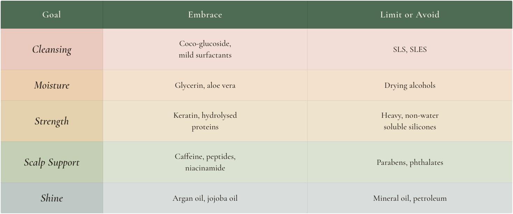
Guide to Tailoring Hair Products to Your Needs
Choosing the right hair products begins with understanding your hair’s unique characteristics and selecting formulas that work in harmony with them. This step by step guide will help you decode your hair’s needs and build a routine that truly supports healthy, balanced hair.
Step 1: Identify Your Hair Type and Texture
Once you know your hair type, you can select formulas designed for its specific needs. This forms the foundation of your regimen, since your hair’s thickness and shape determine the right balance of moisture, volume, and definition it requires.
Fine Hair
Goal: Add volume and lift without weighing strands down.
Shampoo: Volumising or gently clarifying formulas, preferably sulfate-free.
Conditioner: Lightweight, protein-rich conditioners. Avoid heavy oils and butters.
Styling: Mousses, root-lifting sprays, and dry shampoos for body and freshness.
Thick Hair
Goal: Manage volume, combat dryness, and control frizz.
Shampoo: Hydrating and moisturising formulas.
Conditioner: Rich, creamy conditioners with nourishing oils and butters.
Styling: Leave-in conditioners, styling creams, or gels to define texture and smooth frizz.
Curly or Coily Hair
Goal: Maximise moisture, define curls, and reduce frizz.
Shampoo: Sulfate-free, moisturising cleansers or co-washes.
Conditioner: Deep conditioners with ingredients such as shea butter, coconut oil, or glycerine.
Styling: Curl creams, leave-in conditioners, anti-frizz serums, and holding gels.
Wavy Hair
Goal: Enhance natural waves while maintaining lightness and structure.
Shampoo: Lightweight, gentle cleansers.
Conditioner: Light conditioners that hydrate without weighing hair down.
Styling: Volumising mousses, sea-salt sprays, or light creams to add body and definition.
Straight Hair
Goal: Maintain volume and prevent greasiness or heaviness.
Shampoo: Lightweight, oil-free shampoos avoid heavy moisturisers.
Conditioner: Light, detangling conditioners are used sparingly.
Styling: Minimal products. Use smoothing serums or shine sprays sparingly.
Step 2: Determine Your Hair Porosity
Porosity refers to your hair’s ability to absorb and retain moisture. Understanding this helps you choose products that hydrate effectively and protect the cuticle.
Low Porosity (Resists Moisture)
Signs: Products tend to sit on the surface; hair takes a long time to get wet and to dry.
Best Formulas: Lightweight, water-based products with humectants like glycerin and aloe vera that can penetrate more easily.
Medium Porosity (Balanced Absorption)
Signs: Hair wets and dries at a normal pace, holds styles well, and responds easily to most products.
Best Formulas: A balanced combination of moisturisers like aloe vera and panthenol, proteins such as hydrolysed keratin or amino acids, and light oils like jojoba or argan. Deep treatments every few weeks help maintain strength and shine.
High Porosity (Loses Moisture Quickly)
Signs: Hair absorbs water fast but dries quickly, often leading to frizz, tangling, and breakage.
Best Formulas: Rich creams and butters, including shea or mango, combined with sealing oils such as coconut, castor, or argan to lock in moisture.
Step 3: Assess Your Scalp Condition
A healthy scalp is the foundation of healthy hair. Shampoo and scalp treatments should always be chosen based on scalp needs.
Oily Scalp
Use a gentle clarifying shampoo one to two times per week to remove excess oil and buildup. Avoid applying conditioner directly to the roots.
Dry or Flaky Scalp
Choose hydrating shampoos with soothing ingredients such as aloe vera, chamomile, or tea tree oil. Follow with a lightweight conditioner to restore comfort and balance.
Sensitive Scalp
Opt for fragrance free, hypoallergenic formulas with minimal additives. Avoid sulfates, parabens, and harsh alcohols, which may trigger irritation.
Normal or Healthy Scalp
Maintain with a gentle sulfate-free shampoo. Rotate in a clarifying or scalp refreshing formula every few weeks to prevent buildup.
Step 4: Define Your Primary Hair Goals
Once you understand your hair type, porosity, and scalp condition, you can focus on targeted products that support your personal goals.
- Growth: Stimulate the scalp with products containing caffeine, biotin, or rosemary oil.
- Repair: Rebuild strength with weekly protein-rich masks and nourishing deep conditioners.
- Frizz Control: Smooth strands with leave-ins or serums containing shea butter or lightweight silicones to seal the cuticle and block humidity.
- Hydration: Boost moisture with humectants such as glycerin, aloe vera, or hyaluronic acid, combined with sealing oils like argan or jojoba.
- Volume: Use lightweight, volumising shampoos and mousses that lift roots without weighing hair down.
- Colour Protection: Choose colour safe, sulfate-free formulas with UV filters and antioxidants, such as green tea or vitamin E, to help prevent fading.
Your Action Plan
- Start with your hair type in Step 1.
- Refine your ingredient choices using porosity in Step 2.
- Prioritise scalp health in Step 3.
- Then layer targeted products based on your goals in Step 4.
Following this structured approach removes guesswork, transforms how you shop for hair care, and helps you build a routine that supports your healthiest, happiest hair.
Avoid Harmful Ingredients in Hair Products
Not all hair products are created with long-term scalp health in mind. Some contain ingredients that can strip moisture, irritate the scalp, or contribute to buildup that interferes with healthy growth. Over time, these effects can weaken the scalp barrier and disrupt the environment that supports your follicles.
Learning to identify and minimise these ingredients can significantly improve your hair’s strength, resilience, and shine. Below is a clear breakdown of common culprits, why they matter, and safer alternatives to look for.
1. Sulfates
Sodium Lauryl Sulfate (SLS), Sodium Laureth Sulfate (SLES)
Why to Avoid: Sulfates are strong detergents added to shampoos to create foam and lather. While effective, cleansers can strip natural oils, leaving hair dry, brittle, and prone to frizz. They may irritate the scalp, worsen dandruff, and cause faster fading of colour-treated hair.
Safer Alternatives: Choose gentle surfactants such as coco-glucoside, decyl glucoside, or sodium cocoyl isethionate. Look for products labelled sulfate-free, especially if you have dry, curly, or coloured hair.
2. Parabens
Methylparaben and Propylparaben are commonly found in conditioners, leave-ins, and styling creams and are used as preservatives to extend shelf life.
Why to Avoid: Parabens have been linked to hormone disruption and possible reproductive concerns. They may also cause irritation, particularly on sensitive scalps.
Safer Alternatives: Phenoxyethanol or natural preservation systems such as Leuconostoc radish root ferment. Choose products labelled paraben-free.
3. Silicones
Dimethicone, cyclopentasiloxane, and other synthetic polymers are used to smooth and add shine. They are commonly found in conditioners, serums, and heat protectants.
Why to Avoid: Some silicones can build up, weigh hair down, and block moisture absorption. Many require stronger cleansers to remove, which may continue a cycle of dryness and imbalance.
Safer Alternatives: Water-soluble silicones such as dimethicone copolyol or bisaminopropyl dimethicone. Natural oils like argan, jojoba, or marula can provide slip and shine. If using silicones, pair with sulfate-free cleansers and clarify occasionally.
4. Formaldehyde Releasers
DMDM Hydantoin, Quaternium-15, and other preservatives that slowly release formaldehyde are sometimes found in keratin treatments and hair straighteners.
Why to Avoid: These preservatives slowly release formaldehyde, which is classified as a carcinogen. They have been linked to hair loss, scalp burns, and respiratory irritation.
Safer Alternatives: Choose formaldehyde free treatments and always read ingredient labels carefully, especially for professional or at home smoothing products.
5. Drying Alcohols
Ethanol and isopropyl alcohol are fast-evaporating solvents used in hairsprays, gels, mousses, and styling products.
Why to Avoid: These fast-evaporating alcohols strip hair of moisture, leading to brittleness, dryness, and split ends when used frequently.
Safer Alternatives: Fatty alcohols such as cetyl alcohol, cetearyl alcohol, or stearyl alcohol, which moisturise and soften hair. Choose alcohol free formulas if your hair is dry or damaged.
6. Phthalates
Often hidden as Fragrance or Parfum. Chemicals are used to extend the longevity of synthetic scents. Commonly found in scented shampoos, conditioners, and sprays.
Why to Avoid: Phthalates are used to make synthetic scents last longer and have been linked to hormonal imbalance and potential reproductive concerns.
Safer Alternatives: Look for phthalate-free or fragrance free labels. Choose products scented with essential oils such as lavender, rosemary, or peppermint.
7. Mineral Oil and Petroleum
Byproducts of crude oil are used as emollients. Found in budget conditioners, hair oils, and greases.
Why to Avoid: These petroleum byproducts coat the hair and scalp, preventing moisture absorption and contributing to pore clogging and buildup.
Safer Alternatives: Plant-based oils such as coconut, avocado, argan, or grapeseed oil that nourish without blocking hydration.
8. Synthetic Dyes
FD and C Red 40, FD and C Yellow 5, artificial colourants derived from petroleum. Found in brightly coloured shampoos, conditioners, and styling gels
Why to Avoid: Synthetic dyes may cause skin irritation or allergic reactions. Some are associated with toxicity and sensitivity concerns.
Safer Alternatives: Choose dye free or naturally pigmented products. Look for colourants derived from botanical sources such as beetroot, hibiscus, turmeric, or berry extracts.
By choosing gentler, well formulated products, you protect not only your hair and scalp but also your overall wellbeing, while still achieving beautiful, effective results.
Choose Smarter, Choose Better
Now that you understand how to build a consistent routine, the next step is choosing products that truly serve your hair. Every ingredient interacts with your scalp and follicles, so clean, wellformulated products protect balance, while harsh additives strip oils and disrupt growth. Nutrientrich, minimally processed formulas work in harmony with your scalp’s natural rhythm, preserving vitality.
Your hair communicates its needs through softness, volume, moisture, or rest. Listen to these cues and adapt seasonally, especially to changes in hard water, humidity, or pollution. Shop beyond marketing, read the first five ingredients, use trusted tools such as ingredient databases or rating resources, and patch test new products. EWG’s Skin Deep database, for example, is designed to help consumers understand ingredient safety and product ratings, thereby supporting more informed choices.
A few well-chosen formulas will always outperform a crowded shelf. The beauty industry thrives on novelty, but you now have the knowledge to look beyond it. With awareness, intention, and simple tools, choosing wisely becomes an act of self-respect that supports your hair, scalp, and overall wellbeing. Shop confidently. Your hair deserves it.
Styling with Love, not Damage
Picture your hair thriving in sleek ponytails or soft, bouncy curls without frizz, discomfort, or breakage. Too often, the pursuit of flawless styles comes at the cost of hair health. Beauty and damage are treated as an unavoidable trade-off, but with the right approach, you can enjoy both stunning styles and resilient strands.
Most of us style our hair daily. We straighten, curl, pull it back, or tie it up to suit our mood, routine, or lifestyle. Yet many people find themselves stuck in a frustrating cycle. You spend time perfecting curls that collapse within hours or create a sleek ponytail, only to feel scalp tenderness by the end of the day. Over time, breakage, thinning, and loss of shine quietly follow.
The truth is, styling damage builds gradually. Heat tools, tight hairstyles, friction, and chemical overload all place stress on the hair shaft. Styling also affects the scalp in ways many people overlook. Prolonged tension, constant pulling, and excessive heat can overstimulate the scalp’s sensory nerves, creating strain and reducing circulation to the follicles.
Styling is not just a physical act; it is a neurological and biological process. When you create space for ease in your routine, loosening braids, releasing ponytails, massaging the scalp before washing, or allowing hair to rest, you support both follicle health and nervous system balance. Relaxed styling promotes a healthier environment for growth.
The good news is that you do not need to choose between healthy hair and beautiful hair. With mindful techniques, protective habits, and intentional care, you can style in ways that enhance your look while preserving strength, elasticity, and comfort.
In this chapter, you will learn the most common causes of styling-related damage, how to minimise breakage from heat and tension, and how to use protective styles and tools without harm. These strategies are designed to help your hair look great and feel even better. This is about more than avoiding damage. It is about changing how you relate to your hair. When styling becomes an act of care rather than control, confidence replaces frustration. Let go of harsh routines and embrace styling that is supportive, sustainable, and kind. Your hair deserves to be styled with love.
The Big Three Causes for Hair Damage
Most styling-related hair damage falls into three main categories: heat, chemical, and mechanical. Once you understand how each type occurs, you can make informed choices that protect your strands, preserve strength, and prevent unnecessary breakage.
Healthy styling is not about avoiding beauty routines altogether. It is about reducing repeated stress and supporting the hair’s natural structure.
1. Heat Damage - Turn Down the Temperature
Think of your hair’s cuticle as a protective roof that keeps moisture safely inside. Frequent heat-styling gradually wears down that protection. Styling tools such as flat irons, curling wands, and blow dryers expose the hair shaft to high temperatures that lift and disrupt the cuticle, allowing moisture to escape and leaving hair dry, rough, and more prone to breakage.
With repeated exposure, heat can also affect the hair’s internal protein bonds. As these bonds weaken, elasticity declines, making strands less resilient over time.
Common signs of heat damage
- Persistent frizz and rough texture
- Loss of natural shine, dryness and stiffness
- Hair that no longer holds a curl or style easily
How to protect your hair
- Limit heat-styling to two or three times per week to allow recovery.
- Always use a heat protectant containing ingredients such as silicones, lightweight oils, or film-forming polymers to reduce direct thermal stress.
- Choose the lowest effective temperature for your hair type.
Recommended temperature guidelines
- Fine, fragile, or damaged hair upto 180°C
- Thick or coarse hair upto 210°C
Whenever possible, allow hair to air-dry until it is at least 60% dry before applying heat. Using hot tools on soaking-wet hair can cause internal steam damage, permanently weakening strands.
2. Chemical Damage - Less Is More
Chemical treatments, including colouring, bleaching, relaxing, perming, and intensive smoothing treatments, work by altering the hair’s internal structure. While these processes can deliver visible results, frequent or overlapping treatments increase porosity and reduce hair strength.
Over time, chemically stressed hair becomes more fragile and prone to breakage, especially when combined with heat-styling.
Common signs of chemical damage include
- Increased breakage and snapping
- Hair that feels dry, straw-like, or fragile
- Excessive shedding following treatments
- Scalp sensitivity or irritation
Damage-reducing strategies
- Space chemical treatments at least six to eight weeks apart.
- Choose gentler formulations with fewer harsh alkaline agents.
- Use bond-supporting ingredients such as amino acids, proteins, and lipid-restoring compounds to reinforce hair structure.
- Incorporate deep conditioning treatments regularly to restore moisture and elasticity
Natural colour-supporting approaches, such as botanical rinses or plant-based pigments, can offer subtle enhancement while reducing overall chemical stress.
3. Mechanical Damage - Handle with Care
Mechanical damage is caused by physical stress placed on the hair through everyday handling. This includes aggressive brushing, tight hairstyles, friction from fabrics, and repeated tension on the same areas of the scalp.
Although less dramatic than heat or chemical damage, mechanical stress accumulates quietly and is a major contributor to thinning, split ends, and mid-shaft breakage.
Common signs of mechanical damage include
- Excessive hair caught in brushes or detangling tools.
- Split ends and weak points along the hair shaft.
- Hair breakage rather than natural shedding from the root.
- Thinning around the hairline or crown
Gentle hair-handling habits
- Detangle hair gently when damp and conditioned using a wide-tooth comb or soft brush.
- Start detangling from the ends and work upward gradually.
- Avoid tight hairstyles that pull on the same scalp areas repeatedly.
- Use fabric-covered or low-tension hair ties like silk scrunchies or spiral hair ties that minimise stress rather than traditional elastics.
- Sleep on smooth fabrics such as silk or satin to reduce friction overnight
Reducing tension allows the scalp to maintain healthy circulation and helps follicles remain in a supportive growth environment.
In the sections that follow, you will learn how to style with intention, use protective techniques wisely, and create beautiful looks that support long-term hair health rather than undermine it.
Damage-Free Styling, Smarter Way to Style
Beautiful hair does not require heat, harsh chemicals, or constant tension. With the right techniques, you can create stylish, polished looks while protecting your hair’s strength, elasticity, and long-term health. Damage-free styling is about intention, variety, and knowing when to let your hair rest.
1. Heatless Curls That Impress
Heatless styling methods gently shape hair without compromising moisture or structure. These techniques are especially beneficial for anyone experiencing dryness, breakage, or sensitivity.
Braiding slightly damp hair before bed creates soft waves by morning. Wrapping hair into soft buns or flexible rollers produces curls without thermal stress. These methods allow hair to set naturally while preserving hydration and elasticity.
2. Air-Drying with Purpose
Air-drying does not mean neglect. Applying lightweight, supportive products to damp hair and allowing it to dry with minimal manipulation reduces friction and damage. For textured hair, gentle scrunching followed by hands-off drying helps define curls. For smoother styles, light hydration and minimal handling help reduce frizz and enhance shine.
The key is patience. Excessive touching during drying increases frizz and weakens strands.
3. Protective Styles that Strengthen, not Strain
Protective styles work best when they minimise tension and tuck the ends away without pulling on the scalp. Low buns, loose braids, twists, and gentle updos reduce daily manipulation and help preserve length.
Styles should always feel comfortable. Tightness, tenderness, or pulling signals stress on the follicles. Light moisture before styling helps prevent dryness and breakage while hair is secured.
4. Rotate Styles to Protect the Scalp
Wearing the same hairstyle repeatedly places stress on the same areas of the scalp. Over time, this can contribute to irritation, inflammation, and traction-related thinning.
Rotating hairstyles allows different scalp zones to rest and recover. Alternating between wearing hair loose, tied back, or styled protectively supports circulation and long-term follicle health.
5. Trimming as Preventive Care
Even gentle styling causes gradual wear. Regular trims, approximately every six to twelve weeks, prevent split ends from travelling upward and causing further breakage. Trimming maintains shape, improves manageability, and supports the appearance of fuller, healthier ends.
Skipping trims often leads to more breakage, not more length.
6. Beauty Sleep for Your Hair
Hair continues to experience friction while you sleep. Smooth fabrics such as silk or satin reduce tension, moisture loss, and frizz. Securing hair loosely in a braid or soft wrap prevents overnight tangling and breakage.
Night-time care is not about control; it is about protection while the body rests and repairs.
7. Adapt Styling to the Seasons
Environmental conditions affect hair resilience. Humidity, dryness, wind, and pollution all influence how hair behaves. Adjusting styling choices with the seasons helps maintain balance.
Protective styles in windy conditions, lightweight anti-frizz support in humidity, and richer moisture in dry climates help hair remain strong and manageable year-round.
8. Recovery Days Matter
Hair needs rest just as the body does. After heat-styling, chemical treatments, or tension-based styles, recovery days allow both scalp and strands to reset.
Use these days for gentle cleansing, deep conditioning, scalp massage, and minimal manipulation. Recovery reduces cumulative damage, supports circulation, and restores comfort. These pauses also calm the nervous system, reinforcing the connection between hair health and overall wellbeing.
Safer Chemical Styling Options
If you regularly colour, relax, perm, or chemically treat your hair, extra care is essential to prevent long-term damage. The goal is not to avoid these treatments entirely, but to approach them in ways that protect strength, elasticity, and scalp health.
Begin by choosing gentler formulations whenever possible. Ammonia-free, low-alkaline, or semi-permanent colour options place less stress on the hair shaft and scalp while still delivering visible results. Over time, this helps maintain flexibility and reduces the risk of brittleness and breakage.
Spacing treatments is equally important. Avoid overlapping chemical services in close succession, such as colouring and relaxing within the same period. Hair needs time to recover between processes, just as the body does after physical strain. Allowing several weeks between treatments helps preserve internal structure and reduces cumulative damage.
Supporting the hair during and after chemical services makes a measurable difference. Look for bond-supporting ingredients, amino acids, proteins, and lipid-restoring compounds that help reinforce the hair’s inner strength and outer barrier. Deep conditioning and moisture replenishment should be non-negotiable parts of your routine during chemically active phases.
For those seeking a more natural approach, plant-based alternatives can offer subtle enhancement with less stress. Botanical pigments and herbal rinses can deepen tone, add warmth, or enhance brightness while conditioning the hair. These options are best viewed as complementary rather than replacements for dramatic colour changes.
With thoughtful formulation choices, adequate recovery time, and supportive care, chemical styling can be part of a healthy routine. When approached with intention, it is possible to enjoy colour and texture changes without compromising strength, shine, or scalp balance.
Quick Reference Styling Damage
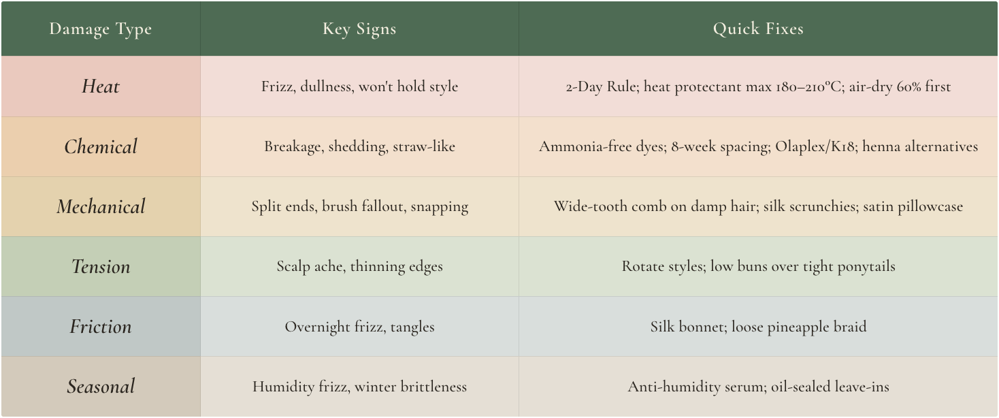
Your Hair’s Love Language
Healthy hair is not about sacrificing style, it is about styling with intention. You never have to choose between beauty and strength. With mindful choices, you can have both. Swapping heat tools for heatless methods, choosing silk scrunchies over harsh elastics, using gentle botanical rinses, or sleeping on smooth fabrics are not compromises, they are upgrades that protect your hair while enhancing its natural beauty.
Each of these choices is an act of self-love. Your hair is not a problem to be solved, it is a living, expressive part of you, responsive and deeply connected to how you feel. When your hair is cared for and strong, it supports confidence and ease. When it is damaged or strained, it can quietly influence how you move through the world.
Caring for your hair goes beyond routine, it becomes a ritual. These small moments of care invite you to slow down, tune in, and reconnect with yourself. The calm created through gentle styling sends signals of balance throughout the body, supporting not only your scalp and follicles but your overall sense of wellbeing.
This chapter was never just about avoiding damage. It was about redefining your relationship with your hair in a way that feels safe, sustainable, and empowering. When you listen, respond, and adjust with kindness, your hair responds in return.
Love your hair intentionally. Protect it with awareness. Speak its love language through consistency, gentleness, and trust. You do not need a perfect routine, only one that feels personal. This journey belongs to you, and every strand can thrive under conscious care. Style your hair your way, healthy, resilient, and quietly radiant.
Overcome Hair Challenges
and Prevention
Hair Loss and Taming Common Hair Woes
Few things affect confidence as deeply as unexpected changes in our hair. Noticing extra strands on your pillow, experiencing persistent breakage, or struggling with an itchy, irritated scalp can feel unsettling. These concerns often go beyond appearance, because hair is closely linked to identity, wellbeing, and self-expression.
Hair is more than a cosmetic feature. It reflects what is happening within the body and mind. When shedding increases or the texture changes, it can feel like a signal that something deeper is seeking attention. This is why hair concerns often carry emotional weight, influencing confidence, self-image, and even how we show up in our lives.
Healthy hair depends on a finely balanced internal and external environment. Nutrition, hormones, circulation, sleep quality, and emotional wellbeing all play essential roles.
The scalp is closely linked to the nervous and circulatory systems, and chronic stress or fatigue can reduce blood flow and nutrient delivery to the follicles. When the body senses imbalance or threat, it naturally prioritises survival over growth, and hair may slow, pause, or enter a resting phase.
The encouraging truth is that most hair concerns, including hair loss, are manageable. With informed care, supportive daily habits, and patience, it is possible to restore balance and support healthier growth over time.
In this chapter, we explore common hair challenges such as thinning, shedding, breakage, and scalp discomfort. You will learn how biology, lifestyle, and emotional wellbeing influence these changes, and how small, consistent adjustments can lead to noticeable improvement. We also explore evidence-based care practices and mindset shifts that support hair health, alongside a greater sense of confidence and calm.
To begin, let us look at the different types of hair growth disruption and how they shape overall hair health.
Common Hair Loss Terms You May Encounter
If you have ever searched for answers about hair changes, you may have come across a wide range of medical terms. Understanding these names can help you feel informed when reading, researching, or speaking with professionals. They are included here for awareness, not for self diagnosis.
Androgenetic Alopecia
Often referred to as pattern hair thinning, this term describes gradual thinning influenced by genetics and hormone sensitivity. It tends to develop slowly over time and affects both men and women in different patterns.
Alopecia Areata
This is an autoimmune condition. The term is used for patchy hair loss linked to immune system activity. It can appear suddenly and may fluctuate over time. Stress and immune balance often play a role.
Telogen Effluvium
A common term for temporary, stress related shedding. It often follows illness, emotional strain, hormonal shifts, or significant lifestyle changes, and typically improves once balance is restored within 6 to 12 months.
Anagen Effluvium
This describes hair shedding during the active growth phase, most often associated with medical treatments or severe physical stress. Regrowth usually occurs once the trigger is removed.
Traction Alopecia
Hair thinning caused by prolonged tension from tight hairstyles or repeated pulling. In many cases, early changes are reversible when styling habits are adjusted.
Trichotillomania
A condition involving recurrent hair pulling, often linked to stress or anxiety. Hair loss usually appears in irregular patterns and support focuses on addressing emotional triggers.
Scarring Alopecias (Cicatricial Alopecias)
A group of inflammatory conditions that can damage hair follicles if left untreated. These are less common but important to recognise, as early medical support is beneficial.
Nutritional Deficiencies
Low levels of iron, protein, zinc, biotin, vitamin D, or essential fatty acids can affect hair growth and shedding. When deficiencies are corrected, regrowth often follows over time.
Endocrine Disorders
Hormonal imbalances, such as thyroid conditions or PCOS, can disrupt the hair cycle, leading to thinning or shedding. Improving hormonal balance often leads to noticeable improvements in hair.
Structural Hair Shaft Disorders
Conditions that affect the structure of the hair strand rather than the follicle. Hair may be fragile and prone to breakage, often from early life. Care focuses on gentle handling and protection.
Knowing these terms allows you to research wisely, ask informed questions, and recognise when professional guidance could be helpful. The intention is not to label yourself, but to understand the language around hair health so you can approach information with confidence rather than concern.
Because different hair growth patterns can appear similar, identifying the underlying cause matters. Some concerns respond well to gentle care and time, while others benefit from targeted support. If hair loss is sudden, progressive, painful, or accompanied by other symptoms, it is wise to consult a dermatologist or trichologist.
Hair Loss Types at a Glance
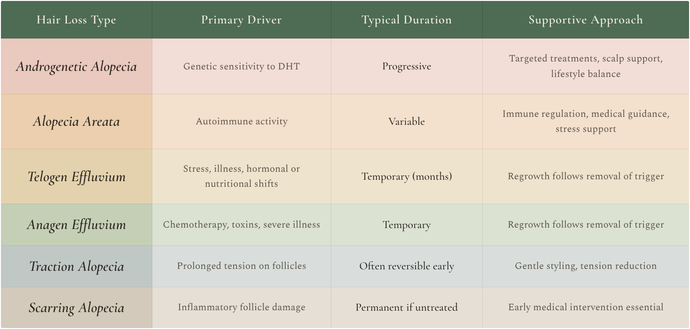
Hair Shedding, Thinning and Loss Are Not the Same
It is easy to assume that all hair concerns mean the same thing, but hair shedding, hair thinning, and hair loss describe different processes.
Hair shedding refers to hair falling from the scalp. This is a normal part of the hair cycle, as old hairs are released to make space for new growth. During periods of stress, illness, hormonal change, or nutritional imbalance, shedding can temporarily increase. Although more hair may be seen in the shower or on a brush, the follicles often remain healthy, and regrowth usually follows.
Hair thinning happens at the follicle level. Instead of hair falling out, the hair follicles gradually shrink, producing strands that become finer and weaker over time. The scalp may appear less dense, even if shedding has not increased noticeably. This type of change is commonly associated with pattern thinning and hormonal sensitivity.
Hair loss is a broader term that simply describes a reduction in visible hair on the scalp. It can result from increased shedding, follicle thinning, breakage, or a combination of these factors. Understanding which process is involved helps guide the most appropriate response.
Because shedding and thinning can both make hair appear less full, they are often mistaken for one another. Recognising the difference allows you to respond with clarity rather than anxiety, and to choose supportive care or professional guidance when needed.
When to See a Professional
While many hair and scalp concerns can be supported through lifestyle changes and gentle care, some situations benefit greatly from professional assessment. If you notice sudden or excessive shedding, patchy hair loss, visible inflammation, pain, or rapid changes in scalp condition, it is worth seeking guidance from a dermatologist, trichologist, or healthcare provider.
Early evaluation allows underlying causes such as hormonal imbalance, autoimmune activity, infection, or nutritional deficiency to be identified and addressed promptly. Timely support not only improves outcomes but can also prevent unnecessary worry and inappropriate self-treatment.
With these foundations in place, we can now turn our attention to the everyday hair challenges that affect many people and explore practical strategies to care for your hair beyond hair loss alone.
Conquering Common Hair Hassles
Not every hair concern involves true hair loss. Everyday issues such as dandruff, dryness, split ends, or tangling can quietly undermine hair strength and appearance if left unaddressed. While these problems are common, they are often manageable with consistent, gentle care and a supportive routine.
By understanding what drives these concerns and responding thoughtfully, you can improve hair condition, reduce damage, and support long-term resilience.
Dandruff Drama
A flaky, itchy scalp may result from fungal imbalance, seborrhoeic dermatitis, product buildup, environmental dryness, or sensitivity to harsh products. Managing dandruff focuses on restoring balance rather than stripping the scalp.
Medicated shampoos containing zinc pyrithione, ketoconazole, or salicylic acid can be helpful when used two to three times per week. Avoid overwashing, as excessive cleansing can disrupt the scalp barrier and worsen irritation. Choose gentle, sulphate-free formulas between treatments to maintain moisture.
Natural support: An apple cider vinegar rinse may help rebalance scalp pH. Mix 1 part vinegar with 3 parts water, apply to the scalp after shampooing, leave for a few minutes, then rinse thoroughly. Use up to two or three times per week if well tolerated.
Fragile Split Ends
Split ends develop when the protective cuticle is compromised by heat-styling, chemical treatments, friction, or environmental exposure. Once split, the hair fibre cannot repair itself.
Regular trims every 6 to 8 weeks remain one of the most effective solutions. Between cuts, protect the ends with nourishing conditioners or lightweight oils that reduce friction and moisture loss.
Simple care ritual: Apply a small amount of warmed coconut oil or argan oil to the ends overnight. Cover hair loosely with a silk scarf or cap, then rinse or cleanse gently in the morning to improve smoothness and softness.
Dryness Desert
Dry hair often reflects a combination of external stressors and internal hydration imbalance. Overwashing, using excessive-heat tools, and a lack of moisture can leave strands brittle and dull.
Restore moisture with weekly hair masks, leave-in conditioners, or serums designed to support hydration without buildup. Adequate fluid intake and healthy fats are equally important. Omega-3-rich foods such as salmon, chia seeds, and walnuts, or high-quality omega-3 supplements, support scalp and strand hydration from within.
Home hydration mask: Mash one ripe avocado with two tablespoons of honey. Apply to damp hair, leave for 20 minutes, then rinse thoroughly to restore softness and elasticity.
Tangle Free Hair
Tangles usually arise from dryness, friction, or inadequate conditioning. Detangle gently, starting at the ends and working upwards, using a wide-tooth comb or a soft brush. Never detangle aggressively, especially when hair is dry or fragile.
Prevent knots by loosely braiding hair before sleep, reducing tight hairstyles, and keeping hair adequately moisturised to minimise friction between strands.
Light detangling spray: Mix 1 tablespoon of coconut oil with 1 teaspoon of argan oil, then add to 1 cup of water. Shake well and mist lightly onto damp hair before detangling, focusing on the mid-lengths and ends.
Natural Shine Booster
Shine often reflects cuticle smoothness and moisture balance. One traditional method used across cultures is fermented rice water.
Soak half a cup of rice in water for 12 to 24 hours, strain the liquid, and apply it to hair after shampooing. Leave for up to 5 minutes, then rinse thoroughly. Use once weekly.
Rice water contains inositol, a compound known to help support the hair shaft and improve light reflection. With consistent use, hair often appears smoother, stronger, and naturally luminous.
Daily Habits for Lifelong Hair Health
Healthy hair is not built overnight or through a single product. It develops through consistent daily choices that support strength, balance, and resilience over time. While treatments and specialised tools can play a supportive role, the foundation of vibrant hair lies in how it is cared for day-to-day.
Hydration, balanced nourishment, and regular moments of rest support hair from within. Gentle scalp cleansing, mindful styling, protective habits, and regular trims help minimise unnecessary stress and breakage. Practised consistently, these simple habits help preserve the integrity of both the scalp and the hair fibre. With time, these habits work quietly in the background, supporting long-term hair health and resilience.
Targeted Nutrition for Common Hair Concerns
A varied, nutrient-rich diet provides the foundation for healthy hair but adjusting nutritional focus can also support specific hair challenges. Food is not only fuel but also targeted biological information for the scalp and follicles. Tailoring intake to your hair’s needs can significantly influence outcomes over time.
Androgenetic Alopecia
Pattern thinning is driven primarily by genetic sensitivity to dihydrotestosterone. Alongside appropriate medical guidance, nutrition can offer a supportive balance. Zinc-rich foods such as pumpkin seeds and lentils support follicle health, while green tea provides EGCG, which may help moderate hormonal signalling. Limiting refined carbohydrates and excess sugar can also help stabilise insulin levels, indirectly supporting hormonal balance.
Telogen Effluvium
Sudden shedding often follows stress, illness, hormonal shifts, or calorie restriction. Recovery focused nutrition is essential. Prioritise adequate protein intake, at least 0.8 grams per kilogram of body weight, alongside iron, zinc, and B complex vitamins. Avoid crash dieting or rapid weight changes, as these can prolong shedding. Even with optimal nutrition, visible regrowth typically takes several months.
Dry, Brittle Hair
When hair lacks moisture and structural support, it becomes fragile and prone to breakage. Healthy fats such as omega-3s from salmon, flaxseeds, and walnuts support the scalp’s lipid barrier, while sufficient protein strengthens the hair shaft. Silica-rich foods like oats, cucumbers, and bell peppers, along with biotin-containing foods such as eggs, seeds, and nuts, further support elasticity and shine.
Oily Scalp and Hair
Excess scalp oil production can be influenced by diet, particularly through blood sugar and hormone regulation. To help balance sebum levels, reduce high-glycemic foods such as white bread and sugary snacks, which may raise IGF-1, and limit dairy if you notice sensitivity. Nutrients like zinc and B vitamins, especially B6 and B2, play an important role in supporting more balanced oil production.
Premature Greying
Although genetics largely determines when hair turns grey, oxidative stress and nutrient deficiencies may accelerate the process. Copper-rich foods such as sesame seeds, cashews, and cocoa support pigment production, while adequate vitamin B12 is essential, especially for those following plant-based diets. Antioxidant-rich foods, including berries, leafy greens, and cruciferous vegetables, help protect pigment cells from oxidative damage.
Autoimmune Hair Loss
When hair loss is driven by immune activity, calming inflammation becomes a priority. Diets rich in colourful fruits and vegetables, omega-3 fats, and anti-inflammatory spices such as turmeric and ginger can support immune balance. Gut health also plays a central role. Some individuals benefit from a temporary elimination approach, such as the Autoimmune Protocol (AIP) Diet, with gradual reintroduction to identify sensitivities.
Postpartum Hair Shedding
Shedding commonly occurs three to six months after childbirth, often due to nutrient depletion and hormonal shifts. Replenishing iron stores is particularly important, alongside adequate protein and B vitamins to support the regrowth cycle. Healthy fats from foods such as olive oil and avocado nourish the scalp. During early motherhood, simple, nutrient-dense meals, soups, smoothies, and nut butters can make nourishment more achievable.
Restricted Diets (Vegan, Allergen-Free, Medical Diets)
When certain food groups are excluded, nutritional compensation becomes essential for hair health.
Vegetarian or vegan diets require careful attention to iron, zinc, vitamin B12, and omega-3 intake, often through fortified foods or supplementation. Gluten-free diets should ensure adequate intake of B vitamins and minerals by emphasising a variety of whole foods. Low-carbohydrate or ketogenic diets must prioritise adequate protein and include nutrient-dense vegetables such as broccoli, kale, and bell peppers.
Age-Related Hair Changes
As we age, digestion and nutrient absorption can decline, increasing the importance of nutrient density. High-quality protein supports density, vitamin B12 is often best supplemented, and antioxidant-rich foods help protect follicles from oxidative stress. Anti-inflammatory foods, including berries, leafy greens, turmeric, and omega-3-rich fats, support strength and shine over time.
Your daily habits and dietary choices shape your hair’s long-term vitality. By aligning consistent care with personalised nutrition, you support not only healthier hair, but overall wellbeing.
Nutrition for Common Hair Concerns
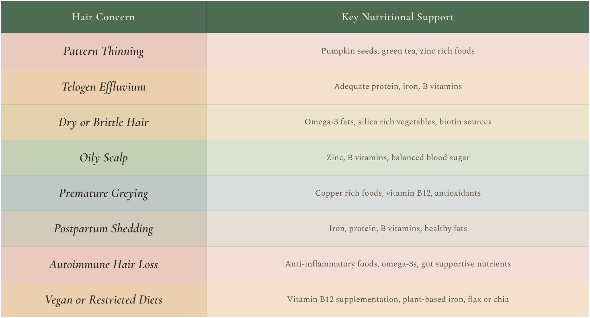
Wear Your Radiance with Confidence
Think of your hair not as a problem to fix, but as a story still unfolding, one where every chapter, including the challenging moments, shapes its character and resilience. Healthier hair is not about perfection; it is about nurturing what is already inherently strong and supporting it with consistent, informed care.
This journey is not a finish line, but a rhythm to settle into. It is the quiet assurance that comes from listening to your body, responding with thoughtfulness, and honouring your hair as an extension of yourself. Transformation does not live solely in the strands, it unfolds in the relationship you build with yourself, as you move from critic to ally.
Release the search for a single miracle solution and embrace the power of cumulative effort. Progress is found in gentle detangling, mindful product choices, nourishing meals, and small, intentional habits. These seemingly ordinary acts become steady expressions of self-respect, gradually reflected in stronger, healthier hair.
Your radiance is earned through patience, awareness, and the courage to honour your unique growth pattern. Step forward, not in pursuit of perfection, but with the confidence of someone who understands how to care for both their hair and themselves. With consistency, compassion, and time, each ritual becomes a quiet celebration of strength, self-discovery, and individuality.
Remember, your hair reflects not only your habits, but also your inner harmony. Nurture both, and your radiance will continue to grow.
Greys Embrace or Prevent, your Choice
Grey hair is a natural part of the ageing process. It occurs when melanin production within the hair follicle gradually slows, leading to strands that appear silver, grey, or white. Traditionally, greying has been associated with maturity, wisdom, and life experience. Yet in recent years, premature greying has become increasingly common, with some individuals noticing silver strands in their teens or early adulthood.
While genetics plays a role, research now shows that greying is influenced by far more than age alone. Internal stress, oxidative strain, and nutritional status all affect the environment that supports healthy pigment production. When this balance is disrupted, pigment loss may occur sooner and progress more quickly than expected.
Your hair does not exist in isolation from the rest of your body. The same biological signals that regulate hormones, immunity, energy, and recovery also influence the hair follicle. When the body is under constant pressure, protective systems begin to weaken. In contrast, a well-nourished body supported by rest, calm, and balance helps preserve cellular vitality, including the cells responsible for hair colour. Greys are also deeply personal. For some, silver strands represent confidence, authenticity, and self-acceptance. For others, they mark a visible change that feels premature or unwanted. If you wish to maintain your hair’s natural colour for longer, you can consider options that support pigment preservation and slow the greying process.
There is no right or wrong response. Choosing to protect your natural colour or choosing to embrace greys with pride are both valid expressions of self-care.
In this chapter, we explore why hair turns grey, what influences the pace of pigment loss, and how biology, lifestyle, and mindset intersect in this process. We will also clarify methods and options for potentially delaying the onset of grey hair, so you can make informed choices.
Whether your goal is prevention, slowing the transition, or embracing silver with confidence, understanding the science helps you make informed, compassionate choices for yourself and your hair.
The Beginning of Greying
Understanding why hair turns grey begins with the biological processes that determine hair colour.
Melanin - The Colour Creator
Hair owes its natural colour to melanin, a pigment produced by specialised cells called melanocytes within the hair follicle. There are two main types of melanin. Eumelanin produces black and brown shades, while pheomelanin creates red and blonde hues.
Your natural hair colour depends on the balance and concentration of these pigments. As we age, melanocyte activity gradually slows and may eventually cease. When melanin production declines, hair loses its colour and appears grey, silver, or white. Premature greying occurs when this process begins earlier than expected, often under the influence of internal biological pressures.
Hydrogen Peroxide - The Body’s Natural Bleach
The body naturally produces small amounts of hydrogen peroxide (H₂O₂) as part of normal cellular activity, including within hair follicles. Under healthy conditions, an enzyme called catalase neutralises hydrogen peroxide by converting it into water and oxygen, preventing it from interfering with melanin.
With ageing, prolonged stress, or nutritional strain, catalase activity may decline. When this happens, hydrogen peroxide accumulates inside the hair follicle and gradually breaks down melanin from within. Research published in 2009 by Wood and colleagues identified this internal bleaching process as a significant contributor to both age-related and stress-related greying.
Oxidative Stress - The Silent Saboteur
Oxidative stress plays a central role in premature greying. It occurs when free radicals build up faster than the body can neutralise them. These unstable molecules are generated during normal metabolism and intensified during periods of stress.
When the nervous system remains in a prolonged fight or flight state, antioxidant defences weaken while free radical production increases. This accelerates oxidative damage within the hair follicle. Over time, repeated cellular stress disrupts melanocyte function, slowing melanin production and leading to earlier pigment loss.
Everyday factors such as chronic emotional stress, pollution, smoking, poor nutrition, and lack of restorative sleep all increase oxidative stress. Supporting the body through rest, nourishment, and nervous system regulation helps restore balance and protect pigment-producing cells from premature decline.
Drivers of Early Greying
Premature greying can feel unsettling, especially when it appears earlier than expected. While greying is a natural part of ageing, the timing and pace at which it unfolds vary widely. This variation reflects an interplay between genetic timing, internal biology, lifestyle influences, and environmental exposure. Rather than a single cause, premature greying results from multiple pressures acting on the cells responsible for pigment production.
Genetic Timing and Cellular Ageing
Genetics establish the framework for when greying is likely to begin. If early greying runs in your family, you may be more inclined to experience it yourself, not because something is malfunctioning, but because your melanocytes follow an inherited biological timeline.
As the body ages, systems responsible for renewal and repair gradually become less efficient, and melanocyte activity follows this same rhythm. When this slowdown occurs earlier than average, greying appears prematurely. In this way, grey hair reflects the body’s internal clock rather than a sudden or isolated failure.
Nutrient Sufficiency and Pigment Resilience
Hair pigmentation relies on a steady supply of nutrients that support cellular renewal, antioxidant defence, and melanin production. When these nutrients are insufficient, melanocytes become more vulnerable to stress and less able to maintain pigment.
Vitamin B12 and folate support DNA synthesis and follicle turnover. Copper activates tyrosinase, the enzyme required for melanin synthesis, while iron supports oxygen delivery to the follicle. Zinc and selenium contribute to antioxidant enzymes that protect pigment cells, and vitamin D helps regulate follicle health. Glutathione also plays a key role by shielding pigment cells from oxidative damage and supporting the enzymes involved in melanin preservation. These nutrients work together. When one or more are depleted, oxidative stress rises, and pigment maintenance weakens.
Prolonged Tension and Strain
Stress and unresolved tension affect more than emotional wellbeing. When the body is under prolonged pressure, cortisol levels remain elevated, and the nervous system remains in a constant state of alert.
Sustained cortisol exposure can interfere with melanocyte stem cells, which replenish pigment within the follicle. Research published in 2020 by Zhang and colleagues showed that prolonged stress can disrupt the normal pigment cycle and accelerate pigment loss. This helps explain why greying often intensifies during extended periods of emotional or physical strain.
Environmental and Lifestyle Exposure
Daily environmental stressors place additional strain on the pigment system. Air pollution and ultraviolet radiation increase free radical production, accelerating oxidative damage and melanin breakdown within the follicle. Smoking compounds this effect by increasing systemic oxidative stress while reducing blood flow to the scalp. These cumulative exposures help explain why greying often progresses gradually rather than appearing overnight.
Health Conditions and Hair Practices
Certain medical conditions can interfere directly with pigment maintenance. Autoimmune disorders may target melanocytes, while thyroid imbalances can alter cellular metabolism within the follicle, affecting colour and hair quality.
Hair practices also play a role. Repeated chemical treatments, particularly bleaching agents that contain hydrogen peroxide, increase oxidative strain and accelerate melanin breakdown. Excessive heat-styling and harsh techniques disrupt the scalp’s natural balance, making pigment preservation more difficult over time.
Hydrogen Peroxide as the Shared Pathway
Many influences on premature greying converge through a common biological mechanism. The body naturally produces small amounts of hydrogen peroxide as a byproduct of cellular metabolism. Under healthy conditions, this compound is neutralised by the enzyme catalase, which converts it into water and oxygen.
With ageing, prolonged stress, nutritional depletion, oxidative overload, and repeated chemical exposure, catalase activity can decline. When this happens, hydrogen peroxide accumulates inside the hair follicle and acts as an internal bleaching agent, gradually breaking down melanin from within. Research published in 2009 by Wood and colleagues identified this process as a significant contributor to both age-related and stress-related greying.
Seen through this lens, premature greying becomes clearer. Genetics, tension, nutrition, environment, and hair practices do not act independently. Together, they shape the internal environment that determines whether pigment cells are supported or pushed toward earlier decline. Supporting antioxidant defences, nervous system balance, and nutrient sufficiency helps protect this environment and preserve hair pigmentation for longer.
Supporting Melanin and Slowing Down Greying
Completely reversing grey hair is difficult once pigment-producing cells have stopped functioning. However, it is possible to support melanocyte health, slow the greying process, and protect remaining pigment through targeted lifestyle and scalp-focused strategies. These approaches aim to reduce oxidative stress, nourish the body, and create an internal environment that supports melanin production.
1. Herbal and Natural Remedies
Across Ayurvedic and Eastern traditions, certain herbs have long been used to preserve natural hair colour and strengthen the scalp environment.
- Amla (Indian gooseberry) is rich in vitamin C and antioxidants and is traditionally used to support follicle vitality and pigment health.
- Bhringraj, often referred to as the king of hair herbs, is used to nourish the scalp and delay visible greying.
- Black sesame seeds are traditionally believed to support darker hair and provide minerals and healthy fats essential for follicle function.
- Curry leaves are used as a hair tonic to strengthen roots and support natural pigmentation.
These herbs can be consumed, infused into oils, or applied topically as masks or treatments, depending on preference and tolerance.
2. Copper Rich Foods
Copper is essential for melanin synthesis because it activates tyrosinase, the enzyme that initiates pigment production. Supporting copper intake through food helps maintain melanin levels and protect hair colour.
- Shellfish such as oysters
- Lentils and chickpeas
- Cashews and almonds
- Dark leafy greens like spinach and kale
- Small amounts of dark chocolate
Regular inclusion of these foods may help correct subtle deficiencies linked to premature greying.
3. Antioxidant and Glutathione Support
Oxidative stress plays a central role in pigment loss. Glutathione, often called the body’s master antioxidant, helps neutralise free radicals, supports catalase activity, and protects melanocytes from oxidative damage.
Maintaining glutathione levels through nutrient-dense foods such as spinach, avocado, and asparagus, or through precursors like NAC (N acetylcysteine), may support pigment preservation. Combining glutathione support with antioxidants such as vitamin C, vitamin E, and zinc enhances its protective effect.
4. Hair Oils and Scalp Massage
Healthy pigment function depends on good circulation and a balanced scalp environment. A gentle scalp massage increases blood flow and nutrient delivery to hair follicles, and specific oils can enhance these benefits.
- Rosemary oil supports circulation and follicle vitality.
- Peppermint oil stimulates blood flow and energises the scalp.
- Onion extract or juice contains sulfur compounds and catalase, which may help reduce hydrogen peroxide buildup within follicles.
Applying oils once or twice weekly with a calm, intentional massage encourages both follicle nourishment and nervous system relaxation.
5. Hydrolysed Protein Treatments
While pigment loss originates within the follicle, strong hair structure supports overall hair appearance and resilience. Hydrolysed proteins such as keratin or wheat protein reinforce the hair cuticle, reduce breakage, and help maintain shine and strength. Protein based masks and conditioners do not reverse greys, but they protect hair quality and support a healthy scalp environment.
Can Grey Hair Be Reversed?
Few questions in hair science spark as much curiosity, hope, and debate as this one. For many years, the prevailing belief was simple: once hair turns grey, the change is permanent. However, emerging research is beginning to challenge that assumption, suggesting that in certain situations, greying may not always be irreversible.
Grey hair develops when melanocytes, the pigment-producing cells within the hair follicle, reduce activity or disappear altogether. If these cells are fully depleted, colour loss is permanent. However, when melanocytes are still present but dormant or weakened, growing evidence suggests they may be reactivated under the right conditions.
Research indicates that oxidative stress, nutrient deficiencies, and prolonged cortisol elevation can suppress melanocyte function. When these pressures are reduced through improved nutrition, antioxidant support, and stress regulation, pigment production may partially recover. Antioxidants such as glutathione, vitamin C, and vitamin E help protect pigment cells, while minerals support the enzymes required for melanin synthesis.
A notable 2021 study from Columbia University documented individual hair strands that lost pigment during periods of intense stress and later regained colour once stress levels were reduced. This finding suggests that hair colour can reflect changes in the body’s internal environment, sometimes even within the same strand of hair.
At the same time, scientific research continues to explore potential interventions, including catalase enzyme support to reduce hydrogen peroxide buildup, stem cellbased approaches to replenish melanocytes, and topical formulations and nutraceuticals designed to protect pigment cells.
Genetic and age-related greying remains the most difficult to reverse, but growing evidence shows that some cases of grey hair are more responsive than once believed. Report s of colour returning through improved diet, antioxidant supplementation, or lifestyle changes highlight the dynamic nature of hair biology.
So, can grey hair be reversed? The most honest answer is sometimes, and only under specific conditions. If melanocytes are still present, holistic strategies may help revive pigment production. If they are no longer active, the focus shifts toward prevention, hair health, and embracing silver strands as part of your evolving story.
Grey Hair Prevention and Reversal Toolkit
A concise guide to support melanin, protect pigment, and care for your hair at any stage.
1. Eat to Support Melanin
Prioritise nutrients that support pigment and cellular renewal, including vitamin B12, iron, copper, zinc, folate, and vitamin B6. Emphasise antioxidant rich foods such as berries, leafy greens, and green tea, alongside glutathione supporting foods like spinach, asparagus, avocado, and broccoli.
2. Support Hydrogen Peroxide Neutralisation
Help the body manage its natural hydrogen peroxide production by supporting catalase activity through foods such as broccoli, kale, garlic, and onions. Topical onion extract may offer additional scalp support. Antioxidant-rich supplements such as Glutathione, ALA, NAC, or astaxanthin may help, always seek professional guidance first.
3. Strengthen Antioxidant Defences
Limit oxidative stress by eating a wide variety of colourful fruits and vegetables, as well as healthy fats like olive oil, walnuts, and chia seeds. Traditional antioxidant herbs such as amla, turmeric, and ginger may provide additional support.
4. Master Your Stress Response
Protect pigment by reducing prolonged stress and tension. Practices such as meditation, breathing exercises, prayer, nature exposure, journaling, restorative sleep, and regular movement all help shift the body into repair mode.
5. Scalp-care for Pigment Preservation
Encourage healthy circulation and follicle function with a gentle scalp massage once or twice weekly. Use nourishing oils such as rosemary, bhringraj, or amla, and exfoliate lightly to reduce buildup.
6. Choose Pigment Friendly Hair Care
Use gentle, sulfate-free shampoos, minimise heat-styling, and avoid harsh chemical treatments where possible. When colouring, consider gentler, plant-based alternatives and always protect hair from excessive heat.
7. Reduce Toxin Exposure
Reduce external oxidative load by protecting hair from intense sun, rinsing after swimming, avoiding smoke exposure, and choosing cleaner personal care products when available.
Anti-Grey Nutrition at a Glance
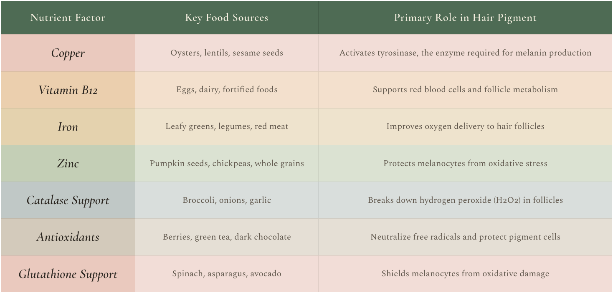
Embrace or Restore, Your Grey, Your Choice
Grey hair is not a flaw. It is a natural reflection of your body’s rhythm and evolution. As melanocytes gradually slow pigment production, your hair begins to tell a new story shaped by time, adaptation, and resilience.
For some, embracing silver strands is an act of self-love and authenticity, a way to honour freedom, wisdom, and confidence at every stage of life. For others, restoring colour brings a renewed sense of vitality and alignment, reflecting how vibrant they still feel within. Both choices are deeply personal, and both deserve respect.
Across cultures and generations, grey hair has been celebrated in many ways, worn with pride, styled creatively, or coloured with intention. What truly matters is not whether you choose to reverse, prevent, or celebrate your greys, but how you care for yourself along the way. The rituals you practise, the nourishment you provide, the rest you allow, and the calm you cultivate speak to your body in ways no treatment ever could.
Your hair is more than pigment. It is a living extension of your health, identity, and inner world. When you treat it with nourishment, mindfulness, and compassion, every gesture of care, from scalp massage to mindful breathing, signals safety to the nervous system and balance to the body. In this state, hair in any shade expresses vitality rather than depletion.
Whether your strands shimmer silver, gleam in their natural hue, or glow with a colour that feels uniquely yours, let them reflect strength rather than stress. Let them tell a story of growth rather than loss. In the end, the choice is yours to embrace, enhance, or evolve. Your beauty is not fading. It is transforming, and every shade, every stage, every strand is part of the masterpiece that is you.
Hair Colouring doing it the Right Way
Hair colouring is not just about changing your appearance. It is an art form, a personal statement, and often a reflection of how you feel. Whether you are brightening your look with sun-kissed highlights or choosing a bold shift with a ruby red mane, colouring your hair can be one of the most empowering beauty rituals.
Behind the transformation, however, there is often a hidden cost. Many commercial dyes contain harsh chemicals that do more than alter your shade. They can strip hair of moisture, weaken its natural structure, and irritate the scalp. Over time, frequent dyeing, particularly with permanent or lightening formulas, may leave hair dry, brittle, and lacking vitality.
The reassuring truth is that you do not have to choose between hair health and self-expression. With a mindful approach, you can enjoy vibrant, glossy colour while keeping your hair strong, nourished, and resilient.
In this chapter, we explore how hair dye works, the risks associated with conventional colouring, and gentler alternatives, both professional and natural, that help you achieve beautiful results without compromising hair health.
To colour safely, it helps to understand what happens beneath the surface of each strand. Let us begin with the science behind hair dye, so you can make confident, informed choices and create the colour you love.
How Hair Colouring Works
By now, you know that hair is far more than simple strands. Each fibre is a layered structure designed to protect, strengthen, and hold colour. When you colour your hair, especially with chemical dyes, these layers undergo deliberate changes that determine how the colour develops, how long it lasts, and how your hair feels afterwards.
Understanding this process allows you to choose colouring methods that align with your hair goals and long-term health.
Permanent Dyes - The Chemical Architects
Permanent dyes create lasting colour by entering the deepest layer of the hair and rebuilding pigment from within. This is why they are effective for dramatic colour changes and full grey coverage.
How they work
- Ammonia raises the cuticle layer, similar to lifting roof tiles, allowing access to the inner cortex.
- Hydrogen peroxide breaks down melanin, your natural pigment, creating space for new colour.
- Oxidative colour molecules such as PPD or PTD form inside the cortex and lock in long-lasting colour.
The process: The cuticle opens, natural pigment is lightened or removed, and new colour molecules bond within the cortex.
Pros: Long-lasting colour that typically holds for six to eight weeks or longer, full grey coverage, and suitability for significant shade changes such as dark to light.
Cons: May weaken the hair's protein structure, increase dryness and brittleness, and cause scalp sensitivity or allergic reactions.
Best for: Those seeking bold transformations or full grey coverage, with a commitment to ongoing conditioning, bond repair, and scalp-care.
Semi-Permanent Dyes – The Temporary Tenants
Semi-permanent dyes sit closer to the hair surface and do not permanently alter its internal structure. Because they avoid ammonia and peroxide, they are considered a gentler option for enhancing colour while minimising structural stress.
The process: These formulas use mildly acidic ingredients that slightly loosen the cuticle, allowing pigment to cling to the outer layers of the hair rather than penetrating the cortex. The colour gradually fades with washing, typically over four to six weeks.
Pros: Semi-permanent dyes cause minimal structural stress and are ideal for enhancing natural tone, adding richness, or refreshing faded colour. They offer flexibility and low commitment, making them easy to change or adjust.
Cons: They cannot lighten natural hair and may fade unevenly on porous or previously coloured strands.
Best for: Refreshing dull colour, blending early greys to around 30%, or experimenting with new shades before committing to a permanent change.
Temporary Dyes – The Weekend Guests
Temporary dyes provide instant colour without altering the hair’s structure. They are purely cosmetic and designed for short-term use.
The process: Pigments sit on the surface of the hair without opening the cuticle or interacting with the cortex. As a result, colour washes out quickly, usually after one to three shampoos.
Pros: Temporary dyes cause no structural damage and deliver immediate visual impact. They are easy to apply and remove, making them ideal for playful or one-off colour moments.
Cons: Results are very short lived, may stain light or porous hair, and are often less visible on dark hair unless it has been pre-lightened.
Best for: Special occasions, creative experimentation, festivals, or toning treatments with purple or blue pigments to reduce brassiness.
Natural Colouring Methods – The Herbal Artists
Natural colouring methods rely on plant-based pigments to gently coat the hair. Beyond adding colour, they often enhance shine and texture over time.
The process: Botanical ingredients such as henna, indigo, coffee, tea, and other plant infusions coat the hair shaft rather than altering its internal structure. With repeated applications, the colour builds gradually and deepens over time.
Pros: Natural dyes are generally gentle on both hair and scalp. They can improve shine, add a sense of thickness, and are safe for more frequent use.
Cons: The colour range is limited, results can vary depending on previous colouring history, and some plant dyes can be difficult to remove or recoloured later.
Best for: Those seeking chemical free colouring, subtle darkening, enhanced shine, or supportive options for sensitive scalps.
Hair colouring becomes far safer and more satisfying when you understand what your chosen method is doing beneath the surface. With this knowledge, you can colour with intention rather than habit, choosing techniques that respect both your style and your hair’s biological integrity.
Hair Dye Types at a Glance
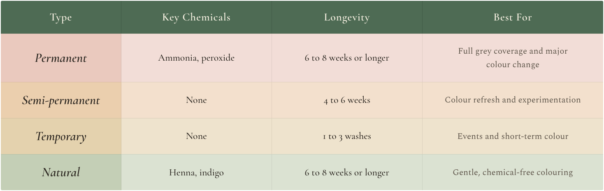
The Dark Side of Chemical Dye to Watch
Not all that glitters is gold, especially when it comes to hair dye. Many conventional hair dyes rely on powerful chemical agents to deliver fast, dramatic results. While effective, frequent exposure to these ingredients can compromise hair strength, scalp comfort, and long-term hair health.
Understanding what is inside your dye allows you to make safer, more informed choices. Below are some of the most commonly used ingredients in traditional hair colouring, along with their purpose and potential concerns.
Ammonia
Role: Opens the hair cuticle so colour molecules can penetrate deep into the cortex.
Risk: Strips the hair of its natural oils, leaving it dry, dull, and fragile like a desert with no rain.
Paraphenylenediamine (PPD)
Role: A strong pigment widely used in permanent dyes, particularly dark shades.
Risk: One of the most common cosmetic allergens. Reactions may include itching, redness, swelling, or blistering. In rare cases, severe allergic reactions have been reported.
Resorcinol
Role: Helps stabilise colour and improve dye performance.
Risk: Classified as a potential endocrine disruptor, meaning it may interfere with hormone balance when exposure is repeated over time.
Hydrogen Peroxide
Role: Acts as a bleaching agent, breaking down natural pigment so new colour can develop.
Risk: Gradually weakens the hair's protein structure, increasing porosity, dryness, and susceptibility to breakage.
Synthetic Fragrances
Role: Added to mask the strong chemical scent of dye formulas.
Risk: Often composed of undisclosed compounds that may irritate sensitive scalps or trigger allergic reactions, even when marketed under appealing names like "Fresh Rain" or "Summer Blossom."
This does not mean that hair colouring needs to be avoided entirely. Rather, it highlights why frequency, formulation choice, scalp health, and aftercare matter. Later in this chapter, we will explore gentler colouring alternatives and practical ways to minimise exposure while still enjoying the colour you love.
Dye Chemicals to Be Mindful
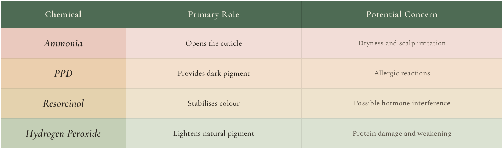
When Colour Turns Costly - Risks of Frequent Dyeing
Dyeing your hair occasionally is not usually a cause for concern. However, when colouring becomes a frequent habit, particularly with chemical-based formulas, the cumulative effects can strain both the hair and scalp. The impact of hair dye is shaped not only by the formula itself, but also by how often your hair and scalp are exposed to it.
Below are some of the most common consequences of repeated colouring to be mindful of.
Progressive Hair Damage
Regular exposure to ingredients such as ammonia and hydrogen peroxide gradually strips the hair of its natural protective oils. Over time, this weakens the internal structure of the strand, leading to dryness, loss of elasticity, split ends, and increased breakage.
Scalp Sensitivity and Irritation
The scalp is delicate skin. Repeated colouring can compromise its barrier function, resulting in redness, itching, inflammation, or a burning sensation during or after treatment. Over time, this irritation may contribute to a disrupted scalp environment that struggles to support healthy growth.
Increased Risk of Allergic Reactions
Frequent exposure to common dye pigments, particularly PPD, increases the likelihood of sensitisation. Reactions may begin mildly, with itching or rashes, but can escalate with repeated use. In rare cases, more severe responses such as swelling or blistering can occur.
Potential Impact on Natural Pigment Production
Some evidence suggests that repeated chemical colouring may place stress on melanocytes, the cells responsible for producing hair pigment. While greying is largely genetic, excessive chemical exposure may contribute to earlier or more rapid colour loss in some individuals.
Long-Term Health Considerations
Research continues to explore possible links between prolonged exposure to certain hair dye chemicals and broader health effects. Ingredients such as PPD and resorcinol have been examined for their potential hormonal or toxic impact, particularly when exposure is frequent and prolonged. While conclusions remain mixed, moderation and informed choice are widely recommended.
Frequent colouring does not mean colouring must be avoided altogether. Rather, it highlights the importance of spacing treatments, choosing gentler formulations, supporting scalp health, and prioritising restorative care. In the following sections, we will explore safer colouring strategies and alternatives that allow you to express your style while protecting your hair’s long-term vitality.
Gentle Revolution for Safer Alternatives
You do not have to choose between vibrant colour and healthy hair. If expressing yourself through colour matters to you, yet you wish to minimise irritation, dryness, or long-term damage, a gentler approach is available. From smarter formulations to plant-powered options and protective salon strategies, colouring with care is both possible and empowering.
The following guidance focuses on principles first, with brand examples included only to help readers recognise commonly available options. Formulations may change over time, so ingredient awareness remains essential.
Ammonia Free Dyes
Traditional dyes often rely on ammonia to open the hair cuticle. While effective, this process can be drying and irritating, particularly with frequent use. Ammonia-free formulations replace ammonia with gentler alkaline agents such as ethanolamine, which open the cuticle more gradually.
Why this option is gentler
- Less drying than conventional permanent dyes.
- Better suited to sensitive scalps.
- More appropriate for frequent touch-ups and long-term use.
Examples: Ammonia-free colour ranges from brands such as Herbatint, Naturtint, and Tints of Nature, which are widely used for their lower irritation potential and inclusion of botanical supporting ingredients.
Plant Powered Colour
Nature has offered hair colouring solutions for centuries. Plant-based dyes coat the hair shaft rather than altering its internal structure, often enhancing shine and texture over time.
- Henna: One of the oldest natural dyes, delivering warm copper to deep red tones. When combined with indigo, it can produce richer browns or blacks.
- Indigo: Used alongside henna to deepen colour and achieve darker shades.
- Cassia: Sometimes called neutral henna. Adds golden warmth and shine without a dramatic colour change.
- Chamomile tea: Gradually brightens and softens blonde or light brown hair.
- Coffee rinses: Enhance brunette shades with subtle warmth. Best mixed with conditioner for even application.
- Beet juice: Adds a soft pink or red tint to lighter hair tones.
Salon Smarts Colouring with Protection
A skilled colourist can achieve beautiful results while safeguarding your hair’s integrity by using thoughtful techniques and modern protective tools.
- Strand testing ensures compatibility before full application.
- Customised formulations allow control over strength, tone, and processing time.
- Bond-building treatments help protect internal hair structure during chemical colouring.
Bond-protecting technologies used in salons, such as those from Olaplex, K18, or Wellaplex, support the hair’s internal bonds and reduce breakage when colour is applied thoughtfully.
DIY Wisdom for Colour Treated Hair
Whether you are colouring at home or maintaining salon results, preparation and aftercare play an important role in how your hair responds to colour.
Before colouring: Nourish the hair a few days in advance with coconut oil, an avocado mask, or aloe vera gel to help strengthen the strands and reduce dryness. Avoid colouring freshly washed hair, as natural oils provide a protective buffer for the scalp.
During touch-ups: Apply dye only to new growth. Repeatedly colouring over previously treated lengths can accelerate dryness, dullness, and internal stress to the hair fibre.
After colouring: Use sulphate-free shampoos to help protect colour vibrancy and reduce fading. Rinse with cool water to help seal the cuticle, then deep condition weekly to restore hydration and elasticity.
Scalp protection: Before applying colour, smooth a thin layer of shea butter, aloe vera, or petroleum jelly around the hairline and ears to prevent staining and reduce irritation.
Personalised Shade Matching Made Simple with AI
Choosing the right hair colour has always been part science, part intuition. Will this shade enhance your complexion or drain it? Will a bold copper energise your features, or would a softer tone feel more natural? Thanks to modern technology, you no longer need to rely on guesswork alone.
AI powered tools now allow you to explore colour confidently before committing to dye. From virtual previews to personalised recommendations, these tools help you make smarter, more informed choices while protecting your hair from unnecessary experimentation.
Virtual Try-On Tools
These augmented reality (AR) apps use your phone’s camera and facial recognition technology to preview hair colours in real time. These platforms can:
- Analyse your skin tone, eye colour, and facial features.
- Suggest shades that complement your undertones and style goals, such as warm, cool, or neutral.
- Instantly overlay shades so you can see how each colour suits you.
Popular Apps to Try
- L'Oréal Style My Hair
- YouCam Makeup
- Garnier Virtual Shade Selector
- ModiFace
It functions like a virtual dressing room for your hair, allowing you to explore safely and creatively.
AI-Powered Shade Match Quizzes
If you are unsure about undertones, maintenance level, or how bold to go, AI driven quizzes can be incredibly useful. These tools typically assess:
- Your natural hair colour and texture.
- Skin undertones and contrast level.
- Lifestyle habits such as washing frequency and heat-styling.
- Whether you prefer subtle changes or dramatic transformations.
Based on your answers, the AI suggests shades and colouring approaches aligned with both your appearance and your routine, much like a virtual colour consultant.
AI in Salons and Custom Colour Kits
Artificial intelligence is not limited to apps. Some salons and at home colour services now use advanced analysis to personalise results. These services may include:
- Scanning hair to assess porosity, condition, and existing colour.
- Creating custom blended formulas.
- Recommending aftercare, toners, and maintenance routines.
Brands such as eSalon and Function of Beauty are examples of companies that use data-driven personalisation to offer tailored colour experiences at home.
More recently, smart application tools such as L’Oréal Colorsonic reflect a broader shift toward more precise, controlled home colouring helping reduce user error.
Where Technology Meets Intuition
AI is a guide, not a rulebook. These tools are designed to inform, inspire, and reduce trial and error, but they cannot replace how you want to feel in your hair.
Use technology to narrow your options and avoid costly mistakes. Then choose the shade that makes you feel confident, radiant, and aligned with yourself. The most flattering colour is not decided by algorithms alone, it is the one you enjoy wearing every day.
Colour with Confidence
Hair colour is more than a cosmetic choice. It can be a statement, a mood shift, or the beginning of a new chapter. Whether you are blending greys, craving transformation, or adding depth and dimension, your colour should reflect who you are, not undermine your health or confidence.
By understanding how hair colouring works, recognising the risks associated with conventional dyes, and exploring safer and more innovative alternatives, you now have the knowledge to make choices that support both your personal style and your hair’s long-term wellbeing.
When choosing your next shade, whether it is sun-kissed blonde, deep espresso brown, a playful pastel, or a tone suggested by technology, approach the decision with intention. Choose formulas that protect rather than strip. Care for coloured hair as something valuable. Trust your instincts about what feels most authentic to you.
Hair colour does not need to be about damage control. It should be an expression of confidence, creativity, and self-respect. The right shade enhances your natural glow, celebrates individuality, and keeps your hair strong, vibrant, and resilient. Choose a colour that lifts you. Your hair deserves it, and so do you.
Advance Hair Care
and Cultural Insights
Exploring Advanced Hair Treatments
If you have embraced holistic hair care but feel your progress has slowed or plateaued, exploring advanced hair treatments may offer additional support. Today’s market offers a wide range of clinical and at-home options, each designed to target hair concerns from a different angle. Among the most established and widely researched are treatments such as platelet-rich plasma (PRP), microneedling, low-level laser or red-light therapy, and other dermatological interventions that support hair follicles at a deeper cellular level.
These approaches can be particularly helpful for persistent thinning, hormonal or genetic hair loss, or age-related changes. They do not replace holistic care but work best as complementary tools that build upon the foundation you have already established.
Professional guidance can bring clarity and confidence. A trichologist or dermatologist can assess scalp health, identify underlying contributors, and help tailor a treatment plan that aligns with your biology, lifestyle, and goals.
While advanced treatments can enhance progress, no single therapy works in isolation. Lasting results come from integration, combining science with consistent nourishment, restorative rest, stress regulation, and mindful daily care.
Ultimately, clinical tools may accelerate change, but it is your ongoing choices that sustain it. When science and self-care work together, hair health becomes not just achievable, but lasting.
Advanced Hair Treatment Overview
Advanced hair treatments span a wide spectrum, from supportive care that improves hair quality to medical and cosmetic solutions designed for more complex concerns. These approaches can be broadly grouped into treatments that strengthen and refine the hair fibre, therapies that address hair loss at its biological root, and non-surgical options that enhance appearance. Understanding where each fits allows you to navigate this landscape with greater clarity, intention, and realistic expectations.
1. Treatments for Damage, Breakage, and Frizz
These treatments focus on improving strength, smoothness, and manageability rather than stimulating new hair growth. They are particularly well suited to hair that feels dry, fragile, over-processed, or difficult to manage.
Keratin Treatments
Smooth frizz and reduce flyaways by sealing a protein-rich formula into the hair using heat, typically with flat irons. Results usually last two to four months, depending on hair type and aftercare. Formaldehyde-free formulas are preferred, as some treatments may release irritating vapours during heat activation.
Bond-building Treatments
Repair internal damage caused by bleaching, colouring, or heat-styling by reconnecting broken disulfide bonds within the hair shaft. These treatments restore strength and elasticity and are particularly beneficial for chemically treated or weakened hair. They can be used during or after salon services for added protection and repair.
2. Medical Interventions for Hair Loss
Hair loss may result from hormonal changes, genetics, autoimmune conditions, inflammation, or environmental stressors. Medical interventions aim to target these underlying mechanisms and support follicle function. Options range from minimally invasive therapies to surgical procedures.
Platelet-Rich Plasma (PRP) Therapy
Among the most widely used minimally invasive treatments, platelet-rich plasma therapy uses concentrated platelets from your own blood, injected into the scalp to stimulate dormant follicles. It is commonly used for early-stage androgenetic alopecia or telogen effluvium and is considered a low-risk, biologically supportive approach, though individual results vary. PRP is typically delivered as a short series of three to six initial sessions, followed by periodic maintenance every four to six months, with protocols tailored by a qualified practitioner.
Low-Level Laser Therapy (LLLT)
Employs red or near-infrared light to stimulate blood flow and cellular activity within hair follicles. It is available in clinical settings and as home-use devices such as caps, helmets, or combs. LLLT is non-invasive and painless, but requires consistent, long-term use to achieve visible results. Depending on the device, treatment is typically used three to seven times per week, with at least six months needed to notice a meaningful change.
Microneedling
Creates controlled micro-injuries in the scalp using fine needles, activating natural healing pathways, stimulating collagen production, and improving absorption of topical treatments. It is often combined with hair growth serums, oils, platelet-rich plasma, or minoxidil applied after an appropriate recovery period.
Recommended needle depths are as follows:
0.25 mm: Enhances topical product absorption and may be used one to two times per week
0.5 mm: Stimulates hair follicles and supports overall scalp health, typically used every one to two weeks
1.0 mm: Provides deeper stimulation for more advanced cases and should be limited to once every three to four weeks
3. Immune-Related Treatments
These approaches are primarily used for autoimmune hair loss conditions such as alopecia areata.
Steroid Injections
Suppress autoimmune inflammation through direct scalp injections and are most effective for small, localised patches of hair loss. They are not suitable for widespread thinning.
Steroid Creams
Topical corticosteroids may be prescribed for mild patchy hair loss or scalp inflammation, but tend to be less effective for deeper follicle involvement.
Topical Immunotherapy (such as DPCP)
Induces a controlled allergic response on the scalp to redirect immune activity. This treatment is reserved for chronic or extensive alopecia areata and must be administered under specialist dermatological care.
Oral Immunosuppressants and JAK Inhibitors
Medications such as Baricitinib, Tofacitinib, or Ruxolitinib work by interrupting immune pathways that damage hair follicles. These are typically considered in severe cases, including alopecia totalis or universalis, and require close medical supervision due to systemic risks.
4. Growth-Stimulating Treatments
These treatments are designed to encourage hair growth by supporting follicle activity and prolonging the active growth phase. They are most effective in early to moderate hair thinning and require consistency over time for sustained results.
Minoxidil (Topical and Oral)
Works by extending the hair growth phase and increasing follicle size. Available as topical solutions or foams, and in some cases as oral prescriptions, it is most effective for early to moderate androgenetic alopecia. Consistent, ongoing use is essential, and temporary shedding may occur at the start of treatment.
5. Surgical and Experimental Options
These approaches are intended for more advanced or persistent hair loss and are typically considered after conservative and medical treatments. They involve higher levels of intervention and require careful evaluation, realistic expectations, and specialist oversight.
Hair Transplant Surgery
Involves relocating hair follicles from donor areas with dense hair to thinning regions. When performed by experienced surgeons, results can be natural-looking and long-lasting, though careful candidate selection is crucial.
Stem Cell Therapy (Emerging)
Aims to stimulate dormant follicles using regenerative cells or growth factors. Approaches may include adipose-derived cells, bone marrow-derived cells, hair follicle stem cell expansion, or growth-factor-only conditioned media. These treatments remain experimental and are currently limited to specialised clinics or research settings. They are not used to repair hair fibres or treat frizz.
6. Cosmetic and Non-Surgical Solutions
These options do not stimulate biological regrowth but can significantly improve the appearance of thinning or hair loss.
Scalp Micropigmentation (SMP)
Creates the illusion of hair follicles using fine pigment, making it suitable for diffuse thinning, scar camouflage, or closely cropped styles. Periodic touch-ups are required.
Hair Systems and Toppers
Custom-fitted wigs or partial hairpieces made from human or synthetic hair provide immediate, non-invasive coverage for extensive hair loss.
Head Coverings
Scarves, turbans, hijabs, hats, and wraps offer practical, cultural, and aesthetic coverage, made from breathable fabrics suited to different seasons and preferences.
Hair Extensions
Temporary or semi-permanent additions, such as clip-ins or integrated systems, can add volume or length when selected and applied with care, without permanent commitment.
Matching the Right Treatment to Your Needs
From smoothing and repair-focused treatments to regenerative and medical therapies, today’s options allow you to personalise your hair journey more than ever before. Whether you are managing frizz, repairing damage, or addressing hair loss, solutions range from gentle at-home care to advanced clinical support.
Knowledge is a powerful starting point, but progress happens when the right treatment is paired with consistency, supportive lifestyle habits, and appropriate professional guidance. A qualified specialist can help uncover root causes, assess scalp health, and design a plan that aligns with both your goals and your biology.
Remember, your hair health does not exist in isolation. It is closely connected to your overall wellbeing and often reflects how supported your body feels. When treated with patience, care, and respect, your hair responds with greater strength, resilience, and vitality.
1. Hair Treatments for Specific Concerns
Not all treatments are created equal. The right approach depends on your hair’s current condition, your desired outcome, and whether you're addressing a cosmetic issue or an underlying health concern. Below is a categorised overview of popular treatments, both clinical and natural, organised by their primary function.
Dryness, Dullness and Damage
These treatments target brittle, lacklustre strands and help replenish lost moisture, strengthen the hair shaft, and improve shine.
- Deep Conditioning Treatments: Intensive masks or salon treatments that restore hydration and elasticity to dry, brittle hair. Often infused with proteins, oils, and humectants.
- Hot Oil Treatments: Uses heated oils (like coconut, argan, or olive) to deeply penetrate and nourish hair, sealing in moisture and enhancing shine.
- Hair Botox: A deep-conditioning treatment (typically chemical-free) that fills in damaged areas of the hair shaft, making hair appear smoother, fuller, and glossier.
Scalp Health and Hair Growth Stimulation
Healthy hair starts with a healthy scalp. These treatments aim to detoxify, rejuvenate, or stimulate the scalp to support new growth and prevent further loss.
- Scalp Detox: Exfoliating and clarifying treatments (clay masks, scrubs, or apple cider vinegar rinses) remove buildup, excess oil, and dead skin.
- Microneedling/Dermarolling: Creates micro-injuries in the scalp to stimulate blood flow and improve absorption of topical treatments like Minoxidil or growth serums.
- Light Therapy (UV or Red-Light Therapy): Low-level laser or UV light stimulates hair follicles by increasing circulation and cellular energy, promoting regrowth in thinning areas.
Styling, Appearance, Longevity Enhancers
These treatments improve the look and manageability of hair, especially for those seeking smoother, sleeker, or fuller-looking results.
- Brazilian Blowout: Semi-permanent smoothing treatment that tames frizz and adds shine by sealing the hair cuticle. Ideal for humid climates or coarse hair types.
- Permanent Makeup (Scalp Micropigmentation): Cosmetic tattooing technique used to create the appearance of a fuller hairline or fill in sparse areas of the scalp and eyebrows.
2. Choosing the Right Treatment
When deciding on a treatment, consider the following factors to ensure it aligns with your hair goals and overall wellness plan:
Hair Type and Condition
Evaluate your hair’s unique needs. Is it dry, thinning, coarse, over-processed, or chemically treated? Treatments are most effective when tailored to the specific condition of your hair and scalp.
Desired Outcome
Clarify what you want to achieve before committing to a treatment. Are you seeking cosmetic improvements, such as smoother texture and shine, or addressing underlying concerns like hair loss, inflammation, or ongoing breakage?
Time, commitment, and lifestyle fit
Some treatments require multiple sessions and ongoing maintenance, while others integrate easily into a home routine. Choosing an option that realistically fits your lifestyle supports long-term consistency and better results.
Professional guidance
A trichologist or dermatologist can evaluate scalp health, identify contributing factors, and recommend a personalised plan that prioritises safety, effectiveness, and sustainability.
3. The True Cost of Hair Restoration
When exploring hair restoration options, it is helpful to look beyond surface appeal and consider what each treatment truly asks of you over time. Sustainable progress comes from understanding not just what a treatment does, but how it fits into your life, routines, and long-term goals.
Some approaches require ongoing consistency, while others involve a concentrated period of intervention followed by maintenance. Neither is inherently better, the right choice is the one you can realistically support.
4. Ongoing Care vs Targeted Interventions
Some treatments rely on regular use to maintain results. Topical applications and medications often work effectively while in use, but results may gradually fade if stopped. These options suit those who are comfortable with routine-based care and long-term consistency.
Other treatments involve a series of sessions or a one-off intervention designed to stimulate change over a longer period. These approaches may feel more intensive initially but can sometimes reduce daily maintenance, especially when paired with supportive lifestyle habits.
5. Medical Coverage and Clinical Context
Most hair treatments are considered cosmetic and are not routinely covered by insurance. In certain medical contexts, such as autoimmune-related hair loss or treatment-related shedding, coverage may vary. In all cases, professional guidance is essential for clarity, safety, and appropriate expectations.
6. Factors Beyond Price
Cost is only one part of the decision. True value lies in how well a treatment fits your body, lifestyle, and goals. Consider the time commitment required, potential physical or emotional side effects, and the likelihood of consistent results. Longevity and sustainability matter, as do confidence and peace of mind. A treatment that supports wellbeing and integrates easily into daily life will always offer greater long-term value than one that creates stress or resistance.
7. The Power of Combination
In many cases, combination therapy leads to better outcomes than a single treatment. This may include using minoxidil, finasteride, and low-level laser therapy for male or female pattern hair loss, or combining microneedling, PRP, and growth serums for alopecia or postpartum thinning.
While combined approaches may involve greater commitment, they often offer stronger long-term value and more noticeable improvements.
A successful hair restoration plan is not about choosing the cheapest option. It is about balancing effectiveness, affordability, and personal alignment. Consider your budget, long-term goals, and lifestyle, then choose a path that feels empowering, sustainable, and right for you.
Your Hair Rooted in Renewal
Modern hair care is no longer about chasing perfection or concealing flaws, it is about restoration. It is about rebuilding trust, trust in your body’s innate ability to renew, in the science that supports healing, and ultimately, in yourself.
With today’s advancements, including microneedling, platelet-rich plasma, low-level light therapy, and regenerative serums, you have more options than ever to support scalp health, follicle function, and long-term vitality.
Still, the most meaningful transformation rarely comes from a single intervention. It unfolds through conscious care, choosing nourishment over neglect, patience over urgency, and understanding that your hair is not a problem to be fixed but a living reflection of your overall wellbeing.
Your journey is personal and uniquely shaped by your experiences. Some seek recovery after illness or prolonged stress, others wish to preserve, strengthen, or enhance what they already have. Every intention is valid. There is no universal path, only the one that feels aligned with your values, lifestyle, and sense of self.
Each strand renewed reflects the harmony between science and self-care. Technologies may continue to evolve, but the underlying truth remains the same, lasting change begins within.
So honour your process. Allow it to be steady and considered. In nurturing your hair, you are also nurturing your relationship with your body, rebuilding trust, patience, and resilience, strand by strand, day by day
Head Massage and Oiling for Stronger Hair
Scalp massage offers benefits that extend far beyond relaxation. This simple yet deeply effective practice supports healthy hair growth by nourishing follicles, easing built-up tension, and strengthening roots. Long honoured in ancient traditions and cherished across cultures, scalp massage is now supported by modern science. Research shows that regular massage improves blood circulation, enhances nutrient delivery, and creates an environment conducive to healthy hair growth.
Your scalp is a living sensory landscape, rich with nerve endings that communicate directly with the body's nervous and circulatory systems. When you touch, press, or move the scalp with awareness, you activate this network, encouraging calm throughout the body while improving oxygen and nutrient flow to each follicle. What begins as simple care becomes a quiet dialogue between body and mind, restoring balance, vitality, and connection.
When paired with nourishing oils, scalp massage becomes even more effective. Natural oils hydrate and soothe the scalp, reduce breakage, and protect against dryness and environmental stress. Together, massage and oiling form a restorative ritual that supports scalp health, hair strength, and a calmer nervous system.
In this chapter, you will explore the benefits of scalp massage, the science behind it, and simple ways to integrate this ritual into your routine. Whether your goal is stronger hair or mindful self-care, scalp massage and oiling offer a grounded and effective way to nourish both your hair and yourself.
Scalp Massage, the Language of the Body
Scalp massage is more than a soothing ritual. It is a practice supported by emerging science that connects hair health to the body’s wider regulatory systems. Gentle scalp stimulation activates the vagus nerve, a key communication pathway between the brain, heart, and gut. This activation helps guide the body into a state of rest and repair.
In this calmer state, circulation improves, digestion and nutrient absorption become more efficient, and hair follicles receive stronger growth signals and improved nourishment. With regular practice, scalp massage can support hair strength and density while also contributing to overall balance and wellbeing.
1. Stimulates Blood Circulation
Hair follicles depend on a steady supply of oxygen and nutrients delivered through the bloodstream. Scalp massage enhances circulation by encouraging vasodilation, the widening of blood vessels, which allows nutrients to reach the follicles more efficiently. Improved blood flow also supports the removal of metabolic waste, helping maintain a healthier scalp environment.
2. Reduces Stress and Lowers Cortisol
Chronic stress elevates cortisol levels, which can disrupt the hair growth cycle and contribute to shedding. Scalp massage activates the parasympathetic nervous system, the body’s natural relaxation mode, helping lower cortisol while increasing calming neurotransmitters such as serotonin and dopamine. This state of physical and emotional relaxation may indirectly support a more balanced hair growth cycle.
3. Balances Sebum Production
Sebum is the scalp’s natural protective oil, essential for moisturising both the scalp and hair fibres. Massage gently stimulates the sebaceous glands, helping regulate sebum production. This promotes hydration while reducing the risk of excessive oiliness, dryness, flakiness, or irritation.
4. Reactivates Dormant Hair Follicles
The gentle mechanical stimulation of scalp massage may help reawaken inactive follicles and encourage them to re-enter the anagen or active growth phase. With regular and consistent practice, this can contribute to improved density and thickness, particularly in areas experiencing thinning or stagnation.
5. Detoxifies the Scalp
Regular scalp massage helps loosen dead skin cells, excess oil, and product buildup, clearing clogged follicles and restoring balance. A cleaner scalp reduces the likelihood of dandruff, itchiness and inflammation, which can interfere with healthy hair growth.
6. Stretches Follicle Cells Mechanically
Gentle pressure and movement may physically stretch dermal papilla cells surrounding the hair follicle. This mechanical stimulation is thought to activate cellular signalling pathways linked to hair growth. Early research, primarily from animal and laboratory studies, shows promise, although further human research is needed.
7. Lymphatic Drainage (Emerging Theory)
Scalp massage is more than a soothing ritual. It is a practice supported by emerging science that connects hair health to the body’s wider regulatory systems. Gentle scalp stimulation activates the vagus nerve, a key communication pathway between the brain, heart, and gut. This activation helps guide the body into a state of rest and repair.
In this calmer state, circulation improves, digestion and nutrient absorption become more efficient, and hair follicles receive stronger growth signals and improved nourishment. With regular practice, scalp massage can support hair strength and density while also contributing to overall balance and wellbeing.
8. Supports Better Sleep
Scalp massage can help activate the parasympathetic nervous system, which is your body’s natural “rest and digest” mode. This shift reduces stress and promotes deep relaxation, making it easier to fall asleep and improving overall sleep quality. While research on scalp massage and sleep is still limited, the stress-relieving benefits of massage are well known and closely linked to better sleep.
9. Relieves Tension and May Reduce Headaches
Tension held across the scalp, forehead, jaw, or neck can subtly restrict circulation and contribute to discomfort. Scalp massage helps release this built up muscular tension, supporting improved blood flow and a calmer, more balanced scalp environment. By relaxing tight scalp and neck muscles and enhancing circulation, this practice may also help reduce tension related headaches. While research is still developing, many people report noticeable relief with regular, gentle massage.
Techniques for Scalp Massage
There is no single correct way to perform a scalp massage. What matters most is consistency, intention, and choosing techniques that feel comfortable and sustainable for you. Whether you have two minutes or twenty, the methods below can be adapted to suit your routine and goals.
1. Finger Massage
A simple, tool free technique suitable for everyday use. It promotes circulation and relaxes tight scalp muscles.
How to do it
- Use your fingertips rather than your nails.
- Apply gentle to moderate pressure.
- Move in small circular motions.
- Begin at the temples, move across the crown, and finish at the base of the skull.
- Practice for 3 to 10 minutes daily or a few times per week.
This method is ideal while watching your favourite show, listening to music or winding down in the evening.
2. Oil Massage
This technique blends the soothing effects of massage with the nourishing power of oils. It helps moisturise the scalp, strengthen the roots, and improve softness, shine, and manageability. A regular oil massage can also enhance nutrient absorption and support long-term hair health.
How to Do It
- Warm a natural oil like coconut, castor, jojoba, or argan between your palms.
- Part your hair and apply the oil directly to your scalp using your fingertips or a dropper.
- Massage in gentle, circular motions to distribute the oil evenly and stimulate blood flow.
- Leave the oil on for 20 to 30 minutes, up to 2 hours, or for better results, overnight for deeper nourishment.
- Rinse thoroughly with a gentle shampoo.
Optional: For an extra boost, infuse your oil with hair-loving herbs such as rosemary, peppermint, or amla. These botanicals may help stimulate growth, balance the scalp, and enhance the relaxing effect of your massage ritual.
3. Inversion Method
Uses gravity to encourage blood flow to the scalp, potentially amplifying the effects of massage and supporting hair growth.
How to Do It
- Sit in a chair or on the edge of your bed and gently lean your head forward so that it is below heart level.
- Massage your scalp in circular motions for 4 to 5 minutes.
- Practice once a day for up to a week, then take a break.
4. Acupressure Massage
This method focuses on key pressure points across the scalp to help reduce stress, boost circulation, and support the flow of energy throughout the body. It is a calming practice that benefits both your hair and your overall wellbeing.
How to Do It
- Apply firm, steady pressure using thumbs or fingertips to the temples, the crown of the head (the Bai Hui point, located at the top centre of the scalp), the base of the skull, and just behind the ears.
- Hold each point for 5 to 10 seconds while breathing slowly.
- Release gently or add small circular movements.
This technique supports both scalp health and overall relaxation, especially when paired with mindful breathing.
5. Warm Towel Therapy (With or Without Oils)
Heat helps open the pores and enhance the absorption of oils or treatments into the scalp. It also boosts blood circulation and delivers a spa-like experience at home.
How to Do It
- After massaging in oil, wrap your head with a warm, damp towel.
- Leave it on for 15–20 minutes.
- Follow with a gentle shampoo rinse.
This method deepens relaxation and amplifies the effects of oil massage but can also be used alone for a soothing scalp refresh.
Tools to Enhance Your Scalp Massage
While your hands remain the most accessible and effective tool, incorporating select devices and techniques can elevate your scalp massage practice. When used mindfully, these tools can enhance circulation, reduce buildup, improve product absorption, and support consistency within your self-care routine.
1. Silicone Scalp Massagers
Soft, flexible bristles gently stimulate circulation, exfoliate the scalp, and loosen product buildup without irritating the skin or damaging hair.
How to Use
- Use on a dry scalp or during shampooing.
- Move in circular motions with light pressure.
- Ideal for daily stimulation or as part of a deep cleansing routine.
2. Vibrating Massage Devices
These handheld tools use gentle vibrations to mimic professional massage techniques. They can help relieve tension and encourage circulation with minimal physical effort.
How to Use
- Place the device on the scalp and activate it.
- Slowly glide across different scalp areas for 5 to 10 minutes.
- A great option for people who experience tightness or prefer a hands-free option.
3. Gua Sha or Jade Rollers (for Scalp Tension)
Traditionally used for the face, these smooth, flat tools are excellent for releasing intense muscle tension and knots at the base of the skull, along the hairline, and on the temples.
How to Use
- Apply gentle pressure and use long, gliding strokes over tight areas of the scalp.
- Use on clean, dry skin or with a light oil to allow the tool to glide smoothly.
- Focus on areas where you feel the most tension for targeted relief.
4. Wooden Combs or Brushes
Wooden tools offer gentle scalp stimulation, help distribute natural oils more evenly, and reduce static compared to plastic alternatives.
How to Use
- Comb from the front of your scalp toward the nape in smooth, steady strokes.
- Use on dry hair, ideally in the morning or evening, as a calming ritual.
5. Copper Fork Massage Tools (Traditional or Anecdotal)
Copper tools are traditionally believed to enhance circulation and offer energetic or mineral based benefits, though these effects are largely anecdotal.
How to Use
- Use a clean, smooth edged copper fork or massage wand.
- Gently tap or glide across the scalp, particularly in areas of thinning or tension.
- Always sanitise thoroughly before use and ensure the tool is skin safe.
6. Red Light Scalp Massagers (Advanced or Optional)
These high-tech tools combine low-level red light therapy with gentle massage. Red light may help stimulate circulation, energise hair follicles, and reduce scalp inflammation. Some models also include oil-dispensing functions for a full scalp treatment experience.
How to Use
- Use on a clean or lightly oiled scalp, following the manufacturer’s instructions.
- Gently move the device across the scalp for 6 to 11 minutes.
- Focus on areas with thinning, dryness, or tension.
- Use 3 to 5 times per week as part of a long-term care plan. Depending on the instruction manual.
7. Head Massage Helmets (Hands Free Relaxation Tool)
These helmet or cap style devices use vibration, air compression, kneading, or heat to massage the scalp. While primarily designed for relaxation and stress relief, they may support circulation and reduce scalp tightness over time.
How to Use
- Wear the helmet as directed by the manufacturer’s instructions.
- Select your preferred setting or combination of settings.
- Use for 10 to 20 minutes while seated or reclining in a comfortable position.
- Best used once or twice per week as a relaxation focused addition to your routine.
Choosing the Right Oil for Scalp Massage
Each oil offers distinct properties that support scalp balance and hair health in different ways. The most suitable option depends on your hair type, scalp condition, and personal goals. The guide below highlights some of the key hair oil benefits to help you make an informed choice.
Coconut Oil
Benefits: Deeply moisturises the scalp, reduces protein loss in the hair shaft, and offers natural antifungal support that may help with dandruff or buildup.
Best For: Dry, damaged, or high-porosity hair. Also beneficial for those with flaky scalps in need of moisture and nourishment.
Castor Oil
Benefits: Rich in ricinoleic acid, this oil supports scalp circulation, strengthens hair at the root, and may contribute to thicker, denser growth over time.
Best for: Weak roots, thinning areas, and those seeking added thickness.
Argan Oil
Benefits: Packed with antioxidants and vitamin E, this lightweight oil repairs damage, smooths frizz, and adds natural shine.
Best For: Frizzy, over-processed, or chemically treated hair.
Jojoba Oil
Benefits: Closely mimics the scalp’s natural sebum, making it ideal for balancing oil production without clogging pores. It is lightweight, non-greasy, and helps soothe irritation or dryness.
Best For: Oily or sensitive scalps, combination hair types, and those prone to buildup or itchiness. A great everyday option for gentle nourishment and scalp harmony.
Pumpkin Seed Oil
Benefits: Known to naturally inhibit DHT activity, while hydrating the scalp and improving strand strength and shine.
Best For: Thinning hair, dry scalp, brittle strands or early signs of hair loss.
Rosemary Oil (Essential Oil)
Benefits: Shown in studies to support hair growth by increasing circulation and stimulating follicles when used consistently.
Best For: Thinning hair or early signs of hair loss.
Peppermint Oil (Essential Oil)
Benefits: Creates a cooling sensation while boosting circulation to energise hair follicles.
Best For: Oily scalps or those seeking an invigorating growth support oil.
Tea Tree Oil (Essential Oil)
Benefits: Naturally antifungal, antibacterial, and anti-inflammatory. Helps clear dandruff and calm scalp irritation.
Best For: Itchy, flaky, or dandruff prone scalps.
Quick Oil Selection Guide
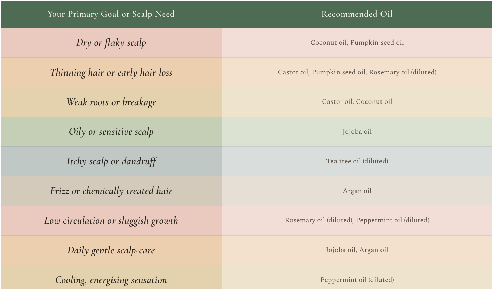
Making Scalp Massage a Consistent Ritual
Scalp massage is most effective when practised regularly. Whether your goal is to support hair growth, reduce stress, or maintain scalp balance, weaving this ritual into your routine can deliver meaningful, long-term benefits. The guidance below shows how to do this safely and effectively.
1. Before Washing Your Hair
Apply your chosen oil and massage the scalp for 5 to 10 minutes, ideally 15 to 20 minutes before shampooing.
Why: This allows the oil to deeply penetrate, hydrate the scalp and loosen buildup for easier cleansing.
2. During Shampooing
Use your fingertips to gently massage your scalp as you cleanse, focusing on the crown and nape, where buildup tends to accumulate.
Why: Enhances circulation and supports a more thorough, refreshing cleanse.
3. Before Bed (Oil-Free Option)
Try a calming dry massage with your fingertips, a wooden comb or a soft brush before sleep.
Why: Promotes relaxation, encourages overnight repair, and supports better sleep.
4. Weekly Deep Treatments
Combine massage with a deep-conditioning mask or oil treatment. Massage the product into the scalp, then wrap with a heated cap or warm towel.
Why: Boosts product absorption and stimulates the follicles while deeply hydrating the scalp.
Safety and Hygiene Precautions
Scalp massage is generally safe, but a mindful approach is key:
- Use gentle to moderate pressure to avoid irritation or stress on delicate follicles.
- Avoid massaging over open wounds, active infections, or inflammatory scalp conditions unless advised by a healthcare professional.
- Always wash your hands and clean tools, such as combs, brushes, and massagers, before use to maintain hygiene and prevent irritation or infection.
Simple Weekly Scalp Ritual
This gentle routine supports scalp health, hair strength, and nervous system balance without overcomplicating your schedule.
Step 1: Prepare (1 minute)
Choose a quiet moment. Take three slow breaths to relax your shoulders, jaw, and scalp. This signals the body to shift into a receptive, restorative state.
Step 2: Apply Oil (2 to 3 minutes)
Warm a small amount of your chosen oil between your palms. Apply to the scalp using fingertips or a dropper, focusing on areas of dryness, thinning, or tension.
Step 3: Massage (5 to 7 minutes)
Using gentle circular motions, massage the scalp from the temples to the crown, then toward the nape of the neck. Apply steady but comfortable pressure. If helpful, use a silicone massager or wooden comb for even stimulation.
Step 4: Enhance (Optional, 15 to 20 minutes)
If you want, you can wrap the head in a warm towel or wear a heated cap to improve absorption and deepen relaxation.
Step 5: Cleanse or Rest
- For an oil treatment, shampoo gently after the waiting period.
- For overnight nourishment, leave the oil in and cleanse the next morning if suitable for your hair type.
Frequency: Repeat once or twice weekly. Consistency matters more than duration.
A Simple Ritual, Profound Results
Scalp massage is one of the most accessible yet powerful forms of self-care you can offer to both your hair and overall wellbeing. It transcends mere aesthetics, becoming a practice of connection to your body, breath and a moment of quiet calm.
This gentle ritual is a rare convergence of ancient tradition and modern science. Research shows it can stimulate circulation, calm the nervous system, and deliver essential nutrients to hair follicles, thereby strengthening your hair from the root. With consistency, it can awaken dormant follicles, encourage healthier growth, and restore balance to a tense or stressed scalp.
Some benefits, such as tension relief and improved product absorption, are well supported, while others, including enhanced density and lymphatic flow, continue to be explored through growing clinical and anecdotal evidence. Yet perhaps its most immediate effect is not something measured at all, but felt deeply as relaxation, presence, and ease.
As science continues to uncover new details, one truth remains constant: touch supports healing. A consistent scalp massage ritual blends biology with mindfulness, enhancing circulation, releasing stored tension, and gently grounding you in the present moment. This act of care nourishes not only your hair, but your sense of calm and restoration.
Your scalp is a landscape of renewal. With each intentional touch, you support not only hair growth but also balance, energy, and vitality. This ritual is a reminder that care does not need to be complicated. Often, it begins with your own hands, a few quiet minutes, and the willingness to listen to your body.
Above all, scalp massage should never feel like a task. It is a gift you give yourself, a pause in the day that restores you on many levels. In just a few intentional minutes, you can return to a place of calm and nourishment. Your own hands already hold everything you need. Let this ritual be not only a practice for growth, but an act of grace.
Cultural Hair Care Rituals and Traditions
Hair has always been more than strands of protein. For centuries, it has carried deep cultural, spiritual, and symbolic meaning, shaping rituals, beauty practices, and social customs across civilisations. In many cultures, hair represents identity, strength, femininity, heritage, and even one’s connection to the divine.
Throughout history, communities around the world have developed unique hair care rituals rooted in nature, tradition, and holistic wellbeing. These practices were shaped by climate, environment, and ancestral wisdom, and they reflect a profound respect for the body as an interconnected system. In caring for hair, people also honoured lineage, community, and continuity, passing techniques and rituals from one generation to the next.
Although ingredients and methods vary, a universal truth unites these traditions. Hair thrives when balance is restored within the body and mind. Ancient practices such as oiling, herbal rinses, protective styling, and scalp massage were never solely cosmetic. They supported circulation, soothed the nervous system, protected hair from environmental stress, and created moments of mindfulness in daily life.
In today’s fast-paced world, revisiting these ancestral rituals offers more than nostalgia. It allows us to reconnect with slower, more intentional forms of self-care and to integrate timeless wisdom with modern scientific understanding. When approached with respect and curiosity, traditional hair rituals can enhance contemporary routines, bringing depth, balance, and meaning back into hair care.
In this chapter, we explore ancient and modern hair care traditions from around the world, uncovering the oils, herbs, techniques, and philosophies whose enduring wisdom continues to inspire holistic hair health today.
Ancient Hair Care Practices
Around the world, hair care has always been more than a beauty habit. It has been a spiritual and communal act that connects people to the earth and to one another. While ingredients and techniques differ across cultures, the guiding principles remain constant, nourishment, rhythm, and respect for nature’s intelligence.
India - The Art of Oiling and Ayurveda
In India, hair care is more than a beauty routine. It is a sacred ritual deeply rooted in Ayurvedic tradition. Guided by the philosophy of balancing body, mind, and spirit, Ayurvedic hair care focuses on nourishment, detoxification, and emotional wellbeing, recognising hair as a reflection of inner harmony.
One of the most cherished traditions is hair oiling, a practice passed down through generations as both therapy and bonding time. Warmed oils, often infused with medicinal herbs, are gently massaged into the scalp using a technique known as champi. This ritual softens the hair, stimulates blood flow, and calms the nervous system. Oils such as coconut, sesame, and amla (Indian gooseberry) are especially valued for strengthening roots, encouraging growth, and enhancing natural shine.
Indian hair care also includes herbal masks made with ingredients such as henna, hibiscus, shikakai, and fenugreek seeds. These natural treatments help restore vitality, reduce breakage, and support scalp health. Instead of harsh detergents, gentle cleansers such as reetha (soapnut) are traditionally used to purify the scalp while preserving the hair’s natural oils. The result is a holistic system that transforms everyday grooming into a meaningful ritual of self-care, rooted in ancestral wisdom.
Try This Ayurvedic Herbal Hair Oil
A traditional tonic for hair growth and scalp health.
Ingredients
- 1 cup coconut oil
- 2 tablespoons amla powder
- 1 tablespoon fenugreek seeds
- 10 to 15 fresh curry leaves
- 1 teaspoon castor oil
Instructions
- Gently heat the coconut oil in a pan.
- Add amla powder, fenugreek seeds, and curry leaves to the warm oil. Simmer on low heat for 10 minutes, stirring occasionally to ensure the herbs are fully submerged and their properties are infused into the oil.
- Turn off the heat, stir in castor oil, and allow to cool.
- Strain the oil and store it in a clean glass bottle.
How to Use
Apply a small amount of oil to your scalp and massage it in 1 to 2 times a week.
According to Ayurvedic tradition, hair oiling is intended as a pre-wash ritual, allowing the oil time to nourish the scalp and calm the nervous system before cleansing.
If you choose to oil after washing, apply the oil to slightly damp, towel-dried hair, using only a small amount and focusing on the scalp or ends. Leave on for at least one hour, or overnight for deeper nourishment, then rinse with a mild shampoo. This ritual strengthens hair, enhances shine, and promotes a sense of calmness and mindfulness.
China - The Secret of Fermented Rice Water
In the lush village of Huangluo in southern China, the women of the Yao community are renowned for their astonishingly long, glossy black hair, often flowing beyond six feet in length. Many retain thick, vibrant strands well into old age, with very little greying. Their secret lies not in modern products, but in a simple, time honoured tradition, fermented rice water.
Passed down through generations, this ancient ritual begins with soaking rice in water and allowing it to ferment naturally. The resulting rinse becomes rich in amino acids, antioxidants, B vitamins, and essential minerals. When used on the hair, fermented rice water helps strengthen strands, improve elasticity, reduce breakage, and enhance natural shine.
For the Yao women, this practice is more than hair care. It is a symbol of heritage, patience, and respect for natural rhythms, where beauty is cultivated slowly and consistently over time.
What makes this tradition especially appealing is its simplicity and accessibility. With only two basic ingredients, anyone can recreate this ritual at home and experience its strengthening and smoothing benefits.
Try This Fermented Rice Water Hair Rinse
A simple, time-honoured tonic that strengthens strands, reduces breakage, and adds natural shine.
Ingredients
- ½ cup uncooked rice
- 2 cups water
Instructions
- Rinse the rice thoroughly to remove any impurities.
- Place the rice in a bowl, cover with water, and leave to soak at room temperature for 24 to 48 hours. It is ready when the water develops a lightly sour, fermented scent.
- Strain the liquid into a clean container or spray bottle. Store in the refrigerator for up to one week.
How to Use
After shampooing, pour or spritz the fermented rice water over your hair as a final rinse. Leave it on for 5 to 20 minutes, then rinse with cool water. Use once or twice a week for smoother, shinier, and stronger strands.
Pro Tip
Fermented rice water acts as a gentle, natural protein treatment. Its amino acids help reinforce weak hair fibres and enhance shine without harsh chemicals. Consistent use once or twice a week delivers the best results.
Africa - Protective Hairstyles and Natural Butters
Across the African continent, hair has always been more than a style. It is a profound expression of identity, heritage, spirituality, and social connection. In many cultures, the way hair is worn can communicate tribe, age, marital status, social rank, or important life stages. Beyond symbolism, traditional African hair care is grounded in ancestral wisdom that respects and nurtures the natural beauty of curly and coily textures.
African hair care rituals centre on rich natural butters, oils, and botanicals chosen for their deeply nourishing properties. Ingredients such as shea butter, coconut oil, and castor oil are treasured for their ability to moisturise, seal in hydration, and support a healthy scalp. These remedies are often handmade, and passed down through generations, carrying both practical knowledge and cultural memory.
Protective hairstyles like braids, twists, and locks play a vital role in maintaining hair health. By reducing daily manipulation and shielding strands from sun, wind, and dryness, these styles help preserve length and strength. Yet they are far more than functional. Each style is a form of living artistry, reflecting creativity, ancestry, and belonging while honouring hair as both a personal and a communal expression.
Try This Shea Butter Moisturising Cream
A rich, nourishing blend that locks in moisture and softens textured hair.
Ingredients
- ½ cup unrefined shea butter
- 2 tablespoons coconut oil
- 1 tablespoon castor oil
- 5 drops of any essential oil (optional) like tea tree, lavender, rosemary, or peppermint.
Instructions
- Combine all the ingredients in a mixing bowl.
- Using a hand mixer or a fork, whip the mixture until light and fluffy, ensuring all the oil and butter are thoroughly blended.
- Apply a small amount to damp or freshly washed hair, focusing on the ends. Style as desired.
How to Use
After washing or dampening your hair, apply the whipped shea butter cream to your strands, concentrating on the ends. Style naturally or follow with protective braids or twists. Use regularly to lock in moisture, reduce breakage, and soften textured hair.
Middle East - The Power of Henna and Argan Oil
In Middle Eastern and North African cultures, hair care is deeply rooted in ritual, tradition, and nature-based remedies passed down through generations. These practices are not purely cosmetic. They are woven into daily life, celebrations, and rites of passage, reflecting a holistic understanding of beauty, identity, and self-respect. Among the most treasured ingredients are henna and argan oil, both valued for their effectiveness and cultural and spiritual significance.
Henna, derived from the Lawsonia inermis plant, has been used for centuries as a natural hair dye and strengthening treatment. When finely ground and mixed with water or herbal infusions such as black tea, henna becomes a rich paste that coats the hair in warm red or auburn tones. Beyond colour, henna reinforces the hair shaft, enhances shine, reduces breakage, and helps balance the scalp. In many communities, applying henna is also a ceremonial act, especially during weddings and celebrations, symbolising protection, joy, blessing, and transition.
Another cornerstone of regional hair care is argan oil, often called liquid gold. Harvested from the kernels of the argan tree native to Morocco, this luxurious oil is rich in vitamin E, essential fatty acids, and powerful antioxidants. Despite its light texture, argan oil deeply nourishes the hair, smooths frizz, restores elasticity, hydrates dryness, and shields strands from environmental stress. Whether massaged into the scalp or lightly applied to the lengths as a finishing oil, it imparts softness, strength, and radiant shine.
Together, henna and argan oil embody a timeless philosophy of beauty, one that honours patience, natural rhythms, and ancestral care.
Try This Henna Hair Mask for Strength and Shine
An age old ritual that fortifies the hair shaft, enhances shine, deeply conditions, and leaves strands resilient and richly toned.
Ingredients
- ½ cup henna powder
- 1 cup warm water or strong brewed black tea
- 1 tablespoon olive oil
Instructions
- In a non-metallic bowl, add the henna powder. Gradually pour in the warm water or tea, stirring until a smooth, thick paste forms with no lumps.
- Cover the bowl and allow the mixture to rest for 2 to 4 hours to release the dye before application.
- Apply evenly to clean, dry hair. Cover with a shower cap, cling film, or wrap in an old scarf or towel. Leave on for 1 to 2 hours. Longer the better.
- Rinse thoroughly with water and allow hair to dry naturally.
How to Use
Apply section by section to ensure full coverage. Keep the paste moist while processing. Once rinsed, gently comb out any residue after the hair has dried. Avoid shampooing for 24 hours to allow the conditioning and strengthening effects to settle. Henna acts as a natural conditioner, leaving hair stronger, smoother, and visibly shinier. Repeat every few weeks to build strength, enhance tone, and maintain scalp balance.
Europe - Herbal Infusions and Natural Hair Rinses
Across Europe, traditional hair care has long been rooted in the healing power of herbs and botanicals. For generations, both women and men have turned to the natural world for remedies that strengthen hair, soothe the scalp, and enhance shine. From the alpine meadows of Switzerland to the sun-kissed shores of the Mediterranean, these rituals have evolved in harmony with the seasons, local plants, and the land's richness.
Among the most cherished herbs in European hair traditions are chamomile, nettle, and rosemary. Chamomile is prized for its calming properties and its ability to gently brighten blonde or light coloured hair, adding a soft, sunlit glow. Nettle, rich in minerals such as silica and iron, has traditionally been used to stimulate scalp circulation, reduce shedding, and revive dull, weakened strands. Rosemary, a staple of southern Europe, is valued for its cleansing and invigorating qualities. With natural antimicrobial and antioxidant properties, it supports scalp health while its fresh, herbal scent has long been associated with bath houses, apothecaries, and folk medicine.
These herbs are typically brewed into strong infusions and used as final hair rinses or blended into homemade cleansers. Unlike synthetic treatments, herbal rinses work gently and cumulatively. With regular use, they help rebalance the scalp, improve texture, and restore vitality without stripping the hair of its natural oils.
Try This Rosemary Hair Rinse for Growth and Shine
A simple herbal remedy that stimulates the scalp, helps reduce dandruff, and leaves hair glossy and refreshed.
Ingredients
- 2 cups water
- 2 tablespoons dried rosemary or a handful of fresh rosemary sprigs
Instructions
- Bring the water to a boil, then add the rosemary.
- Reduce the heat and allow it to steep for 15 to 20 minutes.
- Let the infusion cool, strain, and pour into a clean bottle or container.
How to Use
After shampooing, pour the rosemary infusion slowly over your hair as a final rinse. You may leave it in or lightly rinse with cool water. Use regularly to stimulate scalp circulation, reduce dandruff, and boost natural shine.
North America - Sacred Braids and the Spirit of Hair
Among many Indigenous communities across North America, hair is considered sacred, an extension of the spirit, the mind, and one’s connection to the Creator. Hair is not viewed as purely aesthetic or symbolic. It is believed to hold energy, memory, and meaning. How it is worn, cared for, and treated reflects identity, ancestry, and the journey of life itself.
Braiding is one of the most cherished and deeply meaningful practices. Worn by both women and men, braids are far more than a hairstyle. They are seen as protective vessels that hold spiritual strength and intention. The act of braiding is often carried out with mindfulness or prayer, with each strand representing connection to the self, the Earth, and the Creator. In some traditions, hair is worn loose during times of mourning, while braids are reserved for ceremonies, celebrations, or moments of personal empowerment.
Natural ingredients are also used to cleanse and nourish the hair and scalp. Herbs such as sweetgrass, sage, cedar, and lavender are burned for smudging or steeped into infusions to purify and uplift the spirit. These herbs may be used in scalp rinses, woven into ceremonies, or carried for their spiritual and aromatic properties. The smoke, scent, and energy of these plants are believed to offer clarity, peace, and protection.
These traditions are not only beautiful but also deeply rooted in respect, reciprocity, and reverence for both nature and the self. Honouring the hair in this way invites us to slow down, to listen, and to treat our strands as part of something much greater than appearance.
Try This Sweetgrass & Sage Hair Rinse
A cleansing ritual that purifies the scalp, calms the spirit, and leaves hair refreshed with a subtle herbal fragrance.
Ingredients
- 2 cups water
- 1 tablespoon dried sweetgrass, or a small braid if available
- 1 teaspoon dried sage
Instructions
1. Bring the water to a boil, then reduce the heat to a simmer.
2. Add sweetgrass and sage, steep for 15 to 20 minutes.
3. Allow to cool, strain, and store in a clean container or a spray bottle.
How to Use
After shampooing, pour or lightly spray the herbal infusion over the scalp and hair as a final rinse. Leave it in or gently towel dry without rinsing. As you apply it, set a quiet intention or pause for a moment of gratitude. Use occasionally as part of a mindful hair care ritual.
Modern Adaptations of Traditional Hair Care
In today’s interconnected world, the wisdom of ancient hair care traditions is being rediscovered and thoughtfully reimagined. As cultures blend and knowledge travels freely, rituals once practised in kitchens, villages, and sacred spaces now shape modern beauty routines. From simple home remedies to high-end formulations, the influence of traditional practices and ingredients is unmistakable.
Natural materials once rooted in specific regions have gained global recognition. Shea butter, long treasured in West Africa for its moisturising and protective qualities, is now a staple in hair and skin care worldwide. Moroccan argan oil, valued for its ability to repair damage and enhance shine, features prominently in modern formulations across the beauty industry.
Ayurvedic herbs such as amla and bhringraj are increasingly sought for their rejuvenating effects on hair growth and scalp health. Likewise, fermented rice water, once a closely guarded East Asian practice, is now celebrated globally for its ability to strengthen strands, smooth texture, and enhance natural shine.
This global shift goes beyond ingredients. It reflects a growing desire for holistic and intentional self-care. Many traditional methods align closely with modern scientific understanding of the connection between the scalp, gut, and nervous system. Slow, rhythmic rituals such as oiling, braiding, and herbal rinses help calm the stress response, improve circulation, and support hormonal and microbiome balance, proving that ancestral wisdom was deeply attuned to biology long before modern research confirmed it.
Practices once considered regional or outdated are now embraced as therapeutic acts that nourish both body and spirit. Scalp massage, oil treatments, herbal infusions, and heat-free styling have become symbols of mindful beauty. Protective styles such as braids and head wraps, once tied primarily to cultural or ceremonial contexts, are now celebrated worldwide as expressions of identity, creativity, and self-respect.
These adaptations are not merely cosmetic. They are cultural. Each ritual carries stories of resilience, healing, and heritage passed down through generations. In many communities, hair care remains a communal act, a space for bonding, storytelling, and shared presence. Whether it is the oils of India, the styles of Africa, the infusions of Europe, or the sacred braids of Indigenous North America, each tradition contributes meaningfully to the global conversation on beauty.
Importantly, many of these practices are now supported by scientific evidence. Ingredients once shared only through oral tradition are being validated through research, while growing efforts in cultural education, preservation, and revival help ensure these traditions are honoured and sustained.
Incorporating traditional hair rituals into modern life is more than a trend. It is an act of remembrance, empowerment, and connection. It allows you to explore what truly works for your unique hair while respectfully honouring the cultures and communities that shaped these rituals with care, wisdom, and love.
Honouring Heritage Through Hair
Hair is not just a personal expression. It is a living archive of culture, resilience, and identity. Across continents and generations, people have turned to nature, tradition, and ritual to care for their hair in ways that reach far beyond appearance. These practices, whether found in the rhythmic champi massages of India or the intricate braids of African communities, speak to something deeper: ancestral wisdom, the healing power of the earth, and the artistry of self-love.
Through ritual, hair becomes more than strands to style. It becomes a language. A story. A way of remembering who we are and where we come from. In many cultures, hair care is passed down by hand rather than written instruction, shared in kitchens, courtyards, and sacred gatherings. These inherited acts are quiet yet powerful, rooted in connection to land, lineage, and spirit.
In today’s fast-paced, globalised world, returning to these traditions is not about romanticising the past. It is about grounding ourselves in what is sustainable, intentional, and meaningful. It is a choice to value presence over pressure, intention over imitation, care over conformity.
As ancestral practices are woven into modern life, we are invited to approach them with curiosity and respect. These rituals are not trends to consume, but legacies to carry forward with awareness and gratitude. They belong not only to history, but to the future we are shaping, one that honours diverse textures, stories, and expressions of beauty.
When hair rituals are treated as acts of remembrance and renewal, they reconnect us with something timeless. Each cultural approach, oiling, braiding, cleansing with herbs, carries the same message: beauty begins in belonging. Belonging to your body, your heritage, and the natural rhythm of life.
Let this be your invitation. Listen to your hair. Learn from it. Honour it. Whether it is wild or refined, natural or dyed, braided or wrapped, long or shaved, your hair holds your story. And your story is worthy of reverence, because healthy hair is not just a beauty goal. It is a reflection of how we care for ourselves, how we remember, and how we choose to belong to our bodies, our cultures, and to one another.
Seasonal Hair Changes and How to Adapt
Your hair, much like your skin, responds continuously to the changing seasons. Shifts in temperature, humidity, sun exposure, wind, and indoor heating influence scalp health, hair texture, oil production, and shedding patterns. Internally, your body moves through natural circadian and seasonal rhythms that affect hormones, circulation, nutrient absorption, and the efficiency of follicle renewal.
Just as your body often craves lighter foods in summer and warmth and nourishment in winter, your hair has evolving needs throughout the year. During humid months, the scalp may produce more oil and sweat, while colder seasons can leave it feeling tight, dry, or irritated. Learning to recognise these changes allows you to care for your hair intuitively rather than reacting only once problems arise.
In this chapter, we will explore seasonal hair changes and share practical strategies to help you adapt effectively. Hair growth follows a natural cycle made up of four phases: anagen (growth), catagen (transition), and telogen/exogen (resting/shedding). During the telogen phase, strands naturally shed before new ones grow in their place. These phases often fluctuate with the seasons.
Many people experience stronger growth in spring and summer, followed by increased shedding in autumn and early winter. This seasonal shift is a biological rhythm, not a sign of damage or failure, but an invitation to adjust your routine with awareness and patience.
Understanding this cycle allows you to support your hair rather than fight it. Small, thoughtful adjustments can make a noticeable difference, whether that means using richer hydration during winter, protecting strands from UV exposure in summer, or modifying styling habits in humid conditions. When you work with the seasons rather than against them, your hair stays balanced, resilient, and vibrant year-round.
Seasonal Hair Cycles at a Glance
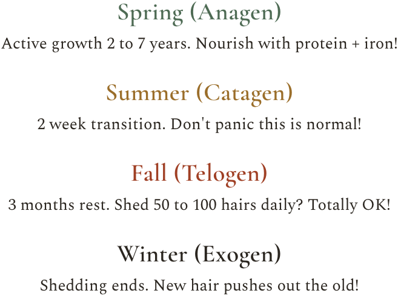
Seasonal Influences on Hair
Just as your body responds to the rhythm of daylight and rest, your hair follows nature’s cycles. The same internal signals that regulate sleep, digestion, and energy levels also influence scalp oil production, follicle activity, and even pigment retention. When your hair care routine is aligned with these natural rhythms, harmony is created between your inner biology and the external environment.
Autumn Shedding
Many people notice more shedding during late summer or early fall, a phenomenon known as seasonal effluvium. Experts believe this could be linked to evolutionary patterns in which humans retained thicker hair for warmth during colder months and shed excess in preparation for warmer weather. While the shedding can feel alarming, it is usually temporary and part of the natural renewal process.
Humidity and Dryness
High humidity during warmer months can cause the hair cuticle to swell, leading to frizz, puffiness, tangling, and a loss of definition. In contrast, cold winter air and indoor heating strip moisture from both scalp and strands, increasing dryness, brittleness, static, and breakage. These environmental extremes call for different approaches to hydration and protection.
UV Exposure
Prolonged sun exposure in spring and summer gradually degrades keratin, the protein that gives hair its strength and structure. This can result in fading, dullness, split ends, and weakened strands, particularly in colour treated or fine hair. Without protection, cumulative UV exposure quietly accelerates hair ageing.
Scalp Health Shifts
Seasonal changes and allergies also affect the scalp. Heat, sweat, and increased sebum production in warmer months can contribute to buildup and clogged follicles. Colder weather may trigger dryness, irritation, tightness, and flaking. Both extremes can disrupt the scalp ecosystem, influencing growth quality and overall hair health.
Understanding how your hair and scalp respond to seasonal shifts empowers you to take proactive, targeted steps throughout the year. In the next section, we will explore how to adjust your routine for each season, from deep hydration in winter to lightweight protection and UV defence in summer.
Seasonal Adaptation Strategies
Your hair follows its own seasonal rhythm, much like the natural world around us. Each season brings distinct challenges, from winter dryness to summer sun exposure, and requires thoughtful care to keep strands strong, healthy, and vibrant. By adapting your routine throughout the year, you can support repair and renewal in spring, protection in summer, strengthening and soothing in autumn, and rest and replenishment in winter.
Spring - Repair and Renewal
Common challenges
After winter, hair often shows signs of dryness, dullness, and fragility. Heavy clothing and headwear can contribute to lingering scalp buildup, while the return of stronger sunlight introduces early UV exposure that many people overlook during this transitional season.
Repair and Restore
Use deep-conditioning treatments and rich masks formulated with ingredients like argan oil, shea butter, coconut oil, or avocado oil to revive dry, brittle strands. Protein treatments (like keratin or hydrolysed wheat protein) to strengthen weakened strands. Leave-in creams or serums with hyaluronic acid or aloe vera for lightweight hydration.
UV Protection
As daylight hours increase, begin using leave-in treatments or sprays with built-in SPF to protect both hair and scalp from emerging sun damage. On brighter days, hats or scarves provide an effective physical barrier and help minimise cumulative UV exposure.
Clarify the Scalp
Using a clarifying shampoo once a week helps remove residual product, excess oil, and environmental buildup accumulated during winter. A refreshed scalp supports healthier follicle activity and encourages more robust growth as the season shifts.
Trim for Renewal
A seasonal trim removes split ends and prevents damage from travelling along the hair shaft. This small adjustment creates a stronger foundation and supports healthier, more balanced growth as your hair enters its active phase.
Summer - Protect and Defend
Common challenges
Summer heat and humidity place significant stress on hair and scalp. Common concerns include frizz, dehydration, sweat and oil buildup, chlorine and saltwater exposure, and UV related thinning or colour fading.
UV Protection
Prolonged sun exposure weakens the hair shaft by degrading keratin, contributing to dryness, thinning, and loss of colour vibrancy. Use leave-in products with built-in UV filters to protect strands and the scalp. On sunnier days, wide-brimmed hats or UV-blocking scarves offer reliable physical protection and reduce cumulative damage.
Manage Sweat and Oil Buildup
Higher temperatures stimulate sweat and sebum production, often requiring more frequent washing. Gentle cleansing helps prevent clogged follicles and scalp irritation. Always follow with a hydrating conditioner or lightweight leave-in to maintain moisture balance and avoid stripping the scalp.
Swimming Protection
Chlorine from pools and saltwater from the sea can draw moisture from hair, weakening its structure. To minimise damage, pre-wet hair with fresh water before swimming so it absorbs less chlorine or salt. Apply a light layer of oil or conditioner to create a protective barrier. Rinse hair thoroughly after swimming to remove residue and reduce dryness.
Anti-Frizz and Lightweight Hydration
Humidity causes the hair cuticle to swell, leading to frizz and loss of definition, particularly in fine or curly hair types. Lightweight, silicone-based serums help smooth strands without heaviness, while water-based leave-in conditioners provide hydration without greasiness.
Lightweight Styling Products
During humid months, heavy creams and oils can weigh hair down. Choose airy mousses, mists, or gels formulated to control frizz while preserving natural movement and volume.
Dietary Support
A summer-friendly diet rich in vitamins and minerals, such as vitamin C, supports collagen formation and iron absorption, zinc contributes to follicle function, and omega-3 fatty acids help maintain scalp comfort and strand resilience during environmental stress.
Autumn - Strengthen and Soothe
Common challenges
Autumn is often the peak season for natural hair shedding. Alongside increased shedding, many people notice heightened scalp sensitivity, reduced shine, and weakened strands as the body transitions into cooler, lower light conditions.
Be patient with shedding
A moderate increase in hair loss during autumn is a normal and temporary part of the hair growth cycle. Understanding this seasonal rhythm helps ease anxiety and prevents over-treating or aggressive interventions that may worsen breakage.
Strengthen with protein support
This is an ideal time to reinforce the hair structure. Incorporate bond repairing or strengthening masks formulated with hydrolysed keratin, silk proteins, or amino acids to improve resilience and reduce breakage without compromising flexibility.
Scalp Exfoliation: Using a gentle scalp scrub or exfoliating brush once a week helps remove product buildup, stimulate circulation, and support healthy follicle activity. A well-oxygenated scalp creates a more supportive environment during periods of increased shedding.
Nutrient Rich Nourishment
Autumn is the season to focus on internal support. Prioritise foods that nourish follicles and support regrowth, such as biotin-rich options like eggs, almonds, and seeds. Vitamin C sources include citrus fruits, berries, and peppers. Iron-rich foods, including leafy greens, lentils, and lean meats.
Minimise Heat-styling
Reducing heat exposure is especially important when hair is more prone to shedding. Air drying whenever possible, or using low heat settings with protection, helps preserve strength and prevent unnecessary stress on the hair shaft.
Winter - Rest and Replenish
Common challenges
Winter conditions leave hair at its most vulnerable. Cold outdoor air, indoor heating, and low humidity levels strip moisture from both the scalp and hair strands, often resulting in dryness, static, tightness, and increased brittleness.
Deep moisture and replenishment
During winter, prioritise rich, creamy conditioners and deeply hydrating masks to restore softness and elasticity. Weekly overnight oil treatments using nourishing oils such as jojoba or coconut help seal in moisture, soothe scalp discomfort, and reinforce the hair’s protective barrier.
Lukewarm Showers
Hot water strips away natural oils, exacerbating winter dryness. Washing your hair with lukewarm water helps preserve the scalp’s moisture balance while still allowing for effective cleansing.
Support Indoor Humidity
Indoor heating significantly lowers air moisture, contributing to scalp discomfort and dry strands. Using a humidifier to maintain indoor humidity between 40 and 60% helps support scalp comfort and reduces static and breakage.
Gentle Detangling Habits
Winter hair is more fragile and prone to snapping. Detangle hair while damp with a wide-tooth comb or soft brush, ideally while it is coated in conditioner. This reduces friction, minimises breakage, and protects delicate strands during the colder months.
Year-Round Hair Health Essentials
No matter the season, certain habits form the foundation of strong, vibrant, and resilient hair. These timeless practices support both scalp and strands throughout the year, helping your hair adapt smoothly to seasonal shifts rather than react under stress.
Trim Regularly
Get a trim every 6 to 8 weeks to prevent split ends and maintain healthy shape and density. Regular trimming also helps hair appear fuller, healthier, and more polished.
Eat a Hair-Friendly Diet
Prioritise nutrients that sustain follicle activity and strand integrity, including
- Adequate protein to support hair structure.
- Omega-3 fatty acids to promote scalp hydration and comfort.
- Zinc and iron to support healthy growth and help reduce excessive shedding.
Manage Stress Effectively
Ongoing stress can disrupt the hair growth cycle and exacerbate shedding. Integrate stress-reducing practices such as mindfulness, gentle exercise, yoga, journaling, or time in nature to protect both emotional wellbeing and long-term hair health.
Use Tailored Products
Select products that align with your hair type and specific needs, whether curly, fine, coily, colour-treated, or thinning. Customising your routine ensures your shampoo, conditioner, and treatments support balance rather than create buildup or irritation.
Stay Hydrated
Hydration is essential for every cell in the body, including those responsible for healthy hair growth. Aim to drink 6 to 8 glasses of water daily to support scalp health and maintain hair elasticity from the inside out.
Protect Hair from Damage
Minimise excessive heat-styling, overly tight hairstyles, and frequent chemical treatments that can weaken strands over time. Use heat protectants, gentle accessories, and low tension styling methods to preserve strength and longevity.
Seasonal Hair Care Flow
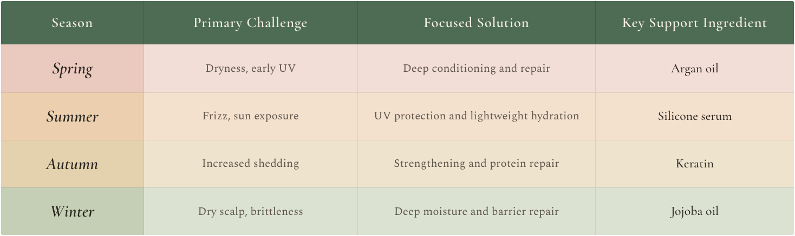
Embrace the Seasons, Empower Your Hair
Seasonal changes are more than shifts in weather; they have a direct, measurable impact on the health, texture, and behaviour of your hair. Variations in temperature, humidity, sun exposure, wind, and indoor climates influence how your scalp functions and how your strands respond. When these changes are ignored, the result may appear as increased shedding, dryness, frizz, or breakage.
By paying attention to the seasons, you can work with your hair rather than against it.
Adopting proactive, season-specific strategies, repairing and renewing in spring, protecting and shielding in summer, strengthening and stabilising in autumn, and deeply nourishing in winter, allows you to stay ahead of environmental stressors instead of reacting once damage appears. These adjustments may seem small, yet their cumulative effect is powerful, supporting strength, shine, and long-term resilience.
Beyond seasonal shifts, consistent foundational habits create lasting hair vitality. Balanced nutrition, regular trims, gentle styling practices, scalp massage, stress awareness, and emotional balance all contribute to a stable environment where hair can thrive. When year-round consistency is paired with seasonal awareness, hair care evolves from a routine into a mindful ritual of renewal.
Rather than resisting the changes each season brings, embrace them as opportunities to reconnect with your hair’s needs and natural rhythms. Through listening, adjusting, and nurturing with intention, you empower your hair to flourish throughout the year. Over time, this approach enhances not only how your hair looks, but how you understand and appreciate its unique qualities.
Your hair follows a rhythm much like your own. It grows, sheds, rests, and renews. When these shifts are met with awareness instead of frustration, every season becomes an invitation to begin again. Nature never rushes, and neither should you. Trust the cycle, honour the process, and allow your hair to evolve gracefully alongside the world around you.
Embrace Your Hair
Journey
Stress, Confidence and Self-love
Throughout Healthy Happy Hair, stress has appeared many times, particularly in relation to nutrition, hormones, and overall wellbeing. Its direct impact on hair health, and the emotional weight it carries, now deserve closer attention.
Stress is more than a mental burden. It often manifests physically, beginning with the skin, scalp, and hair. For many people, it becomes a hidden driver of shedding, thinning, breakage, dullness, or slowed growth. These visible changes can quietly undermine confidence, reinforcing a cycle of worry that further strains the body.
Importantly, stress itself is not the true enemy. It is a signal the body uses to highlight imbalance and invite attention. Whether rooted in nutritional gaps, emotional strain, lifestyle patterns, or unresolved health concerns, stress acts as a mirror. It reveals what requires care rather than something to suppress or ignore.
With this in mind, this chapter invites you to look inward, focusing on how stress influences both your hair and your relationship with yourself. Self-worth and inner calm shape how you show up in the world and how your body, including your hair, responds to daily demands. By nurturing emotional wellbeing and learning to respond to stress with greater awareness, you create an internal environment in which your hair can more easily prosper.
As you approach the close of this journey, acknowledge the changes you have made, the habits you have begun to shift, and the awareness you have gained. Notice the small steps that are gradually becoming second nature. Consistency remains your greatest ally. Over time, you may find not only a transformation in your hair, but also a deeper, more sustained sense of balance and calm that reaches far beyond the mirror.
Hair is never just hair. It carries meaning beyond its physical strands and is closely interwoven with our sense of self and identity.
Psychological Connection for Hair
Hair is never just hair. It carries meaning beyond its physical strands and is closely interwoven with our sense of self and identity. From an early age, it becomes an important part of our personal and social lives, shaping how we see ourselves and how we believe others see us.
Through style, colour, texture, and length, hair communicates personality, culture, and emotional state. It can be a source of pride and empowerment, directly influencing confidence and our willingness to engage socially and professionally.
Neuropsychological research suggests that self-perception is closely linked to physical appearance, with hair playing a particularly influential role in this connection. On days when hair looks good and feels healthy, many people experience a lift in self-esteem and a stronger sense of agency. This is not vanity, but a reflection of how the brain integrates self-image into emotional wellbeing.
When hair changes unexpectedly due to stress, ageing, health conditions, or environmental factors, it can evoke feelings of vulnerability, insecurity, anxiety, or a sense of loss of control. These shifts may unsettle our inner narrative and activate the brain’s threat-response system, leading to heightened self-consciousness or withdrawal from social situations.
Recognising this connection invites a more compassionate approach to hair care. Rather than viewing hair as something to control or correct, it can be understood as part of a broader conversation about balance and health, one that calls for patience and gentler expectations.
By reframing our relationship with hair from criticism to kindness, we support both emotional resilience and physical care. Hair can then remain a positive and evolving form of self-expression through every stage of life, reminding us that identity is supported by how we care for ourselves as a whole, not defined by appearance alone.
Emotional Toll of Hair Challenges
When hair changes unexpectedly, the impact often reaches far beyond appearance. For many people, it can feel like losing a part of their identity, youth, or sense of control.
Emotions such as sadness, frustration, denial, or anxiety may arise, closely resembling the stages of grief. This response is particularly common in cultures where hair is strongly linked to beauty, social status, or gender identity.
The experience is deeply individual. A younger person may feel disconnected from their peers, while someone later in life may interpret change as a sign of premature ageing. Women often experience heightened distress due to long-standing cultural associations between hair and femininity. Men may struggle when hair loss occurs suddenly or earlier than expected. For non-binary or gender-diverse individuals, changes in hair can directly affect how identity is expressed and perceived.
Despite the emotional weight of these experiences, resilience remains possible and attainable. With compassion, understanding, and support, many people come to recognise that while hair may change, personal worth does not. For some, these challenges become an invitation to redefine self-image, deepen self-acceptance, and build a more grounded and authentic relationship with identity.
Inner Dialogue of Hair
Hair influences far more than personal style. It acts as a constant, silent communicator between your inner and outer worlds. This dialogue includes not only hair loss, but also changes in texture, thinning, scalp sensitivity, and the daily frustration of hair that feels unpredictable or unmanageable. Over time, these experiences can quietly shape emotional wellbeing, influencing how you see yourself and move through life, often without conscious awareness.
When hair becomes a source of uncertainty, it can erode spontaneity and trigger what psychologists describe as anticipatory anxiety. Every day moments begin to feel mentally rehearsed:
Will the wind expose thinning areas?
Will there be time to fix it before an important meeting?
Can I exercise, swim, or embrace someone without feeling selfconscious?
This ongoing vigilance creates a subtle but persistent cognitive load, diverting mental and emotional energy away from creativity, presence, and enjoyment.
Hair changes can also disrupt what sociologists call biographical continuity, the sense that past, present, and future selves form a coherent whole. When change feels beyond your control, it may create a gap between who you remember being and who you see reflected back at you. This is not only about ageing, but about identity and personal narrative. It may show up as hesitation to experiment, difficulty expressing yourself fluidly, or a gradual erosion of confidence and authenticity.
Social and relational life can be affected in similar ways. In professional or personal settings, visible hair concerns may lead to constant selfmonitoring or avoiding situations where attention might fall on appearance. In intimate relationships, withdrawal may occur not because attraction has faded, but out of fear of being seen as less desirable. For people of colour, these experiences can carry additional layers of cultural and historical meaning tied to hair.
Yet within these challenges lies an opportunity for resilience. Detaching selfworth from hair’s behaviour becomes an act of emotional liberation. By shifting focus from how hair looks to how it feels, how it responds to care, and how it fits within the broader tapestry of identity, a more compassionate inner dialogue can emerge.
Hair remains part of your story, but not the whole narrative. When selfworth is rooted beyond appearance, change becomes less threatening. It can be met not as a loss but as a transition, inviting growth, adaptation, and renewed confidence. You are not diminished by change; you are reshaped by it.
Supporting Others Through Hair Challenges
While the journey with hair is deeply personal, it is rarely experienced in isolation. How we support someone navigating hair loss, thinning, or identity shifts can profoundly shape their emotional wellbeing and path toward acceptance. True support moves beyond clichés and reassurance, recognising that hair is closely intertwined with selfhood.
Meaningful support begins with presence. One of the most powerful gifts you can offer is a non-judgmental space where fear, sadness, anger, or humour are met without correction, which can be deeply healing. Well-intentioned phrases such as “It’s not that bad” or “You will be fine” can unintentionally minimise very real feelings of grief.
Listening to understand, rather than to respond, allows the other person to lead and reinforces that they are not alone.
When action feels appropriate, let respect guide you. Ask before offering advice and keep support practical and specific. A simple question such as “Would you like me to share something I found?” preserves autonomy and prevents overwhelm. Tangible offers, whether information, company, or quiet assistance, often feel more supportive than open-ended reassurance.
Supporting young people requires particular care. Children and teenagers may struggle deeply as self-image and social belonging are still forming. Adults must act as both advocates and anchors by offering age-appropriate explanations, involving them in choices, and restoring a sense of control through small but meaningful options.
Above all, believe them when they express distress and reinforce that their value is never defined by appearance.
In intimate partnerships, hair changes can subtly affect confidence and closeness. Express care and attraction openly, without rushing to fix. Affirm that the connection extends to the whole person. Often, the most healing response is simple presence and the quiet reassurance of “I’m here with you,” and a steady reminder that they are being seen and valued as they are.
Ultimately, by choosing empathy over advice and presence over platitudes, and respect over reassurance, you help strengthen emotional steadiness. In doing so, you become part of the ground on which confidence is rebuilt, gently, authentically, and with dignity.
When Stress Becomes Physical
Stress is often felt as emotional exhaustion, but its effects extend far beyond mood. The shift from mental strain to physical symptoms, including hair thinning or shedding, follows a clear biological pathway. Under pressure, the body releases cortisol, a hormone designed for short-term survival. In brief bursts, cortisol is protective. When levels remain elevated over time, however, it disrupts the balance that supports healthy hair follicle function, weakening growth and increasing shedding.
This disruption can appear in several ways. For many people, it appears as telogen effluvium, in which stress pushes a large number of hairs prematurely into the resting phase, leading to noticeable shedding months later. In others, particularly those with a genetic susceptibility, chronic stress may contribute to alopecia areata, an autoimmune response in which the body targets its own hair follicles. Stress can also influence behaviour, fuelling patterns such as trichotillomania, a compulsive urge to pull out hair in response to overwhelming emotional tension.
Understanding how stress affects the body gives you a clearer sense of agency. By supporting your nervous system and regulating the stress response, you improve the internal environment your hair needs to recover, grow, and stay strong over time.
Cultivating a Hair-Friendly Life
The goal is not to eliminate stress, an impossible task, but to change your relationship with it. Rather than viewing stress as a threat, it can be understood as feedback, guiding you toward habits that better support your wellbeing and, in turn, your hair.
This shift begins with awareness. Before stress can be regulated, its sources must be recognised. Consider whether it stems from emotional strain, nutritional imbalance, environmental exposure, or a combination of factors. Even brief journaling over one week can be revealing. Noting mood, energy, sleep quality, and changes in skin, scalp, or hair often highlights patterns, such as increased shedding or sensitivity following stressful periods.
Once awareness is established, you can introduce practices that calm the nervous system while directly supporting scalp health. At this stage, selfcare becomes intentionally hairsupportive.
Mindful Scalp Massage
Scalp massage is often recommended for circulation, but its effects deepen when approached with awareness. Stress commonly accumulates in the scalp, creating tightness that can restrict blood flow. When massaging with a nourishing oil, perhaps infused with lavender or rosemary, slow your breath and focus on the sensations beneath your fingertips. This practice releases tension, enhances circulation, and signals safety to the nervous system, turning routine care into a grounding ritual.
Adaptogenic Nutrition
Supporting the body through stress extends beyond general nutrition. Under professional guidance, adaptogenic herbs such as ashwagandha or rhodiola may help the body adapt to stress and modulate cortisol over time. Paired with a balanced, nutrientdense diet, they can support resilience and reduce the likelihood that stress will disrupt hair growth cycles.
Restorative Sleep
Sleep is an active period of repair and regeneration. During deep sleep, growth hormone is released, and cellular renewal accelerates, processes closely linked to healthy hair growth. Chronic stress and elevated cortisol can impair sleep quality, making sleep hygiene an essential part of any hairsupportive lifestyle.
By cultivating a life that addresses stress both systemically and at the scalp level, you move beyond symptom management. You create a foundation that supports recovery, balance, and longterm strength, allowing both you and your hair not just to cope, but to flourish.
Self-Love as a Biological Imperative
Throughout this chapter, we have explored both the science of stress and the psychology behind hair challenges. At their core, they converge on a single truth: the relationship you have with yourself matters. Lasting hair health cannot be built on frustration or self-criticism. The path to true change is, ultimately, a path toward self-acceptance.
This is not a vague or sentimental idea. It is a biological imperative. When you shift from self-judgment to self-compassion, the stress response begins to soften. As cortisol levels decline, the nervous system moves toward safety, and the body enters a state where repair, regeneration, and growth become possible.
Cultivating this mindset transforms hair care from an effort to fix something wrong into a ritual that honours the body.
This is where self-love becomes practical and visible. It is the difference between scrubbing a scalp viewed as problematic and gently massaging with nourishing oils, acknowledging the strength of your body. It is choosing foods that sustain you, not as punishment or discipline, but as affirmation that your body deserves care. It is protecting sleep, rest, and emotional energy with intention, because wellbeing is not optional.
This approach interrupts the cycle in which hair concerns trigger stress, and stress in turn worsens hair health. Meeting your reflection with compassion rather than criticism quiets the inner voice that perpetuates tension. Care begins to come from respect and patience rather than resentment.
Perhaps this is the most powerful shift of the entire journey. When nourishment, rest, and care become expressions of self-worth, consistency no longer feels forced. It feels natural. From this grounded place of acceptance, you create the conditions needed for resilience, strength, and sustainable growth.
As self-love becomes embodied, its effects extend far beyond the scalp. This inner foundation of compassion and respect becomes a steady centre, shaping the boundaries you set, the kindness you offer yourself, and the nourishment you allow into your life. The body reflects the quality of this care. Your hair, skin, and energy begin to tell a new story, one of balance and strength, rooted in the harmony you are creating within.
Consistency Rooted in Compassion
Lasting transformation arises from the union of consistency and self-compassion. Hair health is shaped by nutrition, biology, stress regulation, and mindset, but the quiet thread that binds them all is self-love.
From this foundation, care shifts from obligation to choice.
You nourish yourself not because you should, but because you deserve to. Rest becomes an act of respect, and sleep is prioritised not through discipline alone, but through an understanding that repair and renewal are essential. In this partnership, where you work with your body rather than against it, hair responds with greater balance.
Stress takes on new meaning. It is no longer something to fight, but something to listen to, signalling when care and reassessment are needed. When you respond with patience, awareness, and presence, you meet the deeper needs of both body and mind.
Challenges will still arise. Progress is rarely linear, and there may be seasons that test patience or confidence. In those moments, returning to kindness rather than criticism becomes your anchor. This steady self-connection sustains change when motivation fades.
Ultimately, this journey was never only about hair. It is about how you relate to yourself and, in turn, how you experience life. Each mindful pause and gentle act of care communicates safety to the body, supporting balance, renewal, and growth over time.
Carry this foundation forward with trust. Support it with consistency, tend to it with compassion, and allow vitality, confidence, peace, and healthy hair to unfold in their own time.
Build your Personalised Hair Care Plan
Congratulations on reaching this stage. By now, you understand how hair grows, how the scalp functions, and how hormones, nutrition, stress, and care habits shape your hair over time. This chapter marks the transition from learning to doing.
This is your blueprint. Here, you will bring everything together and design a personalised hair care plan that works for you. Whether your goal is to restore vitality, manage thinning, repair damage, or maintain healthy, glossy hair, this chapter will help you turn knowledge into a clear, practical routine.
A successful hair care plan is not built on trends or perfection. It is shaped by awareness, consistency, and self-respect. The focus is not on doing everything, but on choosing what truly supports your hair, your lifestyle, and your priorities.
As you move from understanding to action, remember that caring for your hair is also an act of appreciation. This is about honouring your hair as it is, responding to its needs, and creating a routine that fits naturally into your life. Let’s begin by setting the foundation with the first step.
The Seven Personalisation Steps
These steps are designed to help you move from understanding to application. Rather than following rules, you will reflect, choose, and adapt to create a hair care routine that fits your unique needs, lifestyle, and goals.
Take them at your own pace, revisit them when life changes, and use them as a flexible guide for long-term hair health.
Step 1: Pause, Reflect, and Set Your Focus
Clarify what matters most to you right now and move from reading into action.
Before building your personalised hair care plan, take a moment to pause. You have absorbed a great deal of information throughout this book, and this step allows you to step back, reflect, and decide where your attention is most needed right now.
Hair needs change with seasons, stress levels, health, and life stages. What mattered to you earlier may no longer be your top priority, and that is completely normal. This step is about awareness, not judgement.
Reflect, Ask Yourself
- What stood out to me most while reading this book?
- Have I noticed patterns in my hair related to stress, sleep, diet, or styling habits?
- What feels like my biggest hair concern at this moment?
Set Your Focus
Choose one or two priorities only. This might improve scalp comfort, reduce shedding, restore moisture, or simplify your routine. Focusing on fewer goals makes your plan more realistic and sustainable.
Write your focus down or note it in your hair journal. This becomes your anchor as you move through the next steps, helping you make intentional choices rather than reacting to trends or overwhelm. This also creates your baseline for tracking progress.
Step 2: Assess Your Hair and Scalp Baseline
Understand your current starting point with awareness, not judgement.
Before changing or refining your routine, it is essential to understand where your hair and scalp are right now. This step creates a personal baseline, a reference point you can return to as your hair evolves.
Resist the urge to compare your hair to others or to an ideal image. Hair health is individual, influenced by genetics, lifestyle, environment, and timing. What matters most is understanding your own starting position.
Observe Your Hair
Take a few moments to notice the visible and physical qualities of your hair:
- Hair type: straight, wavy, curly or coiled
- Texture and density: fine, medium or thick
- Overall feel: dry, balanced, fragile or strong
Assess Your Scalp
Your scalp sets the foundation for healthy hair growth. Note how it feels most days:
- Oily, dry, sensitive, or balanced
- Any signs of itching, flaking, tightness, or irritation
- How your scalp responds to washing, stress, or weather changes
Capture Your Baseline
Take one clear photo of your hair in natural light, using the same angle you can easily repeat later. Make a brief note about how your hair looks and feels today, including shine, softness, volume, and scalp comfort.
Record this information in your hair journal or tracking tool. This baseline is not a verdict. It is a starting point. It allows you to measure progress honestly and adjust your plan with confidence as you move forward.
Step 3: Define Your Hair Goals
Create clear, realistic intentions that guide your choices.
Goals give your personalised hair care plan direction. Without them, it is easy to drift between products and practices without knowing whether they are truly working for you. This step helps you define what success looks like, both now and over time.
Keep your goals simple and meaningful. Hair responds slowly, and progress is easier to recognise when expectations are clear and realistic.
Set a Short-Term Goal
Choose one short-term goal you would like to notice within the next 1 to 6 weeks. This might include br:
- Improved scalp comfort
- Reduced frizz or dryness
- Better manageability or shine
Short-term goals build confidence and keep you engaged.
Set a Long-Term Goal
Choose one long-term goal to work toward over the next 3 to 12 months. Examples include:
- Reducing ongoing hair loss, improving density
- Retaining length and reducing breakage
- Supporting stronger, fuller-looking hair
- Encouraging healthier curl definition
Long-term goals provide vision and patience.
Make Your Goals Observable
Vague goals can feel discouraging. Whenever possible, define what you will notice or feel when progress is happening. For example:
- “Less shedding during washing” rather than “less hair loss.”
- “Hair feels softer without extra styling products” rather than “healthier hair.”
Write your goals in your hair journal or tracker and review them monthly. They are not rigid promises, they are guiding points that help you make intentional choices.
Step 4: Design Your Core Routine
Build a simple, sustainable system that consistently supports your hair.
Now that you know your focus and goals, it is time to design the structure that will support them. A core routine is not about doing everything. It is about choosing what matters most and doing it consistently.
Your routine should feel supportive, not overwhelming. It must fit your time, energy, lifestyle, and budget, otherwise it will not last.
Identify Your Non-Negotiables
These are the essentials you commit to, even on busy weeks. Choose one daily, one weekly, and one monthly action that supports your goals. For example:
- Daily: gentle handling or scalp awareness
- Weekly: conditioning or scalp-care
- Monthly: maintenance such as trimming, clarifying, or reassessing products
These anchors create stability without pressure.
Decide What Is Optional
Extras can be supportive, but they are not required for progress. Treatments, tools, or rituals that you enjoy can be added when time allows. This keeps your routine flexible and realistic.
Match Your Routine to Your Life
Consider how much time you realistically have for hair care. A plan that works during calm periods but collapses during busy ones needs simplifying. Your routine should support your life, not compete with it.
Write your core routine into your hair journal or tracker. Seeing it clearly helps reinforce commitment and prevents unnecessary changes.
Step 5: Personalise Your Lifestyle Support
Align nutrition, stress, sleep, and movement with your hair’s needs.
Hair health is influenced by more than products alone. Your lifestyle plays a meaningful role in how your hair grows, sheds, and recovers. This step helps you personalise that support without overwhelm.
Rather than trying to change everything, focus on noticing patterns. Small adjustments, made with awareness, can have a lasting effect.
Notice Your Personal Triggers
Reflect on how your hair responds during different periods of your life. Ask yourself:
- Does shedding increase during stress, poor sleep, or illness?
- Does your scalp feel worse when hydration is low?
- Do certain foods or habits seem to support or disrupt your hair?
Awareness allows you to respond thoughtfully rather than react impulsively.
Choose One Supportive Focus
Select one lifestyle area to prioritise for the next few weeks. This might be improving hydration, adding a nutrient-dense food, creating a gentler evening routine, or protecting sleep. One focused change is far more effective than many inconsistent ones.
Support from the Inside Out
Your body needs energy and balance to support healthy hair. Gentle movement, nourishing meals, and emotional rest all contribute to an internal environment that supports hair growth rather than strains it.
Track any observations in your journal or tracker. Over time, these patterns provide valuable insights and help you refine your plan with confidence.
Step 6: Protect and Preserve Your Progress
Identify personal damage triggers and reduce unnecessary stress on your hair.
Once you begin caring for your hair with intention, protecting that progress becomes essential. Hair damage often comes from repeated, everyday stress rather than one dramatic mistake. This step helps you recognise where your hair is most vulnerable and choose protection accordingly.
Identify Your Risk Areas
Consider the habits or conditions that place the most strain on your hair. These may include frequent heat-styling, tension from certain hairstyles, environmental exposure, or rough handling when wet or tired. Damage looks different for everyone.
Choose Protective Adjustments
Rather than aiming to eliminate everything, choose a few realistic changes that reduce stress on your hair. This might mean lowering heat settings, spacing out styling sessions, being gentler when detangling, or protecting hair during challenging weather or travel.
Preserve Length and Strength
Protecting your hair is not about restriction, it is about preservation. Each protective choice helps maintain the progress you are building, allowing strength, shine, and length to develop over time.
Record your adjustments in your plan or journal. Protection becomes easier when it is intentional rather than reactive.
Step 7: Track, Adjust, and Celebrate
Stay connected to your progress and allow your plan to evolve.
Your personalised hair care plan is not set in stone. Hair changes with time, health, stress, seasons, and life circumstances. This final step helps you stay connected to your progress and make thoughtful adjustments as needed.
Track with Curiosity
Use your hair journal, tracker, or progress photos to note changes in texture, shedding, scalp comfort, and overall feel. Consistency in observation matters more than frequency. Looking back over time often reveals progress that day-to-day awareness can miss, especially when compared with the baseline you set at the start of your plan.
Adjust with Confidence
If something feels out of balance, such as dryness, increased shedding, or loss of shine, view it as information rather than failure. Adjust one element at a time, whether it is hydration, product choice, lifestyle support, or protection. For example, you might notice that when you reduce tight styles, shedding around your hairline eases within a few weeks.
Celebrate Every Win
Progress is not always dramatic. Less tangling, improved scalp comfort, calmer shedding, or easier styling are all meaningful signs of improvement. Acknowledging them reinforces trust in your process.
Take a moment to reflect on how far you have come since setting your baseline. Your ability to observe, adapt, and care with intention is the foundation of long-term hair health and keeps your personal plan truly personal.
Bringing It All Together
This chapter was not designed to give you more to do. It was created to help you choose more wisely. You have now brought together knowledge, self-awareness, and intention to build a hair care plan that reflects your unique needs, lifestyle, and priorities.
Healthy hair is not the result of perfection or strict rules. It is the natural outcome of understanding your body, responding with care, and staying consistent over time. When your routine aligns with your life, it becomes sustainable. When it becomes sustainable, results follow.
By pausing to reflect, setting clear goals, designing a routine that fits you, and learning how to track and adjust with confidence, you have shifted from passive learning to active self-care. This is the point where hair health stops feeling like a struggle and becomes intuitive.
Your hair, like you, will continue to change. Stress levels fluctuate, seasons shift, and routines evolve. This is not a setback. It is part of being human. The strength of your personalised plan lies in its flexibility. You now have the awareness and tools to adapt with ease, rather than start from scratch each time.
Take a moment to acknowledge how far you have come. Not just in what you have learned, but in how you now relate to your hair. Each thoughtful choice, each small adjustment, and each moment of patience builds trust between you and your body.
Healthy, happy hair is about more than appearance. It reflects how you nourish yourself, how you rest, how you respond to stress, and how kindly you treat yourself along the way. When those foundations are in place, hair health becomes a natural expression of overall wellbeing.
You do not need to wait for the perfect moment to begin. Start where you are. Use trackers and journals to support your progress, revisit your plan when life changes, and let your routine evolve with you.
This is your journey to honour. Move forward with clarity, consistency, and self-respect, and let your hair reflect the care you give yourself, one thoughtful step at a time.
Celebrate your Progress and Shine Bright
Your hair is far more than a simple physical attribute, it is a living, breathing record of your life. Each strand carries your unique genetic story, shaped by the world around you and the choices you make each day. Hair responds to the sun and wind, the food you eat, the stress you carry, and the rest you allow yourself. It reflects hormones, emotions, and time, mirroring the natural rhythm of your existence.
Your hair tells a story only you can fully understand. It has witnessed your challenges and triumphs, along with seasons of change and moments of stillness. It is a quiet historian, recording the narrative of your health, resilience, and the care you have offered your body and spirit.
True hair care is not about chasing trends or conforming to outside standards. It is about nurturing a deeply personal practice that honours your body’s innate wisdom and adapts gracefully to each chapter of your life. It is the art of listening to what your hair tells you and responding with kindness, knowledge, and intention, so it becomes a companion to honour rather than a problem to fix.
This final chapter is an invitation to embrace that art. It encourages you to carry forward an intentional, adaptable approach to hair care that supports your overall wellbeing. Let your routine reflect your values, flexible, compassionate and life-affirming.
This is where your journey culminates, not in perfection, but in presence. It is about creating a sustainable relationship with your hair, one rooted in respect, patience, and celebration. You are not simply caring for your hair. You are honouring the story it tells and shining a light forward, for yourself and for everything yet to grow.
The Finish Line Isn’t Perfection, It’s Presence
If you take one truth from this book, let it be this: hair health is built over time. Not through intensity. Not through panic. Not through constant change. It is built through steady care, gentle decisions, and the ability to adapt when life shifts.
Your hair will evolve with you, through changing seasons, stress levels, hormones, climates, styles, phases of growth, phases of shedding, and phases of simply getting through life.
A lifetime approach matters because hair is not static. It is responsive. It learns your habits, reflects your health, and reacts to your environment. When you stop treating it like a short-term project, you create something far more powerful: trust. And trust changes everything.
Track Progress but Never Let It Steal Your Peace
Progress is real, but it is not always dramatic.
Sometimes progress looks like fewer hairs in the shower. Sometimes it looks like less itching, less breakage, fewer tangles, or a calmer scalp. Sometimes it looks like patience, the kind you did not have before. Tracking can be supportive, as long as it stays simple and kind.
A Simple Way to Track Without Overthinking
Use three gentle check-ins, nothing more.
What I notice
How does my hair feel this week, soft, dry, strong, fragile, calm, irritated?
What I changed
One small shift such as a product swap, less heat, more conditioning, better sleep, or improved hydration.
What I am learning
Something my hair is teaching me, for example, “My scalp likes consistency,” “My hair struggles with tight styles,” or “Protein helps when I am shedding.”
Celebrate in A Way That Keeps You Consistent
Rewards work, not as pressure, but as appreciation. Ideas that feel aligned, not obsessive, include:
- A fresh trim that shapes your hair beautifully.
- A new scarf, bonnet, or silk pillowcase.
- A salon gloss, steam treatment, or professional blow-dry, enjoyed as a treat, not a dependency.
- A new hairstyle that helps you feel like yourself again.
Celebration is not vanity, it is reinforcement. It tells your nervous system, “This matter and I am proud of myself.”
The Twelve Golden Nuggets for Lifelong Hair Health
Think of these as your lifelong compass. Not rules. Not rigid steps. Simply guiding truths that help you stay grounded when you feel tempted to overdo, overbuy, or overthink.
1. Your scalp is the soil, treat it like skincare
Healthy hair begins where hair is born. A balanced scalp supports stronger growth, better density, and calmer shedding patterns.
When to remember this: if you keep buying hair products while ignoring itching, flakes, oiliness, soreness, or buildup.
2. Gentle beats aggressive, always
Most damage comes from force, harsh brushing, harsh cleansing, harsh styling, and harsh expectations. Gentleness preserves length and protects the cuticle.
When to remember this: when frustration makes you want to scrub harder, brush faster, or style tighter.
3. Consistency is more powerful than the perfect product
A good product used consistently will outperform an expensive product used randomly. Hair responds to patterns, not one-off miracles.
When to remember this: when you feel tempted to start over every time a new trend appears.
4. Moisture and protein are in a relationship, not a competition
Hydration keeps hair flexible. Protein supports structure. Too much of either can create problems. Your job is balance, not extremes.
When to remember this: when hair feels either too soft and limp, or too stiff and brittle.
5. Heat is not the enemy, disrespect is
Heat can be used, but wisely. Protection, moderation, and technique change everything.
When to remember this: when you are rushing, when the temperature is rising, or when you are skipping protectant just this once.
6. Tension tells on you
Edges, hairlines, and crowns respond quickly to pulling and strain. Low-tension styling is one of the most underrated tools for retention and growth.
When to remember this: if you notice thinning around the hairline, soreness, tightness, or bumps.
7. Clean hair is not stripped hair
Cleansing is essential, but harsh cleansing triggers rebound oiliness, irritation, dryness, and breakage. Clean should feel refreshed, not punished.
When to remember this: if your scalp feels tight after washing or your ends feel rough and brittle.
8. Your body grows your hair, feed it like you mean it
Hair is made from what your body has available after your vital organs are prioritised. Protein, iron, zinc, vitamin D, and healthy fats matter more than hype.
When to remember this: during shedding, low energy, restrictive dieting, fatigue or high-stress seasons.
9. Stress shows up in the strand
Stress can shift the hair cycle, increase shedding, inflame the scalp, and alter texture. Hair care also involves nervous system care.
When to remember this: when you are doing everything right but your hair is still struggling.
10. Protect hair like you protect fabric you love
Friction, UV, chlorine, salt water, hard water, and rough drying all accumulate over time. Protection is not extra, it is intelligent prevention.
When to remember this: when travelling, swimming, spending time in the sun, or noticing dullness and roughness.
11. Adapt your approach as life changes
Pregnancy, postpartum, menopause, andropause, illness, medications, travel, climate, work stress, grief, and joy all influence hair. Adjust without self-blame.
When to remember this: when your hair suddenly behaves differently. It is not failing, it is responding.
12. Confidence is a hair treatment too
When you feel good, you treat your hair with care. When you feel ashamed, you rush, overdo, hide, or punish. Hair thrives in self-respect.
When to remember this: when you notice harsh thoughts about your hair or yourself.
A Shine Bright Moment
A closing ritual you can return to
Before you move on, take a moment to acknowledge what you have done. You learned. You noticed patterns. You made changes. You stayed curious. You became more gentle. You gave yourself a chance.
If you want a simple closing ritual, do this once, today:
- Touch your hair slowly, without judgement.
- Thank it for staying with you through everything.
- Choose one nugget above to act as your anchor this year or for the next six months.
- Commit to that one, not as pressure, but as care.
Small devotion, repeated, becomes transformation.
The Shine Bright Pledge
You can read this quietly, write it in your journal, or treat it as a personal promise.
I release the chase for perfection.
I choose consistency over intensity.
I treat my scalp with respect and my hair with gentleness.
I protect what I want to grow.
I nourish myself without punishment.
I adapt when life changes, without shame.
I celebrate progress, even when it is slow.
I speak to myself with kindness, because my hair listens too.
I honour my hair’s story, and I allow it to evolve with me.
One Last Thought
Your hair will continue to change, but now you will not be thrown off by every shift. You have a deeper foundation than products. You have understanding. You have the ability to listen, respond, and stay steady. And that is what makes lifelong hair health possible.
You are not simply caring for your hair. You are caring for the person who lives inside it.
Your Hair is Your Crown
Hair health is not built in a single routine. It is built in the thousand quiet decisions to be consistent, curious, and kind to your body.
This may be the final chapter of this book, but your journey toward healthier hair and a healthier you is only just beginning. Throughout these pages, you have explored how hair connects to every part of your being, from its structure and growth to the nutrients that support it, the hormones and emotions that influence it, and the cultural stories that give it meaning. Hair is far more than an aesthetic feature; it is a living reflection of health, strength, and self-expression.
Healthy hair is never one size fits all. It is a deeply personal journey shaped by patience, awareness, and care tailored to your unique needs. By weaving together sound nutrition, mindful rituals, cultural wisdom, and modern science, you now have the tools to make informed, intentional choices that support both your hair and your overall wellbeing.
As you move forward, honour your progress and embrace your hair at every stage. Change is part of growth, and each phase tells its own story. Trust that your hair reflects more than the products you use; it mirrors your resilience, your consistency, your commitment to self-care, and the love you invest in yourself each day.
Let this book remind you that hair health is part of something greater, a harmony between body, mind, and self-respect. Each time you return to these pages, notice how your relationship with your hair continues to evolve. And when someone compliments your hair, receive it as a quiet reflection of the knowledge, patience, and kindness you have cultivated within.
This is not just a book; it is an invitation to live with awareness, compassion, and intention. The understanding is now yours, and how you choose to apply it will shape the story your hair continues to tell.
So, wear your crown proudly. Your hair is a testament to your journey, your resilience, and your devotion to growth, inside and out. May this be the beginning of a lifelong, joyful relationship with your hair, rooted in care, confidence, and self-trust, and a reminder that your crown has always been within reach, waiting for you to wear it with pride.